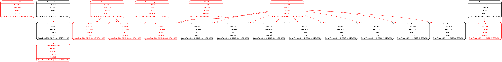

这是一份由 DigDog 产品为您生成的恶意软件检测报告
基本情况
受理时间：2020-06-01_14:27:05
待检材料：/home/float/Desktop/testing/goznym 内存镜像文件
检测时间：2020-06-01_14:37:40
检测方：DigDog 恶意软件自动检测产品
检测分析报告
内存系统信息
该部分提供内存转储文件的基本属性信息
可能的操作系统版本 : Win2008SP1x86, Win7SP1x64, Win2008R2SP0x64
DTB目录表基址 : 1601536
KDBG信息 : 272678948753568
处理器核数 : 2
Windows服务包版本 : 1
镜像日期和时间 : 2020-05-02 06:52:05 UTC+0000
镜像本地日期和时间 : 2020-05-02 14:52:05 +0800
|
恶意进程信息
该部分提供本产品扫描出的恶意进程信息。具体包括恶意进程命令行信息、恶意进程DLL加载信息、DLL对应函数加载信息以及恶意VAD节点信息
恶意进程命令行信息
该部分提供本产品检测出的恶意进程的进程ID、进程名和命令行加载信息
PID 进程名 命令行参数
------- ------------------------- ------------------------------
2912 rundll32.exe -v exlxwjk.dll
1892 taskhost.exe "taskhost.exe"
1416 VBoxTray.exe "C:\Windows\System32\VBoxTray.exe"
460 winlogon.exe winlogon.exe
1356 filezilla.exe "C:\Program Files\FileZilla FTP Client\filezilla.exe"
2808 firefox.exe "C:\Program Files (x86)\Mozilla Firefox\firefox.exe" -contentproc --channel="1196.0.1728630941\770701979" -parentBuildID 20200403170909 -prefsHandle 1424 -prefMapHandle 1288 -prefsLen 1 -prefMapSize 216283 -appdir "C:\Program Files (x86)\Mozilla Firefox\browser" - 1196 "\\.\pipe\gecko-crash-server-pipe.1196" 1524 gpu
1196 firefox.exe "C:\Program Files (x86)\Mozilla Firefox\firefox.exe" -first-startup
2284 conhost.exe \??\C:\Windows\system32\conhost.exe
1976 explorer.exe C:\Windows\Explorer.EXE
2620 cmd.exe "C:\Windows\System32\cmd.exe" /C "C:\Users\float\Desktop\autoexec.bat"
|
DLL信息
该部分提供恶意进程加载的动态链接库信息，包括进程ID、进程名、文件大小、DLL加载名称及加载次数
PID 进程名 加载次数 文件大小 Dll名称
------- ------------------------- ------------- -------------- ------------------------------
2912 rundll32.exe 65535 61440 C:\Windows\system32\rundll32.exe
2912 rundll32.exe 65535 1740800 C:\Windows\SYSTEM32\ntdll.dll
2912 rundll32.exe 65535 1175552 C:\Windows\system32\kernel32.dll
2912 rundll32.exe 65535 438272 C:\Windows\system32\KERNELBASE.dll
2912 rundll32.exe 65535 1024000 C:\Windows\system32\USER32.dll
2912 rundll32.exe 65535 421888 C:\Windows\system32\GDI32.dll
2912 rundll32.exe 65535 57344 C:\Windows\system32\LPK.dll
2912 rundll32.exe 65535 823296 C:\Windows\system32\USP10.dll
2912 rundll32.exe 65535 651264 C:\Windows\system32\msvcrt.dll
2912 rundll32.exe 65535 94208 C:\Windows\system32\imagehlp.dll
2912 rundll32.exe 2 188416 C:\Windows\system32\IMM32.DLL
2912 rundll32.exe 1 1085440 C:\Windows\system32\MSCTF.dll
2912 rundll32.exe 1 897024 C:\Windows\system32\advapi32.dll
2912 rundll32.exe 4 126976 C:\Windows\SYSTEM32\sechost.dll
2912 rundll32.exe 4 1232896 C:\Windows\system32\RPCRT4.dll
2912 rundll32.exe 1 151552 C:\Windows\system32\SspiCli.dll
1892 taskhost.exe 65535 81920 C:\Windows\system32\taskhost.exe
1892 taskhost.exe 65535 1740800 C:\Windows\SYSTEM32\ntdll.dll
1892 taskhost.exe 65535 1175552 C:\Windows\system32\kernel32.dll
1892 taskhost.exe 65535 438272 C:\Windows\system32\KERNELBASE.dll
1892 taskhost.exe 65535 651264 C:\Windows\system32\msvcrt.dll
1892 taskhost.exe 65535 2109440 C:\Windows\system32\ole32.dll
1892 taskhost.exe 65535 421888 C:\Windows\system32\GDI32.dll
1892 taskhost.exe 65535 1024000 C:\Windows\system32\USER32.dll
1892 taskhost.exe 65535 57344 C:\Windows\system32\LPK.dll
1892 taskhost.exe 65535 823296 C:\Windows\system32\USP10.dll
1892 taskhost.exe 65535 1232896 C:\Windows\system32\RPCRT4.dll
1892 taskhost.exe 65535 880640 C:\Windows\system32\OLEAUT32.dll
1892 taskhost.exe 4 188416 C:\Windows\system32\IMM32.DLL
1892 taskhost.exe 7 1085440 C:\Windows\system32\MSCTF.dll
1892 taskhost.exe 2 61440 C:\Windows\system32\CRYPTBASE.dll
1892 taskhost.exe 123 126976 C:\Windows\SYSTEM32\sechost.dll
1892 taskhost.exe 21 897024 C:\Windows\system32\ADVAPI32.dll
1892 taskhost.exe 3 352256 C:\Windows\system32\uxtheme.dll
1892 taskhost.exe 2 98304 C:\Windows\system32\dwmapi.dll
1892 taskhost.exe 1 626688 C:\Windows\system32\CLBCatQ.DLL
1892 taskhost.exe 2 98304 C:\Windows\System32\PlaySndSrv.dll
1892 taskhost.exe 1 81920 C:\Windows\system32\RpcRtRemote.dll
1892 taskhost.exe 2 45056 C:\Windows\system32\MsCtfMonitor.dll
1892 taskhost.exe 2 249856 C:\Windows\system32\MSUTB.dll
1892 taskhost.exe 2 249856 C:\Windows\system32\WINSTA.dll
1892 taskhost.exe 2 69632 C:\Windows\system32\WTSAPI32.dll
1892 taskhost.exe 1 57344 C:\Windows\system32\dimsjob.dll
1892 taskhost.exe 2 462848 C:\Windows\system32\SHLWAPI.dll
1892 taskhost.exe 1 1208320 C:\Windows\system32\taskschd.dll
1892 taskhost.exe 2 151552 C:\Windows\system32\SspiCli.dll
1892 taskhost.exe 1 45056 C:\Windows\System32\HotStartUserAgent.dll
1892 taskhost.exe 1 45056 C:\Windows\system32\slc.dll
1892 taskhost.exe 1 475136 C:\Windows\System32\netprofm.dll
1892 taskhost.exe 1 32768 C:\Windows\system32\NSI.dll
1892 taskhost.exe 1 86016 C:\Windows\System32\nlaapi.dll
1892 taskhost.exe 1 94208 C:\Windows\system32\CRYPTSP.dll
1892 taskhost.exe 1 290816 C:\Windows\system32\rsaenh.dll
1892 taskhost.exe 1 49152 C:\Windows\System32\npmproxy.dll
1892 taskhost.exe 2 49152 C:\Windows\system32\dsrole.dll
1892 taskhost.exe 12 241664 C:\Windows\system32\WINMM.dll
1892 taskhost.exe 11 307200 C:\Windows\system32\MMDevAPI.DLL
1892 taskhost.exe 12 1228800 C:\Windows\system32\PROPSYS.dll
1892 taskhost.exe 5 241664 C:\Windows\system32\wdmaud.drv
1892 taskhost.exe 5 24576 C:\Windows\system32\ksuser.dll
1892 taskhost.exe 5 36864 C:\Windows\system32\AVRT.dll
1892 taskhost.exe 1 1929216 C:\Windows\system32\SETUPAPI.dll
1892 taskhost.exe 4 221184 C:\Windows\system32\CFGMGR32.dll
1892 taskhost.exe 1 106496 C:\Windows\system32\DEVOBJ.dll
1892 taskhost.exe 2 323584 C:\Windows\system32\AUDIOSES.DLL
1892 taskhost.exe 2 40960 C:\Windows\system32\msacm32.drv
1892 taskhost.exe 2 98304 C:\Windows\system32\MSACM32.dll
1892 taskhost.exe 1 36864 C:\Windows\system32\midimap.dll
1416 VBoxTray.exe 65535 1748992 C:\Windows\System32\VBoxTray.exe
1416 VBoxTray.exe 65535 1740800 C:\Windows\SYSTEM32\ntdll.dll
1416 VBoxTray.exe 65535 1175552 C:\Windows\system32\kernel32.dll
1416 VBoxTray.exe 65535 438272 C:\Windows\system32\KERNELBASE.dll
1416 VBoxTray.exe 65535 98304 C:\Windows\System32\MPR.dll
1416 VBoxTray.exe 65535 1024000 C:\Windows\system32\USER32.dll
1416 VBoxTray.exe 65535 421888 C:\Windows\system32\GDI32.dll
1416 VBoxTray.exe 65535 57344 C:\Windows\system32\LPK.dll
1416 VBoxTray.exe 65535 823296 C:\Windows\system32\USP10.dll
1416 VBoxTray.exe 65535 651264 C:\Windows\system32\msvcrt.dll
1416 VBoxTray.exe 65535 897024 C:\Windows\system32\ADVAPI32.dll
1416 VBoxTray.exe 65535 126976 C:\Windows\SYSTEM32\sechost.dll
1416 VBoxTray.exe 65535 1232896 C:\Windows\system32\RPCRT4.dll
1416 VBoxTray.exe 65535 14188544 C:\Windows\system32\SHELL32.dll
1416 VBoxTray.exe 65535 462848 C:\Windows\system32\SHLWAPI.dll
1416 VBoxTray.exe 65535 315392 C:\Windows\system32\WS2_32.dll
1416 VBoxTray.exe 65535 32768 C:\Windows\system32\NSI.dll
1416 VBoxTray.exe 65535 2109440 C:\Windows\system32\ole32.dll
1416 VBoxTray.exe 2 188416 C:\Windows\system32\IMM32.DLL
1416 VBoxTray.exe 1 1085440 C:\Windows\system32\MSCTF.dll
1416 VBoxTray.exe 3 352256 C:\Windows\system32\uxtheme.dll
1416 VBoxTray.exe 1 69632 C:\Windows\system32\WTSAPI32.DLL
1416 VBoxTray.exe 2 249856 C:\Windows\System32\WINSTA.dll
1416 VBoxTray.exe 2 69632 C:\Windows\System32\VBoxHook.dll
1416 VBoxTray.exe 2 61440 C:\Windows\System32\CRYPTBASE.dll
1416 VBoxTray.exe 1 151552 C:\Windows\System32\SspiCli.dll
1416 VBoxTray.exe 1 94208 C:\Windows\System32\CRYPTSP.dll
1416 VBoxTray.exe 1 290816 C:\Windows\system32\rsaenh.dll
1416 VBoxTray.exe 1 81920 C:\Windows\System32\RpcRtRemote.dll
1356 filezilla.exe 65535 9543680 C:\Program Files\FileZilla FTP Client\filezilla.exe
1356 filezilla.exe 65535 1740800 C:\Windows\SYSTEM32\ntdll.dll
1356 filezilla.exe 65535 1175552 C:\Windows\system32\kernel32.dll
1356 filezilla.exe 65535 438272 C:\Windows\system32\KERNELBASE.dll
1356 filezilla.exe 65535 430080 C:\Program Files\FileZilla FTP Client\libfilezilla-3.dll
1356 filezilla.exe 65535 1781760 C:\Program Files\FileZilla FTP Client\libgnutls-30.dll
1356 filezilla.exe 65535 577536 C:\Program Files\FileZilla FTP Client\libgmp-10.dll
1356 filezilla.exe 65535 651264 C:\Windows\system32\msvcrt.dll
1356 filezilla.exe 65535 237568 C:\Program Files\FileZilla FTP Client\libhogweed-5.dll
1356 filezilla.exe 65535 1024000 C:\Windows\system32\USER32.dll
1356 filezilla.exe 65535 421888 C:\Windows\system32\GDI32.dll
1356 filezilla.exe 65535 57344 C:\Windows\system32\LPK.dll
1356 filezilla.exe 65535 823296 C:\Windows\system32\USP10.dll
1356 filezilla.exe 65535 258048 C:\Program Files\FileZilla FTP Client\libnettle-7.dll
1356 filezilla.exe 65535 897024 C:\Windows\system32\ADVAPI32.dll
1356 filezilla.exe 65535 126976 C:\Windows\SYSTEM32\sechost.dll
1356 filezilla.exe 65535 1232896 C:\Windows\system32\RPCRT4.dll
1356 filezilla.exe 65535 1470464 C:\Windows\system32\CRYPT32.dll
1356 filezilla.exe 65535 61440 C:\Windows\system32\MSASN1.dll
1356 filezilla.exe 65535 315392 C:\Windows\system32\WS2_32.dll
1356 filezilla.exe 65535 32768 C:\Windows\system32\NSI.dll
1356 filezilla.exe 65535 114688 C:\Program Files\FileZilla FTP Client\libgcc_s_seh-1.dll
1356 filezilla.exe 65535 14188544 C:\Windows\system32\SHELL32.dll
1356 filezilla.exe 65535 462848 C:\Windows\system32\SHLWAPI.dll
1356 filezilla.exe 65535 1421312 C:\Program Files\FileZilla FTP Client\libstdc++-6.dll
1356 filezilla.exe 65535 253952 C:\Program Files\FileZilla FTP Client\libpng16-16.dll
1356 filezilla.exe 65535 147456 C:\Program Files\FileZilla FTP Client\zlib1.dll
1356 filezilla.exe 65535 1040384 C:\Program Files\FileZilla FTP Client\libsqlite3-0.dll
1356 filezilla.exe 65535 2048000 C:\Windows\WinSxS\amd64_microsoft.windows.common-controls_6595b64144ccf1df_6.0.7601.17514_none_fa396087175ac9ac\COMCTL32.dll
1356 filezilla.exe 65535 618496 C:\Windows\system32\comdlg32.dll
1356 filezilla.exe 65535 98304 C:\Windows\system32\MPR.dll
1356 filezilla.exe 65535 90112 C:\Windows\system32\NETAPI32.dll
1356 filezilla.exe 65535 49152 C:\Windows\system32\netutils.dll
1356 filezilla.exe 65535 143360 C:\Windows\system32\srvcli.dll
1356 filezilla.exe 65535 86016 C:\Windows\system32\wkscli.dll
1356 filezilla.exe 65535 12288 C:\Windows\system32\Normaliz.dll
1356 filezilla.exe 65535 2109440 C:\Windows\system32\ole32.dll
1356 filezilla.exe 65535 880640 C:\Windows\system32\OLEAUT32.dll
1356 filezilla.exe 65535 180224 C:\Windows\system32\POWRPROF.dll
1356 filezilla.exe 65535 1929216 C:\Windows\system32\SETUPAPI.dll
1356 filezilla.exe 65535 221184 C:\Windows\system32\CFGMGR32.dll
1356 filezilla.exe 65535 106496 C:\Windows\system32\DEVOBJ.dll
1356 filezilla.exe 65535 241664 C:\Windows\system32\WINMM.dll
1356 filezilla.exe 5 188416 C:\Windows\system32\IMM32.DLL
1356 filezilla.exe 4 1085440 C:\Windows\system32\MSCTF.dll
1356 filezilla.exe 1 319488 C:\Windows\system32\ncrypt.dll
1356 filezilla.exe 1 139264 C:\Windows\system32\bcrypt.dll
1356 filezilla.exe 2 94208 C:\Windows\system32\CRYPTSP.dll
1356 filezilla.exe 1 290816 C:\Windows\system32\rsaenh.dll
1356 filezilla.exe 2 61440 C:\Windows\system32\CRYPTBASE.dll
1356 filezilla.exe 5 352256 C:\Windows\system32\uxtheme.dll
1356 filezilla.exe 2 98304 C:\Windows\system32\dwmapi.dll
1356 filezilla.exe 1 81920 C:\Windows\system32\RpcRtRemote.dll
1356 filezilla.exe 1 626688 C:\Windows\system32\CLBCatQ.DLL
1356 filezilla.exe 1 1220608 C:\Windows\system32\WindowsCodecs.dll
1356 filezilla.exe 1 356352 C:\Windows\system32\apphelp.dll
1356 filezilla.exe 2 217088 C:\Windows\system32\EhStorShell.dll
1356 filezilla.exe 10 1228800 C:\Windows\system32\PROPSYS.dll
1356 filezilla.exe 2 516096 C:\Windows\System32\cscui.dll
1356 filezilla.exe 2 49152 C:\Windows\System32\CSCDLL.dll
1356 filezilla.exe 2 61440 C:\Windows\system32\CSCAPI.dll
1356 filezilla.exe 2 524288 C:\Windows\system32\ntshrui.dll
1356 filezilla.exe 1 45056 C:\Windows\system32\slc.dll
1356 filezilla.exe 1 811008 C:\Windows\system32\msftedit.DLL
1356 filezilla.exe 1 61440 C:\Windows\system32\profapi.dll
1356 filezilla.exe 1 28672 C:\Windows\system32\msimg32.dll
1356 filezilla.exe 5 348160 C:\Windows\system32\mswsock.dll
1356 filezilla.exe 1 28672 C:\Windows\System32\wshtcpip.dll
1356 filezilla.exe 1 28672 C:\Windows\System32\wship6.dll
1356 filezilla.exe 1 372736 C:\Windows\system32\DNSAPI.dll
1356 filezilla.exe 1 159744 C:\Windows\system32\IPHLPAPI.DLL
1356 filezilla.exe 1 45056 C:\Windows\system32\WINNSI.DLL
1356 filezilla.exe 1 32768 C:\Windows\system32\rasadhlp.dll
1356 filezilla.exe 1 339968 C:\Windows\System32\fwpuclnt.dll
1356 filezilla.exe 1 212992 C:\Windows\System32\shdocvw.dll
1356 filezilla.exe 1 274432 C:\Windows\system32\DUser.dll
1356 filezilla.exe 1 151552 C:\Windows\system32\SspiCli.dll
460 winlogon.exe 65535 401408 C:\Windows\system32\winlogon.exe
460 winlogon.exe 65535 1740800 C:\Windows\SYSTEM32\ntdll.dll
460 winlogon.exe 65535 1175552 C:\Windows\system32\kernel32.dll
460 winlogon.exe 65535 438272 C:\Windows\system32\KERNELBASE.dll
460 winlogon.exe 65535 1024000 C:\Windows\system32\USER32.dll
460 winlogon.exe 65535 421888 C:\Windows\system32\GDI32.dll
460 winlogon.exe 65535 57344 C:\Windows\system32\LPK.dll
460 winlogon.exe 65535 823296 C:\Windows\system32\USP10.dll
460 winlogon.exe 65535 651264 C:\Windows\system32\msvcrt.dll
460 winlogon.exe 65535 249856 C:\Windows\system32\WINSTA.dll
460 winlogon.exe 65535 1232896 C:\Windows\system32\RPCRT4.dll
460 winlogon.exe 2 188416 C:\Windows\system32\IMM32.DLL
460 winlogon.exe 1 1085440 C:\Windows\system32\MSCTF.dll
460 winlogon.exe 8 897024 C:\Windows\system32\ADVAPI32.dll
460 winlogon.exe 42 126976 C:\Windows\SYSTEM32\sechost.dll
460 winlogon.exe 1 61440 C:\Windows\system32\profapi.dll
460 winlogon.exe 1 81920 C:\Windows\system32\RpcRtRemote.dll
460 winlogon.exe 65535 356352 C:\Windows\system32\apphelp.dll
460 winlogon.exe 1 40960 C:\Windows\system32\UXINIT.dll
460 winlogon.exe 3 352256 C:\Windows\system32\UxTheme.dll
460 winlogon.exe 1 94208 C:\Windows\system32\CRYPTSP.dll
460 winlogon.exe 1 290816 C:\Windows\system32\rsaenh.dll
460 winlogon.exe 1 61440 C:\Windows\system32\CRYPTBASE.dll
460 winlogon.exe 1 1220608 C:\Windows\system32\WindowsCodecs.dll
460 winlogon.exe 1 2109440 C:\Windows\system32\ole32.dll
460 winlogon.exe 1 86016 C:\Windows\system32\wkscli.dll
460 winlogon.exe 1 204800 C:\Windows\system32\netjoin.dll
460 winlogon.exe 2 49152 C:\Windows\system32\netutils.dll
460 winlogon.exe 2 151552 C:\Windows\system32\SspiCli.dll
460 winlogon.exe 1 45056 C:\Windows\system32\slc.dll
460 winlogon.exe 1 98304 C:\Windows\system32\MPR.dll
1976 explorer.exe 65535 2883584 C:\Windows\Explorer.EXE
1976 explorer.exe 65535 1740800 C:\Windows\SYSTEM32\ntdll.dll
1976 explorer.exe 65535 1175552 C:\Windows\system32\kernel32.dll
1976 explorer.exe 65535 438272 C:\Windows\system32\KERNELBASE.dll
1976 explorer.exe 65535 897024 C:\Windows\system32\ADVAPI32.dll
1976 explorer.exe 65535 651264 C:\Windows\system32\msvcrt.dll
1976 explorer.exe 65535 126976 C:\Windows\SYSTEM32\sechost.dll
1976 explorer.exe 65535 1232896 C:\Windows\system32\RPCRT4.dll
1976 explorer.exe 65535 421888 C:\Windows\system32\GDI32.dll
1976 explorer.exe 65535 1024000 C:\Windows\system32\USER32.dll
1976 explorer.exe 65535 57344 C:\Windows\system32\LPK.dll
1976 explorer.exe 65535 823296 C:\Windows\system32\USP10.dll
1976 explorer.exe 65535 462848 C:\Windows\system32\SHLWAPI.dll
1976 explorer.exe 65535 14188544 C:\Windows\system32\SHELL32.dll
1976 explorer.exe 65535 2109440 C:\Windows\system32\ole32.dll
1976 explorer.exe 65535 880640 C:\Windows\system32\OLEAUT32.dll
1976 explorer.exe 65535 1875968 C:\Windows\system32\EXPLORERFRAME.dll
1976 explorer.exe 65535 274432 C:\Windows\system32\DUser.dll
1976 explorer.exe 65535 991232 C:\Windows\system32\DUI70.dll
1976 explorer.exe 65535 188416 C:\Windows\system32\IMM32.dll
1976 explorer.exe 65535 1085440 C:\Windows\system32\MSCTF.dll
1976 explorer.exe 65535 352256 C:\Windows\system32\UxTheme.dll
1976 explorer.exe 65535 180224 C:\Windows\system32\POWRPROF.dll
1976 explorer.exe 65535 1929216 C:\Windows\system32\SETUPAPI.dll
1976 explorer.exe 65535 221184 C:\Windows\system32\CFGMGR32.dll
1976 explorer.exe 65535 106496 C:\Windows\system32\DEVOBJ.dll
1976 explorer.exe 65535 98304 C:\Windows\system32\dwmapi.dll
1976 explorer.exe 65535 45056 C:\Windows\system32\slc.dll
1976 explorer.exe 65535 2183168 C:\Windows\WinSxS\amd64_microsoft.windows.gdiplus_6595b64144ccf1df_1.1.7601.17514_none_2b24536c71ed437a\gdiplus.dll
1976 explorer.exe 65535 45056 C:\Windows\system32\Secur32.dll
1976 explorer.exe 65535 151552 C:\Windows\system32\SSPICLI.DLL
1976 explorer.exe 65535 1228800 C:\Windows\system32\PROPSYS.dll
1976 explorer.exe 4 249856 C:\Windows\system32\WINSTA.dll
1976 explorer.exe 2 61440 C:\Windows\system32\CRYPTBASE.dll
1976 explorer.exe 75 2048000 C:\Windows\WinSxS\amd64_microsoft.windows.common-controls_6595b64144ccf1df_6.0.7601.17514_none_fa396087175ac9ac\comctl32.dll
1976 explorer.exe 3 1220608 C:\Windows\system32\WindowsCodecs.dll
1976 explorer.exe 6 61440 C:\Windows\system32\profapi.dll
1976 explorer.exe 65535 356352 C:\Windows\system32\apphelp.dll
1976 explorer.exe 1 626688 C:\Windows\system32\CLBCatQ.DLL
1976 explorer.exe 2 217088 C:\Windows\system32\EhStorShell.dll
1976 explorer.exe 2 516096 C:\Windows\System32\cscui.dll
1976 explorer.exe 2 49152 C:\Windows\System32\CSCDLL.dll
1976 explorer.exe 4 61440 C:\Windows\system32\CSCAPI.dll
1976 explorer.exe 4 524288 C:\Windows\system32\ntshrui.dll
1976 explorer.exe 2 143360 C:\Windows\system32\srvcli.dll
1976 explorer.exe 1 32768 C:\Windows\system32\IconCodecService.dll
1976 explorer.exe 2 94208 C:\Windows\system32\CRYPTSP.dll
1976 explorer.exe 1 290816 C:\Windows\system32\rsaenh.dll
1976 explorer.exe 1 81920 C:\Windows\system32\RpcRtRemote.dll
1976 explorer.exe 3 86016 C:\Windows\system32\wkscli.dll
1976 explorer.exe 6 49152 C:\Windows\system32\netutils.dll
1976 explorer.exe 3 241664 C:\Windows\system32\SndVolSSO.DLL
1976 explorer.exe 4 45056 C:\Windows\system32\HID.DLL
1976 explorer.exe 12 307200 C:\Windows\System32\MMDevApi.dll
1976 explorer.exe 1 536576 C:\Windows\system32\timedate.cpl
1976 explorer.exe 6 102400 C:\Windows\system32\ATL.DLL
1976 explorer.exe 1 974848 C:\Windows\system32\actxprxy.dll
1976 explorer.exe 4 212992 C:\Windows\System32\shdocvw.dll
1976 explorer.exe 2 49152 C:\Windows\system32\LINKINFO.dll
1976 explorer.exe 1 249856 C:\Windows\system32\msutb.dll
1976 explorer.exe 5 122880 C:\Windows\system32\USERENV.dll
1976 explorer.exe 1 147456 C:\Windows\System32\shacct.dll
1976 explorer.exe 2 118784 C:\Windows\system32\SAMLIB.dll
1976 explorer.exe 1 81920 C:\Windows\system32\samcli.dll
1976 explorer.exe 1 2764800 C:\Windows\System32\gameux.dll
1976 explorer.exe 2 217088 C:\Windows\System32\XmlLite.dll
1976 explorer.exe 17 1470464 C:\Windows\system32\CRYPT32.dll
1976 explorer.exe 18 61440 C:\Windows\system32\MSASN1.dll
1976 explorer.exe 6 507904 C:\Windows\System32\wer.dll
1976 explorer.exe 3 241664 C:\Windows\system32\msls31.dll
1976 explorer.exe 1 520192 C:\Program Files\Common Files\microsoft shared\ink\tiptsf.dll
1976 explorer.exe 1 1941504 C:\Windows\system32\authui.dll
1976 explorer.exe 1 1085440 C:\Windows\system32\CRYPTUI.dll
1976 explorer.exe 14 1540096 C:\Windows\system32\urlmon.dll
1976 explorer.exe 10 1220608 C:\Windows\system32\WININET.dll
1976 explorer.exe 18 2461696 C:\Windows\system32\iertutil.dll
1976 explorer.exe 1 184320 C:\Windows\system32\ntmarta.dll
1976 explorer.exe 1 335872 C:\Windows\system32\WLDAP32.dll
1976 explorer.exe 2 28672 C:\Windows\system32\PSAPI.DLL
1976 explorer.exe 1 1687552 C:\Windows\system32\NetworkExplorer.dll
1976 explorer.exe 15 241664 C:\Windows\system32\WINMM.dll
1976 explorer.exe 5 241664 C:\Windows\system32\wdmaud.drv
1976 explorer.exe 5 24576 C:\Windows\system32\ksuser.dll
1976 explorer.exe 5 36864 C:\Windows\system32\AVRT.dll
1976 explorer.exe 2 323584 C:\Windows\system32\AUDIOSES.DLL
1976 explorer.exe 2 40960 C:\Windows\system32\msacm32.drv
1976 explorer.exe 2 98304 C:\Windows\system32\MSACM32.dll
1976 explorer.exe 1 36864 C:\Windows\system32\midimap.dll
1976 explorer.exe 1 471040 C:\Program Files\Internet Explorer\ieproxy.dll
1976 explorer.exe 1 73728 C:\Windows\system32\DEVRTL.dll
1976 explorer.exe 3 98304 C:\Windows\system32\MPR.dll
1976 explorer.exe 5 274432 C:\Windows\system32\stobject.dll
1976 explorer.exe 5 761856 C:\Windows\system32\BatMeter.dll
1976 explorer.exe 3 69632 C:\Windows\system32\WTSAPI32.dll
1976 explorer.exe 1 421888 C:\Windows\system32\es.dll
1976 explorer.exe 1 430080 C:\Windows\system32\prnfldr.dll
1976 explorer.exe 2 462848 C:\Windows\system32\WINSPOOL.DRV
1976 explorer.exe 1 475136 C:\Windows\system32\dxp.dll
1976 explorer.exe 1 90112 C:\Windows\system32\Syncreg.dll
1976 explorer.exe 1 45056 C:\Windows\ehome\ehSSO.dll
1976 explorer.exe 1 2666496 C:\Windows\System32\netshell.dll
1976 explorer.exe 5 159744 C:\Windows\System32\IPHLPAPI.DLL
1976 explorer.exe 31 32768 C:\Windows\system32\NSI.dll
1976 explorer.exe 5 45056 C:\Windows\System32\WINNSI.DLL
1976 explorer.exe 3 86016 C:\Windows\System32\nlaapi.dll
1976 explorer.exe 2 65536 C:\Windows\System32\AltTab.dll
1976 explorer.exe 1 131072 C:\Windows\system32\wpdshserviceobj.dll
1976 explorer.exe 1 233472 C:\Windows\system32\PortableDeviceTypes.dll
1976 explorer.exe 1 774144 C:\Windows\system32\PortableDeviceApi.dll
1976 explorer.exe 1 237568 C:\Windows\system32\WINTRUST.dll
1976 explorer.exe 1 118784 C:\Windows\system32\mssprxy.dll
1976 explorer.exe 2 1822720 C:\Windows\System32\pnidui.dll
1976 explorer.exe 3 126976 C:\Windows\System32\QUtil.dll
1976 explorer.exe 14 446464 C:\Windows\System32\wevtapi.dll
1976 explorer.exe 1 69632 C:\Windows\system32\dhcpcsvc6.DLL
1976 explorer.exe 16 315392 C:\Windows\system32\WS2_32.dll
1976 explorer.exe 1 98304 C:\Windows\system32\dhcpcsvc.DLL
1976 explorer.exe 1 40960 C:\Windows\system32\credssp.dll
1976 explorer.exe 1 49152 C:\Windows\System32\npmproxy.dll
1976 explorer.exe 2 258048 C:\Windows\System32\cscobj.dll
1976 explorer.exe 1 131072 C:\Windows\system32\Wlanapi.dll
1976 explorer.exe 2 28672 C:\Windows\system32\wlanutil.dll
1976 explorer.exe 1 385024 C:\Windows\system32\wwanapi.dll
1976 explorer.exe 1 53248 C:\Windows\system32\wwapi.dll
1976 explorer.exe 1 360448 C:\Windows\System32\srchadmin.dll
1976 explorer.exe 1 282624 C:\Windows\System32\QAgent.dll
1976 explorer.exe 1 741376 C:\Windows\System32\bthprops.cpl
1976 explorer.exe 2 12283904 C:\Windows\System32\ieframe.dll
1976 explorer.exe 4 344064 C:\Windows\System32\OLEACC.dll
1976 explorer.exe 1 593920 C:\Windows\system32\SXS.DLL
1976 explorer.exe 1 2273280 C:\Windows\System32\SyncCenter.dll
1976 explorer.exe 2 794624 C:\Windows\System32\Actioncenter.dll
1976 explorer.exe 1 520192 C:\Windows\system32\imapi2.dll
1976 explorer.exe 1 348160 C:\Windows\System32\hgcpl.dll
1976 explorer.exe 1 200704 C:\Windows\System32\provsvc.dll
1976 explorer.exe 1 475136 C:\Windows\System32\netprofm.dll
1976 explorer.exe 1 135168 C:\Windows\System32\UIAnimation.dll
1976 explorer.exe 1 880640 C:\Windows\system32\fxsst.dll
1976 explorer.exe 1 643072 C:\Windows\system32\FXSAPI.dll
1976 explorer.exe 1 929792 C:\Windows\system32\FXSRESM.DLL
1976 explorer.exe 5 49152 C:\Windows\system32\VERSION.dll
1976 explorer.exe 1 241664 C:\Windows\system32\MLANG.dll
1976 explorer.exe 1 163840 C:\Windows\System32\wscinterop.dll
1976 explorer.exe 4 77824 C:\Windows\System32\WSCAPI.dll
1976 explorer.exe 2 1175552 C:\Windows\System32\wscui.cpl
1976 explorer.exe 1 1294336 C:\Windows\System32\werconcpl.dll
1976 explorer.exe 1 311296 C:\Windows\System32\framedynos.dll
1976 explorer.exe 1 102400 C:\Windows\System32\wercplsupport.dll
1976 explorer.exe 1 2039808 C:\Windows\System32\msxml6.dll
1976 explorer.exe 1 45056 C:\Windows\System32\hcproviders.dll
1976 explorer.exe 1 450560 C:\Windows\system32\xwizards.dll
1976 explorer.exe 1 208896 C:\Windows\system32\RstrtMgr.DLL
1976 explorer.exe 1 319488 C:\Windows\system32\ncrypt.dll
1976 explorer.exe 3 139264 C:\Windows\system32\bcrypt.dll
1976 explorer.exe 1 311296 C:\Windows\system32\bcryptprimitives.dll
1976 explorer.exe 1 217088 C:\Windows\system32\syncui.dll
1976 explorer.exe 1 110592 C:\Windows\system32\SYNCENG.dll
1976 explorer.exe 1 380928 C:\Windows\system32\zipfldr.dll
1976 explorer.exe 1 811008 C:\Windows\system32\MsftEdit.dll
1976 explorer.exe 1 106496 C:\Program Files\Windows Sidebar\sbdrop.dll
1976 explorer.exe 1 188416 C:\Windows\system32\twext.dll
1976 explorer.exe 1 73728 C:\Windows\system32\acppage.dll
1976 explorer.exe 1 12288 C:\Windows\system32\sfc.dll
1976 explorer.exe 5 65536 C:\Windows\system32\sfc_os.DLL
1976 explorer.exe 3 3235840 C:\Windows\system32\msi.dll
1976 explorer.exe 1 159744 C:\Windows\system32\EhStorAPI.dll
1976 explorer.exe 2 503808 C:\Windows\System32\StructuredQuery.dll
1976 explorer.exe 1 49152 C:\Windows\system32\dsrole.dll
1976 explorer.exe 1 118784 C:\Windows\System32\wzcdlg.dll
1976 explorer.exe 1 65536 C:\Windows\system32\sdautoplay.dll
1976 explorer.exe 3 258048 C:\Windows\system32\SPP.dll
1976 explorer.exe 5 1769472 C:\Windows\system32\VSSAPI.DLL
1976 explorer.exe 3 94208 C:\Windows\system32\VssTrace.DLL
1976 explorer.exe 2 1134592 C:\Windows\system32\sdengin2.dll
1976 explorer.exe 2 212992 C:\Windows\system32\credui.dll
1976 explorer.exe 1 1761280 C:\Windows\system32\sysmain.dll
1976 explorer.exe 2 462848 C:\Windows\system32\winhttp.dll
1976 explorer.exe 2 409600 C:\Windows\system32\webio.dll
1976 explorer.exe 1 86016 C:\Windows\system32\napinsp.dll
1976 explorer.exe 2 102400 C:\Windows\system32\pnrpnsp.dll
1976 explorer.exe 3 348160 C:\Windows\System32\mswsock.dll
1976 explorer.exe 2 372736 C:\Windows\system32\DNSAPI.dll
1976 explorer.exe 1 45056 C:\Windows\System32\winrnr.dll
1976 explorer.exe 1 32768 C:\Windows\system32\rasadhlp.dll
1976 explorer.exe 1 339968 C:\Windows\System32\fwpuclnt.dll
1976 explorer.exe 1 28672 C:\Windows\System32\wshtcpip.dll
1196 firefox.exe 65535 532480 C:\Program Files (x86)\Mozilla Firefox\firefox.exe
1196 firefox.exe 65535 1740800 C:\Windows\SYSTEM32\ntdll.dll
1196 firefox.exe 3 258048 C:\Windows\SYSTEM32\wow64.dll
1196 firefox.exe 1 376832 C:\Windows\SYSTEM32\wow64win.dll
1196 firefox.exe 1 32768 C:\Windows\SYSTEM32\wow64cpu.dll
1196 firefox.exe 65535 532480 C:\Program Files (x86)\Mozilla Firefox\firefox.exe
1196 firefox.exe 65535 1572864 C:\Windows\SysWOW64\ntdll.dll
1196 firefox.exe 65535 1114112 C:\Windows\syswow64\kernel32.dll
1196 firefox.exe 65535 286720 C:\Windows\syswow64\KERNELBASE.dll
1196 firefox.exe 65535 462848 C:\Program Files (x86)\Mozilla Firefox\mozglue.dll
1196 firefox.exe 65535 655360 C:\Windows\syswow64\ADVAPI32.dll
1196 firefox.exe 65535 704512 C:\Windows\syswow64\msvcrt.dll
1196 firefox.exe 65535 102400 C:\Windows\SysWOW64\sechost.dll
1196 firefox.exe 65535 983040 C:\Windows\syswow64\RPCRT4.dll
1196 firefox.exe 65535 393216 C:\Windows\syswow64\SspiCli.dll
1196 firefox.exe 65535 49152 C:\Windows\syswow64\CRYPTBASE.dll
1196 firefox.exe 65535 1167360 C:\Windows\syswow64\CRYPT32.dll
1196 firefox.exe 65535 49152 C:\Windows\syswow64\MSASN1.dll
1196 firefox.exe 65535 36864 C:\Windows\system32\VERSION.dll
1196 firefox.exe 65535 184320 C:\Windows\syswow64\WINTRUST.dll
1196 firefox.exe 65535 962560 C:\Windows\system32\dbghelp.dll
1196 firefox.exe 65535 458752 C:\Program Files (x86)\Mozilla Firefox\MSVCP140.dll
1196 firefox.exe 65535 81920 C:\Program Files (x86)\Mozilla Firefox\VCRUNTIME140.dll
1196 firefox.exe 65535 16384 C:\Program Files (x86)\Mozilla Firefox\api-ms-win-crt-runtime-l1-1-0.dll
1196 firefox.exe 65535 1171456 C:\Program Files (x86)\Mozilla Firefox\ucrtbase.DLL
1196 firefox.exe 65535 12288 C:\Program Files (x86)\Mozilla Firefox\api-ms-win-core-localization-l1-2-0.dll
1196 firefox.exe 65535 12288 C:\Program Files (x86)\Mozilla Firefox\api-ms-win-core-processthreads-l1-1-1.dll
1196 firefox.exe 65535 12288 C:\Program Files (x86)\Mozilla Firefox\api-ms-win-core-file-l1-2-0.dll
1196 firefox.exe 65535 12288 C:\Program Files (x86)\Mozilla Firefox\api-ms-win-core-timezone-l1-1-0.dll
1196 firefox.exe 65535 12288 C:\Program Files (x86)\Mozilla Firefox\api-ms-win-core-file-l2-1-0.dll
1196 firefox.exe 65535 12288 C:\Program Files (x86)\Mozilla Firefox\api-ms-win-core-synch-l1-2-0.dll
1196 firefox.exe 65535 16384 C:\Program Files (x86)\Mozilla Firefox\api-ms-win-crt-string-l1-1-0.dll
1196 firefox.exe 65535 12288 C:\Program Files (x86)\Mozilla Firefox\api-ms-win-crt-heap-l1-1-0.dll
1196 firefox.exe 65535 16384 C:\Program Files (x86)\Mozilla Firefox\api-ms-win-crt-stdio-l1-1-0.dll
1196 firefox.exe 65535 16384 C:\Program Files (x86)\Mozilla Firefox\api-ms-win-crt-convert-l1-1-0.dll
1196 firefox.exe 65535 12288 C:\Program Files (x86)\Mozilla Firefox\api-ms-win-crt-locale-l1-1-0.dll
1196 firefox.exe 65535 20480 C:\Program Files (x86)\Mozilla Firefox\api-ms-win-crt-math-l1-1-0.dll
1196 firefox.exe 65535 12288 C:\Program Files (x86)\Mozilla Firefox\api-ms-win-crt-time-l1-1-0.dll
1196 firefox.exe 65535 12288 C:\Program Files (x86)\Mozilla Firefox\api-ms-win-crt-filesystem-l1-1-0.dll
1196 firefox.exe 65535 12288 C:\Program Files (x86)\Mozilla Firefox\api-ms-win-crt-environment-l1-1-0.dll
1196 firefox.exe 65535 12288 C:\Program Files (x86)\Mozilla Firefox\api-ms-win-crt-utility-l1-1-0.dll
1196 firefox.exe 60 20480 C:\Program Files (x86)\Mozilla Firefox\api-ms-win-crt-multibyte-l1-1-0.dll
1196 firefox.exe 59 2289664 C:\Program Files (x86)\Mozilla Firefox\nss3.dll
1196 firefox.exe 72 204800 C:\Windows\system32\WINMM.dll
1196 firefox.exe 65535 1048576 C:\Windows\syswow64\USER32.dll
1196 firefox.exe 65535 589824 C:\Windows\syswow64\GDI32.dll
1196 firefox.exe 65535 40960 C:\Windows\syswow64\LPK.dll
1196 firefox.exe 65535 643072 C:\Windows\syswow64\USP10.dll
1196 firefox.exe 68 28672 C:\Windows\system32\WSOCK32.dll
1196 firefox.exe 65535 217088 C:\Windows\syswow64\WS2_32.dll
1196 firefox.exe 65535 24576 C:\Windows\syswow64\NSI.dll
1196 firefox.exe 26 393216 C:\Windows\system32\IMM32.DLL
1196 firefox.exe 19 835584 C:\Windows\syswow64\MSCTF.dll
1196 firefox.exe 10 45056 C:\Program Files (x86)\Mozilla Firefox\lgpllibs.dll
1196 firefox.exe 9 96342016 C:\Program Files (x86)\Mozilla Firefox\xul.dll
1196 firefox.exe 18 12886016 C:\Windows\syswow64\SHELL32.dll
1196 firefox.exe 65535 356352 C:\Windows\syswow64\SHLWAPI.dll
1196 firefox.exe 65535 28672 C:\Windows\system32\AVRT.dll
1196 firefox.exe 65535 1425408 C:\Windows\syswow64\ole32.dll
1196 firefox.exe 9 536576 C:\Windows\system32\d3d11.dll
1196 firefox.exe 18 536576 C:\Windows\system32\dxgi.dll
1196 firefox.exe 19 77824 C:\Windows\system32\dwmapi.dll
1196 firefox.exe 13 114688 C:\Windows\system32\IPHLPAPI.DLL
1196 firefox.exe 13 28672 C:\Windows\system32\WINNSI.DLL
1196 firefox.exe 11 278528 C:\Windows\system32\DNSAPI.dll
1196 firefox.exe 11 524288 C:\Windows\system32\UxTheme.dll
1196 firefox.exe 13 1691648 C:\Windows\syswow64\SETUPAPI.dll
1196 firefox.exe 33 159744 C:\Windows\syswow64\CFGMGR32.dll
1196 firefox.exe 65535 585728 C:\Windows\syswow64\OLEAUT32.dll
1196 firefox.exe 13 73728 C:\Windows\syswow64\DEVOBJ.dll
1196 firefox.exe 9 53248 C:\Windows\system32\WTSAPI32.dll
1196 firefox.exe 10 73728 C:\Windows\system32\dhcpcsvc.DLL
1196 firefox.exe 11 94208 C:\Windows\system32\USERENV.dll
1196 firefox.exe 13 45056 C:\Windows\system32\profapi.dll
1196 firefox.exe 9 3690496 C:\Program Files (x86)\Mozilla Firefox\D3DCOMPILER_47.dll
1196 firefox.exe 1 135168 C:\Windows\system32\ntmarta.dll
1196 firefox.exe 1 282624 C:\Windows\syswow64\WLDAP32.dll
1196 firefox.exe 1 20480 C:\Windows\syswow64\psapi.dll
1196 firefox.exe 3 1089536 C:\Windows\system32\dwrite.dll
1196 firefox.exe 1 536576 C:\Windows\syswow64\CLBCatQ.DLL
1196 firefox.exe 1 368640 C:\Windows\System32\netprofm.dll
1196 firefox.exe 2 65536 C:\Windows\System32\nlaapi.dll
1196 firefox.exe 3 90112 C:\Windows\system32\CRYPTSP.dll
1196 firefox.exe 1 323584 C:\Windows\System32\Wpc.dll
1196 firefox.exe 1 270336 C:\Windows\System32\wevtapi.dll
1196 firefox.exe 1 65536 C:\Windows\system32\napinsp.dll
1196 firefox.exe 1 241664 C:\Windows\system32\rsaenh.dll
1196 firefox.exe 2 73728 C:\Windows\system32\pnrpnsp.dll
1196 firefox.exe 5 245760 C:\Windows\System32\mswsock.dll
1196 firefox.exe 1 57344 C:\Windows\system32\RpcRtRemote.dll
1196 firefox.exe 1 61440 C:\Windows\system32\samcli.dll
1196 firefox.exe 1 73728 C:\Windows\system32\SAMLIB.dll
1196 firefox.exe 1 32768 C:\Windows\System32\npmproxy.dll
1196 firefox.exe 1 32768 C:\Windows\System32\winrnr.dll
1196 firefox.exe 1 20480 C:\Windows\System32\wshtcpip.dll
1196 firefox.exe 1 36864 C:\Windows\system32\netutils.dll
1196 firefox.exe 1 53248 C:\Windows\system32\dhcpcsvc6.DLL
1196 firefox.exe 1 40960 C:\Windows\system32\wbem\wbemprox.dll
1196 firefox.exe 2 376832 C:\Windows\system32\wbemcomn.dll
1196 firefox.exe 1 61440 C:\Windows\system32\wbem\wbemsvc.dll
1196 firefox.exe 1 614400 C:\Windows\system32\wbem\fastprox.dll
1196 firefox.exe 1 98304 C:\Windows\system32\NTDSAPI.dll
1196 firefox.exe 1 225280 C:\Program Files (x86)\Mozilla Firefox\softokn3.dll
1196 firefox.exe 1 454656 C:\Program Files (x86)\Mozilla Firefox\freebl3.dll
1196 firefox.exe 1 380928 C:\PROGRA~2\MOZILL~1\nssckbi.dll
1196 firefox.exe 65535 311296 C:\Windows\system32\apphelp.dll
1196 firefox.exe 1 495616 C:\Windows\system32\mscms.dll
1196 firefox.exe 2 167936 C:\Windows\system32\WINSTA.dll
1196 firefox.exe 1 761856 C:\Windows\system32\d2d1.dll
1196 firefox.exe 2 233472 C:\Windows\System32\MMDevApi.dll
1196 firefox.exe 7 1003520 C:\Windows\System32\PROPSYS.dll
1196 firefox.exe 3 1003520 C:\Windows\syswow64\WININET.dll
1196 firefox.exe 3 1269760 C:\Windows\syswow64\urlmon.dll
1196 firefox.exe 4 2076672 C:\Windows\syswow64\iertutil.dll
1196 firefox.exe 3 1695744 C:\Windows\WinSxS\x86_microsoft.windows.common-controls_6595b64144ccf1df_6.0.7601.17514_none_41e6975e2bd6f2b2\comctl32.dll
1196 firefox.exe 1 335872 C:\Windows\system32\RASAPI32.dll
1196 firefox.exe 3 86016 C:\Windows\system32\rasman.dll
1196 firefox.exe 2 53248 C:\Windows\system32\rtutils.dll
1196 firefox.exe 1 24576 C:\Windows\system32\sensapi.dll
1196 firefox.exe 1 24576 C:\Windows\System32\wship6.dll
1196 firefox.exe 1 24576 C:\Windows\system32\rasadhlp.dll
1196 firefox.exe 1 229376 C:\Windows\System32\fwpuclnt.dll
1196 firefox.exe 1 221184 C:\Windows\system32\AUDIOSES.DLL
1196 firefox.exe 1 1503232 C:\Windows\system32\explorerframe.dll
1196 firefox.exe 1 192512 C:\Windows\system32\DUser.dll
1196 firefox.exe 1 729088 C:\Windows\system32\DUI70.dll
1196 firefox.exe 1 319488 C:\Windows\SysWOW64\actxprxy.dll
1196 firefox.exe 1 36864 C:\Windows\system32\LINKINFO.dll
1196 firefox.exe 1 458752 C:\Windows\system32\ntshrui.dll
1196 firefox.exe 1 102400 C:\Windows\system32\srvcli.dll
1196 firefox.exe 1 45056 C:\Windows\system32\cscapi.dll
1196 firefox.exe 3 40960 C:\Windows\system32\slc.dll
1196 firefox.exe 2 221184 C:\Program Files (x86)\Mozilla Firefox\mozavutil.dll
1196 firefox.exe 1 2854912 C:\Program Files (x86)\Mozilla Firefox\mozavcodec.dll
1196 firefox.exe 65535 364544 C:\Windows\system32\mfplat.dll
1196 firefox.exe 65535 3219456 C:\Windows\system32\mf.dll
1196 firefox.exe 65535 81920 C:\Windows\system32\ATL.DLL
1196 firefox.exe 65535 16384 C:\Windows\system32\ksuser.dll
1196 firefox.exe 1 98304 C:\Windows\system32\dxva2.dll
1196 firefox.exe 2 499712 C:\Windows\system32\evr.dll
1196 firefox.exe 2 151552 C:\Windows\system32\POWRPROF.dll
1196 firefox.exe 1 987136 C:\Windows\SysWOW64\msmpeg2adec.dll
1196 firefox.exe 1 2154496 C:\Windows\SysWOW64\msmpeg2vdec.dll
1196 firefox.exe 1 208896 C:\Windows\SysWOW64\sqmapi.dll
1196 firefox.exe 1 94208 C:\Windows\SysWOW64\bcrypt.dll
1196 firefox.exe 1 360448 C:\Windows\system32\winhttp.dll
1196 firefox.exe 1 323584 C:\Windows\system32\webio.dll
2284 conhost.exe 65535 356352 C:\Windows\system32\conhost.exe
2284 conhost.exe 65535 1740800 C:\Windows\SYSTEM32\ntdll.dll
2284 conhost.exe 65535 1175552 C:\Windows\system32\kernel32.dll
2284 conhost.exe 65535 438272 C:\Windows\system32\KERNELBASE.dll
2284 conhost.exe 65535 421888 C:\Windows\system32\GDI32.dll
2284 conhost.exe 65535 1024000 C:\Windows\system32\USER32.dll
2284 conhost.exe 65535 57344 C:\Windows\system32\LPK.dll
2284 conhost.exe 65535 823296 C:\Windows\system32\USP10.dll
2284 conhost.exe 65535 651264 C:\Windows\system32\msvcrt.dll
2284 conhost.exe 65535 188416 C:\Windows\system32\IMM32.dll
2284 conhost.exe 65535 1085440 C:\Windows\system32\MSCTF.dll
2284 conhost.exe 65535 2109440 C:\Windows\system32\ole32.dll
2284 conhost.exe 65535 1232896 C:\Windows\system32\RPCRT4.dll
2284 conhost.exe 65535 880640 C:\Windows\system32\OLEAUT32.dll
2284 conhost.exe 3 352256 C:\Windows\system32\uxtheme.dll
2284 conhost.exe 1 98304 C:\Windows\system32\dwmapi.dll
2284 conhost.exe 3 897024 C:\Windows\system32\ADVAPI32.dll
2284 conhost.exe 12 126976 C:\Windows\SYSTEM32\sechost.dll
2284 conhost.exe 1 2048000 C:\Windows\WinSxS\amd64_microsoft.windows.common-controls_6595b64144ccf1df_6.0.7601.17514_none_fa396087175ac9ac\comctl32.DLL
2284 conhost.exe 1 462848 C:\Windows\system32\SHLWAPI.dll
2284 conhost.exe 1 61440 C:\Windows\system32\CRYPTBASE.dll
2284 conhost.exe 1 626688 C:\Windows\system32\CLBCatQ.DLL
2284 conhost.exe 1 151552 C:\Windows\system32\SspiCli.dll
2808 firefox.exe 65535 532480 C:\Program Files (x86)\Mozilla Firefox\firefox.exe
2808 firefox.exe 65535 1740800 C:\Windows\SYSTEM32\ntdll.dll
2808 firefox.exe 3 258048 C:\Windows\SYSTEM32\wow64.dll
2808 firefox.exe 1 376832 C:\Windows\SYSTEM32\wow64win.dll
2808 firefox.exe 1 32768 C:\Windows\SYSTEM32\wow64cpu.dll
2808 firefox.exe 65535 532480 C:\Program Files (x86)\Mozilla Firefox\firefox.exe
2808 firefox.exe 65535 1572864 C:\Windows\SysWOW64\ntdll.dll
2808 firefox.exe 65535 1114112 C:\Windows\syswow64\kernel32.dll
2808 firefox.exe 65535 286720 C:\Windows\syswow64\KERNELBASE.dll
2808 firefox.exe 65535 462848 C:\Program Files (x86)\Mozilla Firefox\mozglue.dll
2808 firefox.exe 65535 655360 C:\Windows\syswow64\ADVAPI32.dll
2808 firefox.exe 65535 704512 C:\Windows\syswow64\msvcrt.dll
2808 firefox.exe 65535 102400 C:\Windows\SysWOW64\sechost.dll
2808 firefox.exe 65535 983040 C:\Windows\syswow64\RPCRT4.dll
2808 firefox.exe 65535 393216 C:\Windows\syswow64\SspiCli.dll
2808 firefox.exe 65535 49152 C:\Windows\syswow64\CRYPTBASE.dll
2808 firefox.exe 65535 1167360 C:\Windows\syswow64\CRYPT32.dll
2808 firefox.exe 65535 49152 C:\Windows\syswow64\MSASN1.dll
2808 firefox.exe 65535 36864 C:\Windows\system32\VERSION.dll
2808 firefox.exe 65535 184320 C:\Windows\syswow64\WINTRUST.dll
2808 firefox.exe 65535 962560 C:\Windows\system32\dbghelp.dll
2808 firefox.exe 65535 458752 C:\Program Files (x86)\Mozilla Firefox\MSVCP140.dll
2808 firefox.exe 65535 81920 C:\Program Files (x86)\Mozilla Firefox\VCRUNTIME140.dll
2808 firefox.exe 65535 16384 C:\Program Files (x86)\Mozilla Firefox\api-ms-win-crt-runtime-l1-1-0.dll
2808 firefox.exe 65535 1171456 C:\Program Files (x86)\Mozilla Firefox\ucrtbase.DLL
2808 firefox.exe 65535 12288 C:\Program Files (x86)\Mozilla Firefox\api-ms-win-core-localization-l1-2-0.dll
2808 firefox.exe 65535 12288 C:\Program Files (x86)\Mozilla Firefox\api-ms-win-core-processthreads-l1-1-1.dll
2808 firefox.exe 65535 12288 C:\Program Files (x86)\Mozilla Firefox\api-ms-win-core-file-l1-2-0.dll
2808 firefox.exe 65535 12288 C:\Program Files (x86)\Mozilla Firefox\api-ms-win-core-timezone-l1-1-0.dll
2808 firefox.exe 65535 12288 C:\Program Files (x86)\Mozilla Firefox\api-ms-win-core-file-l2-1-0.dll
2808 firefox.exe 65535 12288 C:\Program Files (x86)\Mozilla Firefox\api-ms-win-core-synch-l1-2-0.dll
2808 firefox.exe 65535 16384 C:\Program Files (x86)\Mozilla Firefox\api-ms-win-crt-string-l1-1-0.dll
2808 firefox.exe 65535 12288 C:\Program Files (x86)\Mozilla Firefox\api-ms-win-crt-heap-l1-1-0.dll
2808 firefox.exe 65535 16384 C:\Program Files (x86)\Mozilla Firefox\api-ms-win-crt-stdio-l1-1-0.dll
2808 firefox.exe 65535 16384 C:\Program Files (x86)\Mozilla Firefox\api-ms-win-crt-convert-l1-1-0.dll
2808 firefox.exe 65535 12288 C:\Program Files (x86)\Mozilla Firefox\api-ms-win-crt-locale-l1-1-0.dll
2808 firefox.exe 65535 20480 C:\Program Files (x86)\Mozilla Firefox\api-ms-win-crt-math-l1-1-0.dll
2808 firefox.exe 65535 12288 C:\Program Files (x86)\Mozilla Firefox\api-ms-win-crt-time-l1-1-0.dll
2808 firefox.exe 65535 12288 C:\Program Files (x86)\Mozilla Firefox\api-ms-win-crt-filesystem-l1-1-0.dll
2808 firefox.exe 65535 12288 C:\Program Files (x86)\Mozilla Firefox\api-ms-win-crt-environment-l1-1-0.dll
2808 firefox.exe 65535 12288 C:\Program Files (x86)\Mozilla Firefox\api-ms-win-crt-utility-l1-1-0.dll
2808 firefox.exe 65535 1048576 C:\Windows\syswow64\user32.dll
2808 firefox.exe 65535 589824 C:\Windows\syswow64\GDI32.dll
2808 firefox.exe 65535 40960 C:\Windows\syswow64\LPK.dll
2808 firefox.exe 65535 643072 C:\Windows\syswow64\USP10.dll
2808 firefox.exe 4 393216 C:\Windows\system32\IMM32.DLL
2808 firefox.exe 2 835584 C:\Windows\syswow64\MSCTF.dll
2808 firefox.exe 7 20480 C:\Program Files (x86)\Mozilla Firefox\api-ms-win-crt-multibyte-l1-1-0.dll
2808 firefox.exe 6 2289664 C:\Program Files (x86)\Mozilla Firefox\nss3.dll
2808 firefox.exe 8 204800 C:\Windows\system32\WINMM.dll
2808 firefox.exe 7 28672 C:\Windows\system32\WSOCK32.dll
2808 firefox.exe 65535 217088 C:\Windows\syswow64\WS2_32.dll
2808 firefox.exe 65535 24576 C:\Windows\syswow64\NSI.dll
2808 firefox.exe 2 45056 C:\Program Files (x86)\Mozilla Firefox\lgpllibs.dll
2808 firefox.exe 1 96342016 C:\Program Files (x86)\Mozilla Firefox\xul.dll
2808 firefox.exe 1 12886016 C:\Windows\syswow64\SHELL32.dll
2808 firefox.exe 65535 356352 C:\Windows\syswow64\SHLWAPI.dll
2808 firefox.exe 65535 28672 C:\Windows\system32\AVRT.dll
2808 firefox.exe 65535 1425408 C:\Windows\syswow64\ole32.dll
2808 firefox.exe 1 536576 C:\Windows\system32\d3d11.dll
2808 firefox.exe 2 536576 C:\Windows\system32\dxgi.dll
2808 firefox.exe 2 77824 C:\Windows\system32\dwmapi.dll
2808 firefox.exe 1 114688 C:\Windows\system32\IPHLPAPI.DLL
2808 firefox.exe 1 28672 C:\Windows\system32\WINNSI.DLL
2808 firefox.exe 1 278528 C:\Windows\system32\DNSAPI.dll
2808 firefox.exe 3 524288 C:\Windows\system32\UxTheme.dll
2808 firefox.exe 2 1691648 C:\Windows\syswow64\SETUPAPI.dll
2808 firefox.exe 7 159744 C:\Windows\syswow64\CFGMGR32.dll
2808 firefox.exe 65535 585728 C:\Windows\syswow64\OLEAUT32.dll
2808 firefox.exe 2 73728 C:\Windows\syswow64\DEVOBJ.dll
2808 firefox.exe 1 53248 C:\Windows\system32\WTSAPI32.dll
2808 firefox.exe 1 73728 C:\Windows\system32\dhcpcsvc.DLL
2808 firefox.exe 1 94208 C:\Windows\system32\USERENV.dll
2808 firefox.exe 1 45056 C:\Windows\system32\profapi.dll
2808 firefox.exe 1 3690496 C:\Program Files (x86)\Mozilla Firefox\D3DCOMPILER_47.dll
2808 firefox.exe 1 135168 C:\Windows\system32\ntmarta.dll
2808 firefox.exe 1 282624 C:\Windows\syswow64\WLDAP32.dll
2808 firefox.exe 65535 364544 C:\Windows\system32\mfplat.dll
2808 firefox.exe 65535 3219456 C:\Windows\system32\mf.dll
2808 firefox.exe 65535 81920 C:\Windows\system32\ATL.DLL
2808 firefox.exe 65535 16384 C:\Windows\system32\ksuser.dll
2808 firefox.exe 1 98304 C:\Windows\system32\dxva2.dll
2808 firefox.exe 1 499712 C:\Windows\system32\evr.dll
2808 firefox.exe 1 151552 C:\Windows\system32\POWRPROF.dll
2620 cmd.exe 65535 364544 C:\Windows\System32\cmd.exe
2620 cmd.exe 65535 1740800 C:\Windows\SYSTEM32\ntdll.dll
2620 cmd.exe 65535 1175552 C:\Windows\system32\kernel32.dll
2620 cmd.exe 65535 438272 C:\Windows\system32\KERNELBASE.dll
2620 cmd.exe 65535 651264 C:\Windows\system32\msvcrt.dll
2620 cmd.exe 65535 32768 C:\Windows\System32\WINBRAND.dll
2620 cmd.exe 65535 1024000 C:\Windows\system32\USER32.dll
2620 cmd.exe 65535 421888 C:\Windows\system32\GDI32.dll
2620 cmd.exe 65535 57344 C:\Windows\system32\LPK.dll
2620 cmd.exe 65535 823296 C:\Windows\system32\USP10.dll
2620 cmd.exe 2 188416 C:\Windows\system32\IMM32.DLL
2620 cmd.exe 1 1085440 C:\Windows\system32\MSCTF.dll
2620 cmd.exe 2 897024 C:\Windows\system32\ADVAPI32.dll
2620 cmd.exe 8 126976 C:\Windows\SYSTEM32\sechost.dll
2620 cmd.exe 6 1232896 C:\Windows\system32\RPCRT4.dll
2620 cmd.exe 65535 356352 C:\Windows\system32\apphelp.dll
2620 cmd.exe 1 151552 C:\Windows\System32\SspiCli.dll
|
加载函数信息
该部分提供恶意进程加载DLL中的函数信息
进程PID: 2620 进程名: cmd.exe
进程PID: 1892 进程名: taskhost.exe
[加载DLL名称：msvcrt.dll]
| - ??0exception@@QEAA@XZ
| - ??0exception@@QEAA@AEBQEBD@Z
| - ??1exception@@UEAA@XZ
| - memcpy_s
| - ??0exception@@QEAA@AEBQEBDH@Z
| - _CxxThrowException
| - _callnewh
| - __CxxFrameHandler3
| - ??1type_info@@UEAA@XZ
| - _initterm
| - _amsg_exit
| - __setusermatherr
| - _commode
| - _fmode
| - __set_app_type
| - ?terminate@@YAXXZ
| - _unlock
| - _lock
| - ?what@exception@@UEBAPEBDXZ
| - _purecall
| - malloc
| - calloc
| - free
| - memmove_s
| - __C_specific_handler
| - _XcptFilter
| - _exit
| - _onexit
| - _cexit
| - __wgetmainargs
| - exit
| - ??0exception@@QEAA@AEBV0@@Z
| - _wcmdln
| - __dllonexit
| - memset
[加载DLL名称：ntdll.dll]
| - EtwTraceMessage
| - RtlUnhandledExceptionFilter
| - RtlVirtualUnwind
| - RtlLookupFunctionEntry
| - DbgPrintEx
| - RtlCaptureContext
[加载DLL名称：ole32.dll]
| - CoInitializeEx
| - CoUninitialize
| - CoCreateInstance
| - CoEnableCallCancellation
| - CoDisableCallCancellation
| - CoCancelCall
| - CoInitializeSecurity
[加载DLL名称：OLEAUT32.dll]
| - SysAllocString
| - SysFreeString
[加载DLL名称：KERNEL32.dll]
| - HeapSize
| - Sleep
| - GetStartupInfoW
| - SetUnhandledExceptionFilter
| - GetModuleHandleW
| - QueryPerformanceCounter
| - GetTickCount
| - GetCurrentThreadId
| - GetCurrentProcessId
| - GetSystemTimeAsFileTime
| - TerminateProcess
| - GetCurrentProcess
| - UnhandledExceptionFilter
| - WaitForSingleObject
| - GetLastError
| - ResetEvent
| - CreateEventW
| - CloseHandle
| - HeapAlloc
| - HeapFree
| - HeapDestroy
| - HeapCreate
| - InitOnceExecuteOnce
| - SetLastError
| - SetProcessShutdownParameters
| - SetEvent
| - ReleaseSRWLockExclusive
| - AcquireSRWLockExclusive
| - InitializeSRWLock
| - IsDebuggerPresent
| - DeleteAtom
| - CreateThread
| - GetTickCount64
| - GetCurrentThread
| - SetThreadPriority
| - GetExitCodeThread
| - GetThreadPriority
| - CreateTimerQueueTimer
| - DeleteTimerQueueTimer
| - LocalFree
| - OutputDebugStringA
| - HeapReAlloc
| - GetProcessHeap
[加载DLL名称：API-MS-Win-Core-LocalRegistry-L1-1-0.dll]
| - RegGetValueW
[加载DLL名称：API-MS-Win-Core-ProcessThreads-L1-1-0.dll]
| - OpenProcessToken
[加载DLL名称：API-MS-Win-Security-Base-L1-1-0.dll]
| - GetSecurityDescriptorSacl
| - AddAce
| - InitializeSid
| - GetSidLengthRequired
| - IsValidSid
| - GetSecurityDescriptorOwner
| - SetSecurityDescriptorOwner
| - MakeAbsoluteSD
| - SetSecurityDescriptorDacl
| - InitializeSecurityDescriptor
| - GetSecurityDescriptorControl
| - GetSecurityDescriptorGroup
| - SetSecurityDescriptorGroup
| - GetSidSubAuthority
| - GetLengthSid
| - InitializeAcl
| - CopySid
| - GetTokenInformation
| - FreeSid
| - AllocateAndInitializeSid
| - GetSecurityDescriptorDacl
| - GetAclInformation
[加载DLL名称：USER32.dll]
| - ShowWindow
| - LoadStringW
| - ShutdownBlockReasonDestroy
| - PeekMessageW
| - TranslateMessage
| - ShutdownBlockReasonCreate
| - CreateWindowExW
| - UnregisterClassW
| - PostQuitMessage
| - DestroyWindow
| - EnumThreadWindows
| - GetWindowThreadProcessId
| - IsWindow
| - EnumWindows
| - PostMessageW
| - RegisterClassW
| - UpdateWindow
| - DefWindowProcW
| - DispatchMessageW
| - MsgWaitForMultipleObjects
[加载DLL名称：RPCRT4.dll]
| - RpcAsyncCancelCall
| - RpcStringBindingComposeW
| - RpcAsyncCompleteCall
| - NdrClientCall2
| - NdrAsyncClientCall
| - RpcBindingSetAuthInfoExW
| - RpcBindingFree
| - RpcStringFreeW
| - RpcAsyncInitializeHandle
| - RpcBindingFromStringBindingW
进程PID: 2808 进程名: firefox.exe
[加载DLL名称：mozglue.dll]
| - ??2@YAPAXI@Z
| - ??3@YAXPAX@Z
| - ??3@YAXPAXI@Z
| - ??_U@YAPAXI@Z
| - ??_V@YAXPAX@Z
| - ?BeginProcessRuntimeInit@detail@mscom@mozilla@@YAAA_NXZ
| - ?DllBlocklist_Initialize@@YAXI@Z
| - ?DllBlocklist_SetBasicDllServices@@YAXPAVDllServicesBase@detail@glue@mozilla@@@Z
| - ?DllBlocklist_SetFullDllServices@@YAXPAVDllServicesBase@detail@glue@mozilla@@@Z
| - ?EndProcessRuntimeInit@detail@mscom@mozilla@@YAXXZ
| - ?GetProfilingStack@AutoProfilerLabel@baseprofiler@mozilla@@SAPAVProfilingStack@23@XZ
| - ?IsWin32kLockedDown@mozilla@@YA_NXZ
[加载DLL名称：KERNEL32.dll]
| - EnterCriticalSection
| - EnumSystemLocalesEx
| - ExpandEnvironmentStringsW
| - FlushInstructionCache
| - FreeEnvironmentStringsW
| - FreeLibrary
| - GetCurrentDirectoryW
| - GetCurrentProcess
| - GetCurrentProcessId
| - GetCurrentThread
| - GetCurrentThreadId
| - GetEnvironmentStringsW
| - GetEnvironmentVariableW
| - GetExitCodeProcess
| - GetFileAttributesW
| - GetFileInformationByHandle
| - GetFileInformationByHandleEx
| - GetFileType
| - GetLastError
| - GetLongPathNameW
| - GetModuleFileNameW
| - GetModuleHandleA
| - GetModuleHandleExW
| - GetModuleHandleW
| - GetNativeSystemInfo
| - GetProcAddress
| - GetProcessHandleCount
| - GetProcessHeaps
| - GetProcessId
| - GetQueuedCompletionStatus
| - GetStdHandle
| - GetSystemInfo
| - GetSystemTimeAsFileTime
| - GetThreadId
| - GetTickCount
| - GetUserDefaultLCID
| - GetUserDefaultLangID
| - GetUserDefaultLocaleName
| - GetVersionExW
| - GetVolumePathNameW
| - GlobalMemoryStatusEx
| - HeapDestroy
| - HeapSetInformation
| - InitOnceExecuteOnce
| - InitializeCriticalSection
| - InitializeCriticalSectionAndSpinCount
| - InitializeCriticalSectionEx
| - InitializeProcThreadAttributeList
| - InitializeSListHead
| - IsDebuggerPresent
| - IsProcessorFeaturePresent
| - LeaveCriticalSection
| - LoadLibraryExA
| - LoadLibraryExW
| - LoadLibraryW
| - LocalFree
| - MapViewOfFile
| - Module32FirstW
| - Module32NextW
| - MultiByteToWideChar
| - OpenProcess
| - OutputDebugStringA
| - PostQueuedCompletionStatus
| - ProcessIdToSessionId
| - QueryFullProcessImageNameW
| - QueryPerformanceCounter
| - QueryPerformanceFrequency
| - RaiseException
| - ReadFile
| - ReadProcessMemory
| - RegisterWaitForSingleObject
| - ReleaseSRWLockExclusive
| - ResetEvent
| - ResumeThread
| - SearchPathW
| - SetDllDirectoryW
| - SetEnvironmentVariableW
| - SetEvent
| - SetFilePointerEx
| - SetHandleInformation
| - SetInformationJobObject
| - SetLastError
| - SetStdHandle
| - SetUnhandledExceptionFilter
| - SignalObjectAndWait
| - Sleep
| - TerminateJobObject
| - TerminateProcess
| - TlsAlloc
| - TlsFree
| - TlsGetValue
| - TlsSetValue
| - UnhandledExceptionFilter
| - UnmapViewOfFile
| - UnregisterWaitEx
| - UpdateProcThreadAttribute
| - VerifyVersionInfoA
| - VirtualAlloc
| - VirtualAllocEx
| - VirtualFree
| - VirtualFreeEx
| - VirtualProtect
| - VirtualProtectEx
| - VirtualQuery
| - VirtualQueryEx
| - WaitForSingleObject
| - WaitForSingleObjectEx
| - WideCharToMultiByte
| - WriteFile
| - WriteProcessMemory
| - lstrlenW
[加载DLL名称：VCRUNTIME140.dll]
| - _CxxThrowException
| - __CxxFrameHandler3
| - _except_handler3
| - _except_handler4_common
| - _purecall
| - strrchr
| - wcschr
[加载DLL名称：api-ms-win-crt-runtime-l1-1-0.dll]
| - __p___argc
| - __p___wargv
| - _beginthreadex
| - _c_exit
| - _cexit
| - _configure_wide_argv
| - _controlfp_s
| - _crt_atexit
| - _errno
| - _exit
| - _get_initial_wide_environment
| - _initialize_onexit_table
| - _initialize_wide_environment
| - _initterm
| - _initterm_e
| - _invalid_parameter_noinfo_noreturn
| - _register_onexit_function
| - _register_thread_local_exe_atexit_callback
| - _seh_filter_exe
| - _set_app_type
| - exit
| - terminate
[加载DLL名称：api-ms-win-crt-stdio-l1-1-0.dll]
| - __acrt_iob_func
| - __p__commode
| - __stdio_common_vfprintf
| - __stdio_common_vsnprintf_s
| - __stdio_common_vsnwprintf_s
| - __stdio_common_vsprintf
| - __stdio_common_vswprintf
| - _dup
| - _fileno
| - _get_osfhandle
| - _set_fmode
| - _wfopen
| - _wtmpnam_s
| - fclose
| - fgets
| - freopen
[加载DLL名称：api-ms-win-crt-math-l1-1-0.dll]
| - __setusermatherr
| - _fdopen
[加载DLL名称：api-ms-win-crt-locale-l1-1-0.dll]
| - _configthreadlocale
[加载DLL名称：api-ms-win-crt-environment-l1-1-0.dll]
| - __p__environ
| - _putenv
| - _wgetenv
| - getenv
[加载DLL名称：api-ms-win-crt-time-l1-1-0.dll]
| - _gmtime64_s
| - _time64
| - strftime
[加载DLL名称：api-ms-win-crt-convert-l1-1-0.dll]
| - _ltoa
| - wcstoul
[加载DLL名称：api-ms-win-crt-string-l1-1-0.dll]
| - _stricmp
| - _wcsicmp
| - _wcslwr_s
| - _wcsnicmp
| - strcpy
| - strlen
| - tolower
| - towlower
| - towupper
| - wcscat_s
| - wcscmp
| - wcscpy
| - wcscpy_s
| - wcslen
| - wcsncmp
| - wcspbrk
| - wcstok_s
[加载DLL名称：api-ms-win-crt-filesystem-l1-1-0.dll]
| - _wmakepath_s
| - _wsplitpath_s
[加载DLL名称：api-ms-win-crt-utility-l1-1-0.dll]
| - rand_s
[加载DLL名称：api-ms-win-crt-heap-l1-1-0.dll]
| - _set_new_mode
进程PID: 1976 进程名: explorer.exe
[加载DLL名称：ADVAPI32.dll]
| - RegCreateKeyW
| - RegCloseKey
| - RegOpenKeyExW
| - RegGetValueW
| - EventWrite
| - EventEnabled
| - GetTraceLoggerHandle
| - GetTraceEnableLevel
| - GetTraceEnableFlags
| - RegisterTraceGuidsW
| - UnregisterTraceGuids
| - RegQueryValueExW
| - GetLengthSid
| - GetTokenInformation
| - OpenProcessToken
| - RegCreateKeyExW
| - RegSetValueExW
| - EventRegister
| - RegDeleteKeyExW
| - EventUnregister
| - TraceMessage
| - RegOpenKeyW
| - RegDeleteValueW
| - RegQueryInfoKeyW
| - RegEnumValueW
| - LsaOpenPolicy
| - GetSidSubAuthorityCount
| - LsaClose
| - IsValidSid
| - LsaFreeMemory
| - StartTraceW
| - EnableTraceEx
| - StopTraceW
| - CryptAcquireContextW
| - CryptCreateHash
| - CryptHashData
| - CryptGetHashParam
| - CryptDestroyHash
| - CryptReleaseContext
| - StartServiceW
| - CreateWellKnownSid
| - RegEnumKeyExW
| - GetSidSubAuthority
| - LsaLookupSids
| - ConvertSidToStringSidW
| - ConvertStringSecurityDescriptorToSecurityDescriptorW
| - CheckTokenMembership
| - QueryServiceStatus
| - OpenSCManagerW
| - OpenServiceW
| - CloseServiceHandle
| - ConvertStringSidToSidW
| - OpenThreadToken
[加载DLL名称：KERNEL32.dll]
| - DelayLoadFailureHook
| - LoadLibraryExA
| - ReadFile
| - GetFileSize
| - CreateFileW
| - FlushInstructionCache
| - RaiseException
| - SetLastError
| - OpenThread
| - GetSystemTimeAsFileTime
| - GetLocaleInfoW
| - GetDateFormatW
| - GetTimeFormatW
| - GetLocalTime
| - MultiByteToWideChar
| - GetCurrentThreadId
| - GetCurrentProcessId
| - GetModuleHandleW
| - OpenEventW
| - InterlockedPopEntrySList
| - FindClose
| - FindNextFileW
| - GetLongPathNameW
| - SetProcessShutdownParameters
| - GetStartupInfoW
| - ReleaseMutex
| - CreateMutexW
| - InitializeCriticalSection
| - DeleteCriticalSection
| - VirtualAlloc
| - InterlockedPushEntrySList
| - SetUnhandledExceptionFilter
| - QueryPerformanceCounter
| - TerminateProcess
| - UnhandledExceptionFilter
| - RtlVirtualUnwind
| - RtlLookupFunctionEntry
| - VirtualFree
| - RtlCaptureContext
| - lstrcmpiW
| - CompareStringOrdinal
| - FindFirstFileW
| - SetErrorMode
| - CreateEventW
| - GetSystemDirectoryW
| - GetVersionExW
| - FreeLibrary
| - GetProcAddress
| - LoadLibraryW
| - GetUserDefaultUILanguage
| - WaitForSingleObject
| - SetTermsrvAppInstallMode
| - GetFileAttributesW
| - RegisterApplicationRestart
| - GlobalGetAtomNameW
| - ExpandEnvironmentStringsW
| - SystemTimeToFileTime
| - GetSystemTime
| - MulDiv
| - GetTickCount64
| - GetThreadPriority
| - LeaveCriticalSection
| - EnterCriticalSection
| - SetEvent
| - GetCurrentThread
| - SetThreadPriority
| - GetTickCount
| - GetUserDefaultLangID
| - ExitProcess
| - HeapDestroy
| - UnmapViewOfFile
| - MapViewOfFile
| - SearchPathW
| - GetDynamicTimeZoneInformation
| - GetTimeZoneInformation
| - GetBinaryTypeW
| - QueryPerformanceFrequency
| - QueueUserWorkItem
| - LoadLibraryExW
| - GetProductInfo
| - TerminateThread
| - CreateIoCompletionPort
| - GetQueuedCompletionStatus
| - LoadLibraryA
| - DeleteFileW
| - GetProcessId
| - GetModuleHandleA
| - GetWindowsDirectoryW
| - CompareStringW
| - lstrcmpA
| - CompareFileTime
| - QueryFullProcessImageNameW
| - CreateFileMappingW
| - ResetEvent
| - WideCharToMultiByte
| - GlobalFree
| - DuplicateHandle
| - GetCurrentDirectoryW
| - WaitForMultipleObjects
| - GetComputerNameW
| - GlobalLock
| - GlobalUnlock
| - GlobalAlloc
| - lstrlenA
| - DeactivateActCtx
| - ActivateActCtx
| - ReleaseActCtx
| - CreateActCtxW
| - LockResource
| - LoadResource
| - FindResourceExW
| - HeapAlloc
| - HeapFree
| - GetProcessHeap
| - GetCurrentProcess
| - GetCommandLineW
| - GetPrivateProfileStringW
| - GetModuleFileNameW
| - CreateProcessW
| - lstrlenW
| - OpenProcess
| - LocalFree
| - LocalAlloc
| - QueryInformationJobObject
| - Sleep
| - CreateThread
| - SetPriorityClass
| - GetPriorityClass
| - ResumeThread
| - AssignProcessToJobObject
| - SetInformationJobObject
| - GetLastError
| - CreateJobObjectW
| - CloseHandle
[加载DLL名称：GDI32.dll]
| - LPtoDP
| - GetRgnBox
| - OffsetViewportOrgEx
| - GetStockObject
| - GdiFlush
| - CombineRgn
| - OffsetRgn
| - SetLayout
| - SetWindowOrgEx
| - StretchBlt
| - GetTextExtentPoint32W
| - CreatePen
| - Polyline
| - GetRegionData
| - GetTextColor
| - GetLayout
| - GetTextMetricsW
| - ExtCreateRegion
| - SetDIBits
| - SelectClipRgn
| - SetViewportOrgEx
| - GetViewportOrgEx
| - IntersectClipRect
| - GetClipRgn
| - CreateRectRgn
| - GetBkColor
| - PatBlt
| - CreateBitmap
| - SetBkMode
| - SetTextColor
| - SetBkColor
| - OffsetWindowOrgEx
| - CreateCompatibleBitmap
| - GetTextExtentPointW
| - GetClipBox
| - GetObjectW
| - GdiAlphaBlend
| - BitBlt
| - GetDeviceCaps
| - CreateFontIndirectW
| - CreateRectRgnIndirect
| - CreateCompatibleDC
| - CreateDIBSection
| - SelectObject
| - DeleteObject
| - DeleteDC
| - ExtTextOutW
[加载DLL名称：USER32.dll]
| - CopyRect
| - SetRect
| - CreateWindowExW
| - DialogBoxParamW
| - GetClassInfoW
| - GetClassInfoExW
| - GetMenuItemInfoW
| - GetMenuItemCount
| - DefWindowProcW
| - ActivateKeyboardLayout
| - GetCursorPos
| - InsertMenuW
| - GetMenuStringW
| - SetMenuItemInfoW
| - InsertMenuItemW
| - IsChild
| - IsWinEventHookInstalled
| - IsProcessDPIAware
| - IsRectEmpty
| - UnionRect
| - GetClassLongW
| - SetClassLongW
| - GetGUIThreadInfo
| - GetDlgCtrlID
| - GetNextDlgGroupItem
| - GetNextDlgTabItem
| - MoveWindow
| - ChildWindowFromPointEx
| - GetWindowDC
| - CharUpperW
| - UnregisterClassW
| - FrameRect
| - WindowFromDC
| - SendMessageCallbackW
| - UpdateLayeredWindow
| - GetUserObjectInformationW
| - GetProcessWindowStation
| - GetThreadDesktop
| - ShowWindowAsync
| - BringWindowToTop
| - GetClassLongPtrW
| - GetIconInfo
| - RegisterShellHookWindow
| - DeregisterShellHookWindow
| - FlashWindowEx
| - SetThreadDesktop
| - EndTask
| - OpenInputDesktop
| - CloseDesktop
| - GetMenuState
| - IsZoomed
| - SetScrollInfo
| - GetScrollInfo
| - SetScrollPos
| - InternalGetWindowText
| - GetWindowInfo
| - GetCaretBlinkTime
| - SetLayeredWindowAttributes
| - GetLayeredWindowAttributes
| - GetUpdateRect
| - SetWindowsHookExW
| - UnhookWindowsHookEx
| - CallNextHookEx
| - SetFocus
| - GetAncestor
| - ReleaseCapture
| - GetDoubleClickTime
| - RegisterWindowMessageW
| - SetWindowTextW
| - SetWindowPlacement
| - SetRectEmpty
| - EnumDisplayMonitors
| - InflateRect
| - EqualRect
| - UpdateWindow
| - GetMonitorInfoW
| - MonitorFromPoint
| - MonitorFromRect
| - CharPrevW
| - GetMessageW
| - TranslateMessage
| - DispatchMessageW
| - CreatePopupMenu
| - GetMenuDefaultItem
| - SendNotifyMessageW
| - LockSetForegroundWindow
| - ChangeWindowMessageFilterEx
| - IntersectRect
| - MonitorFromWindow
| - IsWindowVisible
| - GetForegroundWindow
| - EnumWindows
| - GetParent
| - IsWindow
| - TranslateAcceleratorW
| - WaitMessage
| - GetWindowTextW
| - GetClientRect
| - TrackPopupMenuEx
| - SetActiveWindow
| - GetKeyState
| - GhostWindowFromHungWindow
| - RegisterClassW
| - LoadCursorW
| - SubtractRect
| - RedrawWindow
| - BeginDeferWindowPos
| - DeferWindowPos
| - EndDeferWindowPos
| - InvalidateRect
| - OffsetRect
| - SendMessageTimeoutW
| - SetWindowRgn
| - UpdateLayeredWindowIndirect
| - GetWindowRgnBox
| - LoadImageW
| - GetWindowPlacement
| - SetForegroundWindow
| - GetLastInputInfo
| - RemovePropW
| - GetLastActivePopup
| - SwitchToThisWindow
| - MessageBeep
| - GetActiveWindow
| - GetFocus
| - SetCursor
| - UnregisterHotKey
| - RegisterHotKey
| - SendDlgItemMessageW
| - EndDialog
| - GetDesktopWindow
| - GetAsyncKeyState
| - ChildWindowFromPoint
| - SetCursorPos
| - GetMessagePos
| - BeginPaint
| - FillRect
| - DrawEdge
| - EndPaint
| - GetSystemMenu
| - EnableMenuItem
| - ExitWindowsEx
| - LoadIconW
| - DestroyIcon
| - IsIconic
| - DeleteMenu
| - CheckMenuItem
| - ModifyMenuW
| - WindowFromPoint
| - ClientToScreen
| - TrackPopupMenu
| - IsHungAppWindow
| - GetWindowThreadProcessId
| - AppendMenuW
| - CascadeWindows
| - TileWindows
| - LockWorkStation
| - ScreenToClient
| - RegisterClipboardFormatW
| - NotifyWinEvent
| - GetSysColor
| - DrawFocusRect
| - AdjustWindowRectEx
| - CopyIcon
| - MsgWaitForMultipleObjects
| - SetWinEventHook
| - RegisterClassExW
| - GetDlgItem
| - EnableWindow
| - GetDlgItemInt
| - SetDlgItemInt
| - IsDlgButtonChecked
| - IsWindowEnabled
| - CheckDlgButton
| - CallWindowProcW
| - SetCapture
| - DrawTextW
| - AdjustWindowRect
| - CalculatePopupWindowPosition
| - GetMessageExtraInfo
| - GetCapture
| - SetGestureConfig
| - DrawIconEx
| - RemoveMenu
| - SetMenuDefaultItem
| - LoadMenuW
| - GetSubMenu
| - AllowSetForegroundWindow
| - LoadAcceleratorsW
| - TrackMouseEvent
| - CharNextW
| - GetWindow
| - GetSysColorBrush
| - GetPropW
| - HungWindowFromGhostWindow
| - SetWindowCompositionAttribute
| - GetWindowLongW
| - MsgWaitForMultipleObjectsEx
| - EnumChildWindows
| - SendMessageW
| - PtInRect
| - GetKeyboardLayout
| - GetWindowRect
| - DestroyMenu
| - SystemParametersInfoW
| - ShowWindow
| - MapWindowPoints
| - SetTimer
| - SetPropW
| - KillTimer
| - SetWindowPos
| - GetWindowLongPtrW
| - PostQuitMessage
| - SetWindowLongPtrW
| - DestroyWindow
| - ShutdownBlockReasonCreate
| - LoadStringW
| - PostMessageW
| - PeekMessageW
| - ReleaseDC
| - GetDC
| - FindWindowW
| - GetSystemMetrics
| - GetShellWindow
| - GetClassNameW
[加载DLL名称：msvcrt.dll]
| - _vsnwprintf
| - free
| - wcsstr
| - iswalpha
| - wcschr
| - realloc
| - _wcsicmp
| - cosf
| - _wtoi
| - memcmp
| - sqrt
| - ceil
| - bsearch
| - __wgetmainargs
| - __C_specific_handler
| - _XcptFilter
| - _exit
| - _cexit
| - exit
| - _wcmdln
| - _initterm
| - _amsg_exit
| - __setusermatherr
| - _commode
| - ?terminate@@YAXXZ
| - _onexit
| - _lock
| - __dllonexit
| - _unlock
| - __set_app_type
| - memmove
| - memcpy
| - memset
| - _fmode
| - malloc
| - sin
[加载DLL名称：ntdll.dll]
| - WinSqmSetString
| - WinSqmSetDWORD
| - WinSqmAddToStreamEx
| - NtSetSystemInformation
| - WinSqmAddToStream
| - WinSqmEventEnabled
| - WinSqmIsOptedIn
| - NtSetInformationProcess
| - NtQueryInformationToken
| - NtOpenProcessToken
| - NtClose
| - NtOpenThreadToken
| - RtlGetProductInfo
| - EtwEventEnabled
| - EtwEventWrite
| - NtQueryInformationProcess
[加载DLL名称：SHLWAPI.dll]
| - StrStrIW
| - AssocQueryStringW
| - PathQuoteSpacesW
| - SHDeleteKeyW
| - SHRegGetUSValueW
| - PathIsNetworkPathW
| - SHOpenRegStream2W
| - SHRegGetBoolUSValueW
| - SHStrDupW
| - StrChrIW
| - PathFileExistsW
| - PathGetDriveNumberW
| - PathRemoveFileSpecW
| - PathIsDirectoryW
| - SHRegGetValueW
| - ChrCmpIW
| - AssocQueryKeyW
| - PathStripPathW
| - PathIsRootW
| - PathParseIconLocationW
| - StrCmpIW
| - StrCmpW
| - PathIsPrefixW
| - SHCreateStreamOnFileW
| - SHQueryInfoKeyW
| - StrCmpNW
| - StrTrimW
| - PathStripToRootW
| - StrRetToBufW
| - PathCommonPrefixW
| - SHStrDupA
| - PathRemoveExtensionW
| - PathIsFileSpecW
| - AssocCreate
| - StrRetToStrW
| - StrToIntW
| - StrChrW
| - PathCombineW
| - SHCreateThreadRef
| - SHSetThreadRef
| - SHGetValueW
| - PathFindFileNameW
| - PathRemoveArgsW
| - PathRemoveBlanksW
| - StrCmpNIW
| - PathGetArgsW
| - SHSetValueW
| - SHDeleteValueW
| - PathAppendW
| - PathFindExtensionW
[加载DLL名称：SHELL32.dll]
| - SHCreateDataObject
| - SHGetLocalizedName
| - Shell_GetCachedImageIndexW
| - SHGetStockIconInfo
| - SHGetPropertyStoreForWindow
| - SHGetSpecialFolderLocation
| - SHCreateItemWithParent
| - SHBindToFolderIDListParent
| - SHBindToFolderIDListParentEx
| - SHChangeNotify
| - SHGetFileInfoW
| - SHParseDisplayName
| - SHGetFolderLocation
| - SHGetSpecialFolderPathW
| - SHBindToObject
| - SHGetKnownFolderIDList
| - ShellExecuteExW
| - SHGetNameFromIDList
| - SHCreateShellItem
| - SHChangeNotifyRegisterThread
| - SHGetPathFromIDListW
| - SHFileOperationW
| - SHGetFolderPathEx
| - SHUpdateRecycleBinIcon
| - SHBindToParent
| - SHGetFolderPathW
| - SHGetPathFromIDListA
| - ShellExecuteW
| - SHEnableServiceObject
| - SHGetIDListFromObject
| - SHCreateItemFromIDList
| - SHAddToRecentDocs
| - Shell_NotifyIconW
| - Shell_NotifyIconGetRect
| - ExtractIconExW
| - SHEvaluateSystemCommandTemplate
| - SHCreateShellItemArrayFromIDLists
| - DragQueryFileW
| - SHGetKnownFolderPath
| - SHCreateShellItemArrayFromShellItem
| - SHCreateItemFromParsingName
[加载DLL名称：ole32.dll]
| - CoInitializeEx
| - CLSIDFromString
| - CoGetMalloc
| - CoGetInterfaceAndReleaseStream
| - RevokeDragDrop
| - RegisterDragDrop
| - CoUninitialize
| - CoInitialize
| - CoMarshalInterThreadInterfaceInStream
| - CoFreeUnusedLibraries
| - CoRegisterMessageFilter
| - StringFromGUID2
| - OleUninitialize
| - OleInitialize
| - CoRevokeClassObject
| - CoRegisterClassObject
| - CoCreateInstance
| - CoTaskMemFree
| - CreateStreamOnHGlobal
| - ReleaseStgMedium
| - PropVariantClear
| - CreateBindCtx
| - CoTaskMemAlloc
| - CoCreateFreeThreadedMarshaler
[加载DLL名称：OLEAUT32.dll]
| - VariantInit
| - VariantClear
| - SysAllocStringByteLen
| - SysAllocStringLen
| - SysAllocString
| - SysFreeString
[加载DLL名称：EXPLORERFRAME.dll]
[加载DLL名称：UxTheme.dll]
| - GetThemeBackgroundExtent
| - GetThemeBackgroundRegion
| - GetThemeColor
| - IsThemePartDefined
| - GetThemeRect
| - DrawThemeIcon
| - GetBufferedPaintBits
| - BufferedPaintClear
| - IsAppThemed
| - IsCompositionActive
| - OpenThemeData
| - CloseThemeData
| - SetWindowTheme
| - GetThemeMetric
| - DrawThemeBackground
| - GetThemeTextExtent
| - DrawThemeText
| - GetThemeBool
| - DrawThemeParentBackground
| - GetWindowTheme
| - GetThemeBackgroundContentRect
| - GetThemePartSize
| - BeginBufferedPaint
| - DrawThemeTextEx
| - EndBufferedPaint
| - GetThemeMargins
| - BufferedPaintInit
| - BufferedPaintUnInit
| - IsThemeActive
[加载DLL名称：POWRPROF.dll]
| - CallNtPowerInformation
| - PowerDeterminePlatformRole
| - GetPwrCapabilities
[加载DLL名称：dwmapi.dll]
| - DwmEnableBlurBehindWindow
| - DwmSetWindowAttribute
| - DwmIsCompositionEnabled
| - DwmQueryThumbnailSourceSize
| - DwmUpdateThumbnailProperties
| - DwmUnregisterThumbnail
[加载DLL名称：slc.dll]
| - SLGetWindowsInformationDWORD
[加载DLL名称：gdiplus.dll]
| - GdipSetInterpolationMode
| - GdipDrawImageRectI
| - GdipCloneImage
| - GdipGetImageWidth
| - GdipGetImageHeight
| - GdipCreateBitmapFromHBITMAP
| - GdiplusStartup
| - GdiplusShutdown
| - GdipFree
| - GdipAlloc
| - GdipDisposeImage
| - GdipCreateFromHDC
| - GdipDeleteGraphics
| - GdipSetCompositingMode
[加载DLL名称：Secur32.dll]
| - GetUserNameExW
[加载DLL名称：RPCRT4.dll]
| - NdrClientCall3
| - I_RpcExceptionFilter
| - RpcStringFreeW
| - RpcBindingFree
| - RpcBindingSetAuthInfoExW
| - RpcStringBindingComposeW
| - RpcBindingFromStringBindingW
[加载DLL名称：PROPSYS.dll]
| - PSCreateMemoryPropertyStore
| - VariantToStringAlloc
| - VariantToStringWithDefault
| - PropVariantToString
| - VariantToBooleanWithDefault
| - PropVariantToInt64
| - VariantToInt32WithDefault
| - PropVariantToBoolean
| - PropVariantToUInt64
| - PropVariantToUInt32
进程PID: 1196 进程名: firefox.exe
[加载DLL名称：mozglue.dll]
| - ??2@YAPAXI@Z
| - ??3@YAXPAX@Z
| - ??3@YAXPAXI@Z
| - ??_U@YAPAXI@Z
| - ??_V@YAXPAX@Z
| - ?BeginProcessRuntimeInit@detail@mscom@mozilla@@YAAA_NXZ
| - ?DllBlocklist_Initialize@@YAXI@Z
| - ?DllBlocklist_SetBasicDllServices@@YAXPAVDllServicesBase@detail@glue@mozilla@@@Z
| - ?DllBlocklist_SetFullDllServices@@YAXPAVDllServicesBase@detail@glue@mozilla@@@Z
| - ?EndProcessRuntimeInit@detail@mscom@mozilla@@YAXXZ
| - ?GetProfilingStack@AutoProfilerLabel@baseprofiler@mozilla@@SAPAVProfilingStack@23@XZ
| - ?IsWin32kLockedDown@mozilla@@YA_NXZ
| - ?MapRemoteViewOfFile@mozilla@@YAPAXPAX0_K0KKK@Z
| - ?Now@TimeStamp@mozilla@@CA?AV12@_N@Z
| - ?ensureCapacitySlow@ProfilingStack@baseprofiler@mozilla@@AAEXXZ
| - ?gTwoCharEscapes@detail@mozilla@@3QBDB
| - ?profiler_init@baseprofiler@mozilla@@YAXPAX@Z
| - ?profiler_shutdown@baseprofiler@mozilla@@YAXXZ
| - _wcsdup
| - free
| - malloc
| - moz_xmalloc
| - mozalloc_abort
| - realloc
| - strdup
[加载DLL名称：ADVAPI32.dll]
| - AccessCheck
| - CheckTokenMembership
| - ConvertSidToStringSidW
| - ConvertStringSecurityDescriptorToSecurityDescriptorW
| - ConvertStringSidToSidW
| - CopySid
| - CreateProcessAsUserW
| - CreateRestrictedToken
| - CreateWellKnownSid
| - DeregisterEventSource
| - DuplicateToken
| - DuplicateTokenEx
| - EqualSid
| - FreeSid
| - GetAce
| - GetKernelObjectSecurity
| - GetLengthSid
| - GetNamedSecurityInfoW
| - GetSecurityDescriptorSacl
| - GetSecurityInfo
| - GetSidSubAuthority
| - GetSidSubAuthorityCount
| - GetTokenInformation
| - ImpersonateLoggedOnUser
| - InitializeSecurityDescriptor
| - InitializeSid
| - IsValidSid
| - LookupPrivilegeValueW
| - MapGenericMask
| - OpenProcessToken
| - RegCloseKey
| - RegCreateKeyExW
| - RegDeleteValueW
| - RegDisablePredefinedCache
| - RegGetValueW
| - RegOpenKeyExW
| - RegQueryValueExW
| - RegSetValueExW
| - RegisterEventSourceW
| - ReportEventW
| - RevertToSelf
| - SetEntriesInAclW
| - SetKernelObjectSecurity
| - SetSecurityDescriptorDacl
| - SetSecurityDescriptorGroup
| - SetSecurityDescriptorOwner
| - SetSecurityInfo
| - SetThreadToken
| - SetTokenInformation
| - SystemFunction036
[加载DLL名称：ntdll.dll]
| - NtOpenFile
| - NtQueryInformationProcess
| - NtQueryVirtualMemory
| - NtUnmapViewOfSection
| - RtlAcquireSRWLockExclusive
| - RtlAcquireSRWLockShared
| - RtlAllocateHeap
| - RtlCaptureStackBackTrace
| - RtlCompareMemory
| - RtlCompareUnicodeString
| - RtlDuplicateUnicodeString
| - RtlEqualUnicodeString
| - RtlFreeHeap
| - RtlFreeUnicodeString
| - RtlGetVersion
| - RtlInitUnicodeString
| - RtlQueryPerformanceCounter
| - RtlReAllocateHeap
| - RtlReleaseSRWLockExclusive
| - RtlReleaseSRWLockShared
| - RtlRunOnceExecuteOnce
| - VerSetConditionMask
| - memcmp
| - memcpy
| - memmove
| - memset
[加载DLL名称：MSVCP140.dll]
| - ??0?$basic_streambuf@DU?$char_traits@D@std@@@std@@IAE@XZ
| - ??0ios_base@std@@IAE@XZ
| - ??1?$basic_streambuf@DU?$char_traits@D@std@@@std@@UAE@XZ
| - ??1ios_base@std@@UAE@XZ
| - ??6?$basic_ostream@DU?$char_traits@D@std@@@std@@QAEAAV01@G@Z
| - ??6?$basic_ostream@DU?$char_traits@D@std@@@std@@QAEAAV01@H@Z
| - ??6?$basic_ostream@DU?$char_traits@D@std@@@std@@QAEAAV01@I@Z
| - ??6?$basic_ostream@DU?$char_traits@D@std@@@std@@QAEAAV01@K@Z
| - ??6?$basic_ostream@DU?$char_traits@D@std@@@std@@QAEAAV01@PBX@Z
| - ??6?$basic_ostream@DU?$char_traits@D@std@@@std@@QAEAAV01@_J@Z
| - ?_Lock@?$basic_streambuf@DU?$char_traits@D@std@@@std@@UAEXXZ
| - ?_Osfx@?$basic_ostream@DU?$char_traits@D@std@@@std@@QAEXXZ
| - ?_Unlock@?$basic_streambuf@DU?$char_traits@D@std@@@std@@UAEXXZ
| - ?_Xlength_error@std@@YAXPBD@Z
| - ?_Xout_of_range@std@@YAXPBD@Z
| - ?clear@?$basic_ios@DU?$char_traits@D@std@@@std@@QAEXH_N@Z
| - ?fail@ios_base@std@@QBE_NXZ
| - ?flush@?$basic_ostream@DU?$char_traits@D@std@@@std@@QAEAAV12@XZ
| - ?good@ios_base@std@@QBE_NXZ
| - ?imbue@?$basic_streambuf@DU?$char_traits@D@std@@@std@@MAEXABVlocale@2@@Z
| - ?init@?$basic_ios@DU?$char_traits@D@std@@@std@@IAEXPAV?$basic_streambuf@DU?$char_traits@D@std@@@2@_N@Z
| - ?setbuf@?$basic_streambuf@DU?$char_traits@D@std@@@std@@MAEPAV12@PAD_J@Z
| - ?showmanyc@?$basic_streambuf@DU?$char_traits@D@std@@@std@@MAE_JXZ
| - ?sputc@?$basic_streambuf@DU?$char_traits@D@std@@@std@@QAEHD@Z
| - ?sync@?$basic_streambuf@DU?$char_traits@D@std@@@std@@MAEHXZ
| - ?uflow@?$basic_streambuf@DU?$char_traits@D@std@@@std@@MAEHXZ
| - ?xsgetn@?$basic_streambuf@DU?$char_traits@D@std@@@std@@MAE_JPAD_J@Z
| - ?xsputn@?$basic_streambuf@DU?$char_traits@D@std@@@std@@MAE_JPBD_J@Z
[加载DLL名称：KERNEL32.dll]
| - AcquireSRWLockExclusive
| - AssignProcessToJobObject
| - AttachConsole
| - CloseHandle
| - CreateEventW
| - CreateFileMappingA
| - CreateFileMappingW
| - CreateFileW
| - CreateIoCompletionPort
| - CreateJobObjectW
| - CreateMutexW
| - CreateNamedPipeW
| - CreateProcessW
| - CreateRemoteThread
| - CreateThread
| - CreateToolhelp32Snapshot
| - DebugBreak
| - DeleteCriticalSection
| - DeleteFileW
| - DeleteProcThreadAttributeList
| - DuplicateHandle
| - EncodePointer
| - EnterCriticalSection
| - EnumSystemLocalesEx
| - ExpandEnvironmentStringsW
| - FlushInstructionCache
| - FreeEnvironmentStringsW
| - FreeLibrary
| - GetCurrentDirectoryW
| - GetCurrentProcess
| - GetCurrentProcessId
| - GetCurrentThread
| - GetCurrentThreadId
| - GetEnvironmentStringsW
| - GetEnvironmentVariableW
| - GetExitCodeProcess
| - GetFileAttributesW
| - GetFileInformationByHandle
| - GetFileInformationByHandleEx
| - GetFileType
| - GetLastError
| - GetLongPathNameW
| - GetModuleFileNameW
| - GetModuleHandleA
| - GetModuleHandleExW
| - GetModuleHandleW
| - GetNativeSystemInfo
| - GetProcAddress
| - GetProcessHandleCount
| - GetProcessHeaps
| - GetProcessId
| - GetQueuedCompletionStatus
| - GetStdHandle
| - GetSystemInfo
| - GetSystemTimeAsFileTime
| - GetThreadId
| - GetTickCount
| - GetUserDefaultLCID
| - GetUserDefaultLangID
| - GetUserDefaultLocaleName
| - GetVersionExW
| - GetVolumePathNameW
| - GlobalMemoryStatusEx
| - HeapDestroy
| - HeapSetInformation
| - InitOnceExecuteOnce
| - InitializeCriticalSection
| - InitializeCriticalSectionAndSpinCount
| - InitializeCriticalSectionEx
| - InitializeProcThreadAttributeList
| - InitializeSListHead
| - IsDebuggerPresent
| - IsProcessorFeaturePresent
| - LeaveCriticalSection
| - LoadLibraryExA
| - LoadLibraryExW
| - LoadLibraryW
| - LocalFree
| - MapViewOfFile
| - Module32FirstW
| - Module32NextW
| - MultiByteToWideChar
| - OpenProcess
| - OutputDebugStringA
| - PostQueuedCompletionStatus
| - ProcessIdToSessionId
| - QueryFullProcessImageNameW
| - QueryPerformanceCounter
| - QueryPerformanceFrequency
| - RaiseException
| - ReadFile
| - ReadProcessMemory
| - RegisterWaitForSingleObject
| - ReleaseSRWLockExclusive
| - ResetEvent
| - ResumeThread
| - SearchPathW
| - SetDllDirectoryW
| - SetEnvironmentVariableW
| - SetEvent
| - SetFilePointerEx
| - SetHandleInformation
| - SetInformationJobObject
| - SetLastError
| - SetStdHandle
| - SetUnhandledExceptionFilter
| - SignalObjectAndWait
| - Sleep
| - TerminateJobObject
| - TerminateProcess
| - TlsAlloc
| - TlsFree
| - TlsGetValue
| - TlsSetValue
| - UnhandledExceptionFilter
| - UnmapViewOfFile
| - UnregisterWaitEx
| - UpdateProcThreadAttribute
| - VerifyVersionInfoA
| - VirtualAlloc
| - VirtualAllocEx
| - VirtualFree
| - VirtualFreeEx
| - VirtualProtect
| - VirtualProtectEx
| - VirtualQuery
| - VirtualQueryEx
| - WaitForSingleObject
| - WaitForSingleObjectEx
| - WideCharToMultiByte
| - WriteFile
| - WriteProcessMemory
| - lstrlenW
[加载DLL名称：VCRUNTIME140.dll]
| - _CxxThrowException
| - __CxxFrameHandler3
| - _except_handler3
| - _except_handler4_common
| - _purecall
| - strrchr
| - wcschr
[加载DLL名称：api-ms-win-crt-runtime-l1-1-0.dll]
| - __p___argc
| - __p___wargv
| - _beginthreadex
| - _c_exit
| - _cexit
| - _configure_wide_argv
| - _controlfp_s
| - _crt_atexit
| - _errno
| - _exit
| - _get_initial_wide_environment
| - _initialize_onexit_table
| - _initialize_wide_environment
| - _initterm
| - _initterm_e
| - _invalid_parameter_noinfo_noreturn
| - _register_onexit_function
| - _register_thread_local_exe_atexit_callback
| - _seh_filter_exe
| - _set_app_type
| - exit
| - terminate
[加载DLL名称：api-ms-win-crt-stdio-l1-1-0.dll]
| - __acrt_iob_func
| - __p__commode
| - __stdio_common_vfprintf
| - __stdio_common_vsnprintf_s
| - __stdio_common_vsnwprintf_s
| - __stdio_common_vsprintf
| - __stdio_common_vswprintf
| - _dup
| - _fileno
| - _get_osfhandle
| - _set_fmode
| - _wfopen
| - _wtmpnam_s
| - fclose
| - fgets
| - freopen
[加载DLL名称：api-ms-win-crt-math-l1-1-0.dll]
| - __setusermatherr
| - _fdopen
[加载DLL名称：api-ms-win-crt-locale-l1-1-0.dll]
| - _configthreadlocale
[加载DLL名称：api-ms-win-crt-environment-l1-1-0.dll]
| - __p__environ
| - _putenv
| - _wgetenv
| - getenv
[加载DLL名称：api-ms-win-crt-time-l1-1-0.dll]
| - _gmtime64_s
| - _time64
| - strftime
[加载DLL名称：api-ms-win-crt-convert-l1-1-0.dll]
| - _ltoa
| - wcstoul
[加载DLL名称：api-ms-win-crt-string-l1-1-0.dll]
| - _stricmp
| - _wcsicmp
| - _wcslwr_s
| - _wcsnicmp
| - strcpy
| - strlen
| - tolower
| - towlower
| - towupper
| - wcscat_s
| - wcscmp
| - wcscpy
| - wcscpy_s
| - wcslen
| - wcsncmp
| - wcspbrk
| - wcstok_s
[加载DLL名称：api-ms-win-crt-filesystem-l1-1-0.dll]
| - _wmakepath_s
| - _wsplitpath_s
[加载DLL名称：api-ms-win-crt-utility-l1-1-0.dll]
| - rand_s
[加载DLL名称：api-ms-win-crt-heap-l1-1-0.dll]
| - _set_new_mode
进程PID: 460 进程名: winlogon.exe
[加载DLL名称：USER32.dll]
| - LoadImageW
| - LoadStringW
| - SetForegroundWindow
| - SetWindowPos
| - GetDesktopWindow
| - GetParent
| - SendMessageW
| - GetDlgItem
| - EndDialog
| - OpenInputDesktop
| - GetDlgItemTextW
| - DialogBoxParamW
| - LockWindowStation
| - SetWindowStationUser
| - UpdatePerUserSystemParameters
| - RealGetWindowClassW
| - ShowWindow
| - EnumWindows
| - FindWindowW
| - SwitchDesktopWithFade
| - LoadLocalFonts
| - RegisterLogonProcess
| - SetProcessWindowStation
| - CloseWindowStation
| - CreateWindowStationW
| - SetUserObjectSecurity
| - SwitchDesktop
| - UnlockWindowStation
| - GetWindowLongW
| - GetWindowRect
| - GetLastInputInfo
| - GetKeyState
| - SystemParametersInfoW
| - CreateDesktopW
| - CancelShutdown
| - GetAsyncKeyState
| - ExitWindowsEx
| - MessageBoxW
| - GetSystemMetrics
| - CloseDesktop
| - GetUserObjectInformationW
| - SetThreadDesktop
[加载DLL名称：msvcrt.dll]
| - ??2@YAPEAX_K@Z
| - _vsnwprintf
| - memmove
| - wcschr
| - _wcsicmp
| - wcsrchr
| - wcstok
| - iswspace
| - ??3@YAXPEAX@Z
| - _ultow
| - _wtoi
| - __getmainargs
| - __C_specific_handler
| - _XcptFilter
| - _exit
| - _ismbblead
| - _cexit
| - exit
| - _acmdln
| - _initterm
| - _amsg_exit
| - __setusermatherr
| - _commode
| - _fmode
| - __set_app_type
| - wcsstr
| - __isascii
| - isupper
| - _tolower
| - memset
| - memcpy
| - ?terminate@@YAXXZ
| - memcmp
[加载DLL名称：ntdll.dll]
| - RtlEnterCriticalSection
| - RtlInitializeCriticalSection
| - WinSqmAddToStream
| - RtlInitString
| - NtAllocateLocallyUniqueId
| - NtSetInformationToken
| - NtCreateToken
| - RtlAdjustPrivilege
| - RtlCompareUnicodeString
| - RtlCreateEnvironment
| - RtlInitUnicodeString
| - RtlSetEnvironmentVariable
| - RtlQueryEnvironmentVariable_U
| - RtlInitUnicodeStringEx
| - EtwEventActivityIdControl
| - EtwEventWriteStartScenario
| - EtwEventWriteEndScenario
| - NtOpenThreadToken
| - RtlRemovePrivileges
| - EtwEventUnregister
| - RtlDeleteCriticalSection
| - WinSqmSetDWORD
| - RtlpVerifyAndCommitUILanguageSettings
| - RtlLeaveCriticalSection
| - EtwUnregisterTraceGuids
| - EtwRegisterTraceGuidsW
| - EtwGetTraceEnableFlags
| - EtwGetTraceEnableLevel
| - EtwGetTraceLoggerHandle
| - NtQuerySystemInformation
| - NtSystemDebugControl
| - WinSqmEndSession
| - WinSqmStartSession
| - RtlGetNtProductType
| - NtClose
| - NtQueryInformationToken
| - NtOpenProcessToken
| - NtShutdownSystem
| - RtlNtStatusToDosError
| - EtwEventEnabled
| - EtwEventWrite
| - EtwTraceMessage
| - RtlLengthSid
| - RtlDestroyEnvironment
| - TpSimpleTryPost
| - TpSetWait
| - TpWaitForWait
| - TpReleaseWait
| - TpWaitForWork
| - TpReleaseWork
| - TpAllocWork
| - TpPostWork
| - TpAllocWait
| - RtlExpandEnvironmentStrings_U
| - TpWaitForTimer
| - RtlAddAce
| - RtlSetDaclSecurityDescriptor
| - RtlGetDaclSecurityDescriptor
| - NtDuplicateToken
| - NtAdjustPrivilegesToken
| - RtlUnhandledExceptionFilter
| - NtQueryInformationProcess
| - TpReleaseTimer
| - NtCompleteConnectPort
| - NtCreatePort
| - NtReplyWaitReceivePort
| - NtAcceptConnectPort
| - NtReplyPort
| - NtCreateEvent
| - RtlNtStatusToDosErrorNoTeb
| - RtlCopySid
| - RtlOpenCur
进程PID: 1356 进程名: filezilla.exe
[加载DLL名称：libfilezilla-3.dll]
| - _ZN2fz10async_task4joinEv
| - _ZN2fz10async_taskD1Ev
| - _ZN2fz10async_taskaSEOS0_
| - _ZN2fz10event_loop10send_eventEPNS_13event_handlerEPNS_10event_baseE
| - _ZN2fz10event_loop13filter_eventsERKSt8functionIFbRSt4pairIPNS_13event_handlerEPNS_10event_baseEEEE
| - _ZN2fz10event_loopC1ERNS_11thread_poolE
| - _ZN2fz10event_loopD1Ev
| - _ZN2fz10public_key11from_base64ERKSt17basic_string_viewIcSt11char_traitsIcEE
| - _ZN2fz10to_wstringB5cxx11ERKSt17basic_string_viewIcSt11char_traitsIcEE
| - _ZN2fz11bucket_base13remove_bucketEv
| - _ZN2fz11bucket_base17set_mgr_recursiveEPNS_18rate_limit_managerE
| - _ZN2fz11private_key13from_passwordERKSt6vectorIhSaIhEES5_
| - _ZN2fz11remove_fileERKNSt7__cxx1112basic_stringIwSt11char_traitsIwESaIwEEE
| - _ZN2fz11socket_base16set_buffer_sizesEii
| - _ZN2fz11socket_base4bindERKNSt7__cxx1112basic_stringIcSt11char_traitsIcESaIcEEE
| - _ZN2fz11strtok_viewERKSt17basic_string_viewIwSt11char_traitsIwEES5_b
| - _ZN2fz11thread_pool5spawnERKSt8functionIFvvEE
| - _ZN2fz11thread_poolC1Ev
| - _ZN2fz11thread_poolD1Ev
| - _ZN2fz12query_stringC1ERKNSt7__cxx1112basic_stringIcSt11char_traitsIcESaIcEEE
| - _ZN2fz12query_stringixERKNSt7__cxx1112basic_stringIcSt11char_traitsIcESaIcEEE
| - _ZN2fz12random_bytesEy
| - _ZN2fz12rate_limiter10set_limitsEyy
| - _ZN2fz12rate_limiter3addEPNS_11bucket_baseE
| - _ZN2fz12rate_limiterD1Ev
| - _ZN2fz12socket_layer13shutdown_readEv
| - _ZN2fz12socket_layer17set_event_handlerEPNS_13event_handlerE
| - _ZN2fz12socket_layer20forward_socket_eventEPNS_19socket_event_sourceENS_17socket_event_flagEi
| - _ZN2fz12socket_layer21set_event_passthroughEv
| - _ZN2fz12socket_layer25forward_hostaddress_eventEPNS_19socket_event_sourceERKNSt7__cxx1112basic_stringIcSt11char_traitsIcESaIcEEE
| - _ZN2fz12socket_layerC2EPNS_13event_handlerERNS_16socket_interfaceEb
| - _ZN2fz12socket_layerD2Ev
| - _ZN2fz13base64_decodeB5cxx11ERKSt17basic_string_viewIcSt11char_traitsIcEE
| - _ZN2fz13base64_encodeB5cxx11ERKSt17basic_string_viewIcSt11char_traitsIcEENS_11base64_typeEb
| - _ZN2fz13event_handler10stop_timerEy
| - _ZN2fz13event_handler14remove_handlerEv
| - _ZN2fz13event_handler9add_timerERKNS_8durationEb
| - _ZN2fz13event_handlerC2ERNS_10event_loopE
| - _ZN2fz13event_handlerD2Ev
| - _ZN2fz13listen_socket6acceptERi
| - _ZN2fz13listen_socket6listenENS_12address_typeEi
| - _ZN2fz13listen_socketC1ERNS_11thread_poolEPNS_13event_handlerE
| - _ZN2fz13listen_socketD0Ev
| - _ZN2fz13local_filesys13get_file_infoERKNSt7__cxx1112basic_stringIwSt11char_traitsIwESaIwEEERbPxPNS_8datetimeEPi
| - _ZN2fz13local_filesys13get_file_typeERKNSt7__cxx1112basic_stringIwSt11char_traitsIwESaIwEEEb
| - _ZN2fz13local_filesys13get_next_fileERNSt7__cxx1112basic_stringIwSt11char_traitsIwESaIwEEE
| - _ZN2fz13local_filesys13get_next_fileERNSt7__cxx1112basic_stringIwSt11char_traitsIwESaIwEEERbS8_PxPNS_8datetimeEPi
| - _ZN2fz13local_filesys14path_separatorE
| - _ZN2fz13local_filesys15get_link_targetERKNSt7__cxx1112basic_stringIwSt11char_traitsIwESaIwEEE
| - _ZN2fz13local_filesys16begin_find_filesENSt7__cxx1112basic_stringIwSt11char_traitsIwESaIwEEEb
| - _ZN2fz13local_filesys21get_modification_timeERKNSt7__cxx1112basic_stringIwSt11char_traitsIwESaIwEEE
| - _ZN2fz13local_filesys21set_modification_timeERKNSt7__cxx1112basic_stringIwSt11char_traitsIwESaIwEEERKNS_8datetimeE
| - _ZN2fz13local_filesys8get_sizeERKNSt7__cxx1112basic_stringIwSt11char_traitsIwESaIwEEEPb
| - _ZN2fz13local_filesysD1Ev
| - _ZN2fz13random_numberExx
| - _ZN2fz13tolower_asciiIwEET_S1_
| - _ZN2fz14percent_encodeB5cxx11ERKSt17basic_string_viewIcSt11char_traitsIcEEb
| - _ZN2fz15bitscan_reverseEy
| - _ZN2fz15set_translatorsEPFNSt7__cxx1112basic_stringIwSt11char_traitsIwESaIwEEEPKcEPFS5_S7_S7_xE
| - _ZN2fz16get_address_typeERKSt17basic_string_viewIcSt11char_traitsIcEE
| - _ZN2fz16get_address_typeERKSt17basic_string_viewIwSt11char_traitsIwEE
| - _ZN2fz16hash_accumulator6digestEv
| - _ZN2fz16hash_accumulator6updateEPKhy
| - _ZN2fz16hash_accumulatorC1ENS_14hash_algorithmE
| - _ZN2fz16hash_accumulatorD1Ev
| - _ZN2fz16percent_encode_wB5cxx11ERKSt17basic_string_viewIwSt11char_traitsIwEEb
| - _ZN2fz16recursive_remove15adjust_shfileopER16_SHFILEOPSTRUCTW
| - _ZN2fz16recursive_remove6removeENSt7__cxx114listINS1_12basic_stringIwSt11char_traitsIwESaIwEEESaIS7_EEE
| - _ZN2fz16recursive_remove6removeERKNSt7__cxx1112basic_stringIwSt11char_traitsIwESaIwEEE
| - _ZN2fz17str_tolower_asciiB5cxx11ERKSt17basic_string_viewIcSt11char_traitsIcEE
| - _ZN2fz17str_tolower_asciiB5cxx11ERKSt17basic_string_viewIwSt11char_traitsIwEE
| - _ZN2fz17str_toupper_asciiB5cxx11ERKSt17basic_string_viewIwSt11char_traitsIwEE
| - _ZN2fz18get_ipv6_long_formB5cxx11ERKSt17basic_string_viewIcSt11char_traitsIcEE
| - _ZN2fz18get_ipv6_long_formB5cxx11ERKSt17basic_string_viewIwSt11char_traitsIwEE
| - _ZN2fz18get_unique_type_idERKSt9type_info
| - _ZN2fz18rate_limit_manager19set_burst_toleranceEy
| - _ZN2fz18rate_limit_manager3addEPNS_12rate_limiterE
| - _ZN2fz18rate_limit_managerC1ERNS_10event_loopE
| - _ZN2fz18rate_limit_managerD1Ev
| - _ZN2fz18rate_limited_layerC1EPNS_13event_handlerERNS_16socket_interfaceEPNS_12rate_limiterE
| - _ZN2fz18rate_limited_layerD0Ev
| - _ZN2fz18replace_substringsERNSt7__cxx1112basic_stringIwSt11char_traitsIwESaIwEEERKS5_S8_
| - _ZN2fz19is_routable_addressERKSt17basic_string_viewIcSt11char_traitsIcEE
| - _ZN2fz19is_routable_addressERKSt17basic_string_viewIwSt11char_traitsIwEE
| - _ZN2fz19replaced_substringsERKNSt7__cxx1112basic_stringIcSt11char_traitsIcESaIcEEES7_S7_
| - _ZN2fz19replaced_substringsERKNSt7__cxx1112basic_stringIwSt11char_traitsIwESaIwEEES7_S7_
| - _ZN2fz20to_wstring_from_utf8B5cxx11EPKcy
| - _ZN2fz20to_wstring_from_utf8ERKNSt7__cxx1112basic_stringIcSt11char_traitsIcESaIcEEE
| - _ZN2fz22tls_system_trust_storeC1ERNS_11thread_poolE
| - _ZN2fz22tls_system_trust_storeD1Ev
| - _ZN2fz23public_verification_key11from_base64ERKSt17basic_string_viewIcSt11char_traitsIcEE
| - _ZN2fz24socket_error_descriptionB5cxx11Ei
| - _ZN2fz3uri7resolveERKS0_
| - _ZN2fz3uriC1ERKNSt7__cxx1112basic_stringIcSt11char_traitsIcESaIcEEE
| - _ZN2fz4file4openERKNSt7__cxx1112basic_stringIwSt11char_traitsIwESaIwEEENS0_4modeENS0_14creation_flagsE
| - _ZN2fz4file4readEPvx
| - _ZN2fz4file4seekExNS0_9seek_modeE
| - _ZN2fz4file5closeEv
| - _ZN2fz4file5fsyncEv
| - _ZN2fz4file5writeEPKvx
| - _ZN2fz4file8truncateEv
| - _ZN2fz4fileC1ERKNSt7__cxx1112basic_stringIwSt11char_traitsIwESaIwEEENS0_4modeENS0_14creation_flagsE
| - _ZN2fz4fileD1Ev
| - _ZN2fz5mutex4lockEv
| - _ZN2fz5mutexC1Eb
| - _ZN2fz5mutexD1Ev
| - _ZN2fz5sleepERKNS_8durationE
| - _ZN2fz6bucket10add_tokensENS_9direction4typeEyy
| - _ZN2fz6bucket11unlock_treeEv
| - _ZN2fz6bucket12update_statsERb
| - _ZN2fz6bucket19distribute_overflowENS_9direction4typeEy
| - _ZN2fz6bucket26gather_unspent_for_removalEv
| - _ZN2fz6bucket7consumeENS_9direction4typeEy
| - _ZN2fz6bucket9availableENS_9direction4typeE
| - _ZN2fz6bucketD2Ev
| - _ZN2fz6buffer3addEy
| - _ZN2fz6buffer3getEy
| - _ZN2fz6buffer5clearEv
| - _ZN2fz6buffer6appendEPKhy
| - _ZN2fz6buffer6appendERKSt17basic_string_viewIcSt11char_traitsIcEE
| - _ZN2fz6buffer7consumeEy
| - _ZN2fz6socket17set_event_handlerEPNS_13event_handlerE
| - _ZN2fz6socket22ideal_send_buffer_sizeEv
| - _ZN2fz6socket22set_keepalive_intervalERKNS_8durationE
| - _ZN2fz6socket4readEPvjRi
| - _ZN2fz6socket5writeEPKvjRi
| - _ZN2fz6socket7connectERKNSt7__cxx1112basic_stringIwSt11char_traitsIwESaIwEEEjNS_12address_typeE
| - _ZN2fz6socket9set_flagsEib
| - _ZN2fz6socketC1ERNS_11thread_poolEPNS_13event_handlerE
| - _ZN2fz6socketD0Ev
| - _ZN2fz6strtokB5cxx11ERKSt17basic_string_viewIwSt11char_traitsIwEES5_b
| - _ZN2fz6thread6own_idEv
| - _ZN2fz6verifyERKSt17basic_string_viewIcSt11char_traitsIcEES5_RKNS_23public_verification_keyE
| - _ZN2fz7bitscanEy
| - _ZN2fz7decryptERKSt17basic_string_viewIcSt11char_traitsIcEERKNS_11private_keyEb
| - _ZN2fz7encryptERKSt17basic_string_viewIcSt11char_traitsIcEERKNS_10public_keyEb
| - _ZN2fz7process4killEv
| - _ZN2fz7process4readEPcj
| - _ZN2fz7process5spawnERKNSt7__cxx1112basic_stringIwSt11char_traitsIwESaIwEEERKSt6vectorIS6_SaIS6_EE
| - _ZN2fz7process5writeEPKcj
| - _ZN2fz7processC1Ev
| - _ZN2fz7processD1Ev
| - _ZN2fz7stricmpERKSt17basic_string_viewIwSt11char_traitsIwEES5_
| - _ZN2fz7to_utf8B5cxx11ERKSt17basic_string_viewIcSt11char_traitsIcEE
| - _ZN2fz7to_utf8B5cxx11ERKSt17basic_string_viewIwSt11char_traitsIwEE
| - _ZN2fz8datetime10imbue_timeEiiii
| - _ZN2fz8datetime13verify_formatERKNSt7__cxx1112basic_stringIwSt11char_traitsIwESaIwEEE
| - _ZN2fz8datetime3nowEv
| - _ZN2fz8datetime3setENS0_4zoneEiiiiiii
| - _ZN2fz8datetime3setERKSt17basic_string_viewIwSt11char_traitsIwEENS0_4zoneE
| - _ZN2fz8datetime5clearEv
| - _ZN2fz8datetimeC1ERKSt17basic_string_viewIwSt11char_traitsIwEENS0_4zoneE
| - _ZN2fz8datetimeC1ExNS0_8accuracyE
| - _ZN2fz8datetimemIERKNS_8durationE
| - _ZN2fz8datetimepLERKNS_8durationE
| - _ZN2fz9condition4waitERNS_11scoped_lockE
| - _ZN2fz9condition6signalERNS_11scoped_lockE
| - _ZN2fz9conditionC1Ev
| - _ZN2fz9conditionD1Ev
| - _ZN2fz9tls_layer16client_handshakeEPNS_13event_handlerERKSt6vectorIhSaIhEERKNSt7__cxx1112basic_stringIwSt11char_traitsIwESaIwEEE
| - _ZN2fz9tls_layer16client_handshakeERKSt6vectorIhSaIhEES5_RKNSt7__cxx1112basic_stringIwSt11char_traitsIwESaIwEEE
| - _ZN2fz9tls_layer16list_tls_ciphersERKNSt7__cxx1112basic_stringIcSt11char_traitsIcESaIcEEE
| - _ZN2fz9tls_layer18get_gnutls_versionB5cxx11Ev
| - _ZN2fz9tls_layer23set_verification_resultEb
| - _ZN2fz9tls_layerC1ERNS_10event_loopEPNS_13event_handlerERNS_16socket_interfaceEPNS_22tls_system_trust_storeERNS_16logger_interfaceE
| - _ZN2fz9tls_layerD0Ev
| - _ZN2fz9to_nativeB5cxx11ERKSt17basic_string_viewIcSt11char_traitsIcEE
| - _ZN2fz9to_stringB5cxx11ERKSt17basic_string_viewIwSt11char_traitsIwEE
| - _ZN2fz9translateB5cxx11EPKc
| - _ZN2fz9translateB5cxx11EPKcS1_x
| - _ZN2fzmiERKNS_8datetimeES2_
| - _ZNK2fz10public_key9to_base64B5cxx11Ev
| - _ZNK2fz11private_key6pubkeyEv
| - _ZNK2fz11socket_base10local_portERi
| - _ZNK2fz11socket_base14address_familyEv
| - _ZNK2fz11socket_base8local_ipB5cxx11Eb
| - _ZNK2fz12query_string9to_stringB5cxx11Eb
| - _ZNK2fz3uri11get_requestB5cxx11Ev
| - _ZNK2fz3uri5emptyEv
| - _ZNK2fz3uri9to_stringB5cxx11Ev
| - _ZNK2fz4file4sizeEv
| - _ZNK2fz4file6openedEv
| - _ZNK2fz6socket7peer_ipB5cxx11Eb
| - _ZNK2fz6socket9get_stateEv
| - _ZNK2fz8datetime10get_time_tEv
| - _ZNK2fz8datetime5emptyEv
| - _ZNK2fz8datetime6formatERKNSt7__cxx1112basic_stringIcSt11char_traitsIcESaIcEEENS0_4zoneE
| - _ZNK2fz8datetime6formatERKNSt7__cxx1112basic_stringIwSt11char_traitsIwESaIwEEENS0_4zoneE
| - _ZNK2fz8datetime6get_tmENS0_4zoneE
| - _ZNK2fz8datetime7compareERKS0_
| - _ZNK2fz8datetimeeqERKS0_
| - _ZNK2fz8datetimeleERKS0_
| - _ZNK2fz8datetimeltERKS0_
| - _ZNK2fz9tls_layer19get_raw_certificateEv
| - _ZNK2fz9tls_layer22get_session_parametersEv
| - _ZNK2fz9tls_layer9get_stateEv
| - _ZTVN2fz11bucket_baseE
| - _ZTVN2fz12rate_limiterE
| - _ZTVN2fz16recursive_removeE
[加载DLL名称：libpng16-16.dll]
| - png_create_info_struct
| - png_create_read_struct
| - png_create_write_struct
| - png_destroy_read_struct
| - png_destroy_write_struct
| - png_get_IHDR
| - png_get_PLTE
| - png_get_header_version
| - png_get_io_ptr
| - png_get_pHYs
| - png_get_valid
| - png_read_end
| - png_read_image
| - png_read_info
| - png_set_IHDR
| - png_set_PLTE
| - png_set_compression_buffer_size
| - png_set_compression_level
| - png_set_compression_mem_level
| - png_set_compression_strategy
| - png_set_expand
| - png_set_filler
| - png_set_filter
| - png_set_pHYs
| - png_set_packing
| - png_set_read_fn
| - png_set_sBIT
| - png_set_shift
| - png_set_strip_16
| - png_set_tRNS
| - png_set_write_fn
| - png_write_end
| - png_write_info
| - png_write_rows
[加载DLL名称：libsqlite3-0.dll]
| - sqlite3_bind_int
| - sqlite3_bind_int64
| - sqlite3_bind_null
| - sqlite3_bind_text
| - sqlite3_bind_text16
| - sqlite3_close
| - sqlite3_column_bytes
| - sqlite3_column_bytes16
| - sqlite3_column_int
| - sqlite3_column_int64
| - sqlite3_column_text
| - sqlite3_column_text16
| - sqlite3_column_type
| - sqlite3_exec
| - sqlite3_finalize
| - sqlite3_last_insert_rowid
| - sqlite3_libversion
| - sqlite3_open
| - sqlite3_prepare_v2
| - sqlite3_reset
| - sqlite3_step
[加载DLL名称：ADVAPI32.dll]
| - AdjustTokenPrivileges
| - GetUserNameW
| - LookupPrivilegeValueW
| - OpenProcessToken
| - RegCloseKey
| - RegCreateKeyExW
| - RegDeleteKeyW
| - RegDeleteValueW
| - RegEnumKeyW
| - RegEnumValueW
| - RegOpenKeyExW
| - RegQueryInfoKeyW
| - RegQueryValueExW
| - RegSetValueExW
[加载DLL名称：COMCTL32.dll]
| - CreateUpDownControl
| - ImageList_Add
| - ImageList_AddMasked
| - ImageList_BeginDrag
| - ImageList_Create
| - ImageList_Destroy
| - ImageList_DragEnter
| - ImageList_DragLeave
| - ImageList_DragMove
| - ImageList_Draw
| - ImageList_EndDrag
| - ImageList_GetIcon
| - ImageList_GetIconSize
| - ImageList_GetImageCount
| - ImageList_GetImageInfo
| - ImageList_Remove
| - ImageList_Replace
| - ImageList_ReplaceIcon
| - ImageList_SetBkColor
| - ImageList_SetDragCursorImage
| - InitCommonControls
[加载DLL名称：comdlg32.dll]
| - ChooseFontW
| - CommDlgExtendedError
| - GetOpenFileNameW
| - GetSaveFileNameW
[加载DLL名称：GDI32.dll]
| - Arc
| - BitBlt
| - CloseEnhMetaFile
| - CombineRgn
| - CopyEnhMetaFileW
| - CreateBitmap
| - CreateBitmapIndirect
| - CreateCompatibleBitmap
| - CreateCompatibleDC
| - CreateDIBSection
| - CreateDIBitmap
| - CreateEnhMetaFileW
| - CreateFontIndirectW
| - CreateHatchBrush
| - CreateICW
| - CreatePalette
| - CreatePatternBrush
| - CreatePen
| - CreatePolygonRgn
| - CreateRectRgn
| - CreateRectRgnIndirect
| - CreateSolidBrush
| - DeleteDC
| - DeleteEnhMetaFile
| - DeleteObject
| - Ellipse
| - EnumFontFamiliesExW
| - EqualRgn
| - ExcludeClipRect
| - ExtCreatePen
| - ExtCreateRegion
| - ExtFloodFill
| - ExtSelectClipRgn
| - ExtTextOutW
| - GdiFlush
| - GetBkColor
| - GetCharABCWidthsW
| - GetClipBox
| - GetDIBColorTable
| - GetDIBits
| - GetDeviceCaps
| - GetEnhMetaFileHeader
| - GetEnhMetaFileW
| - GetMetaFileBitsEx
| - GetNearestPaletteIndex
| - GetObjectType
| - GetObjectW
| - GetOutlineTextMetricsW
| - GetPaletteEntries
| - GetPixel
| - GetRegionData
| - GetRgnBox
| - GetStockObject
| - GetSystemPaletteEntries
| - GetTextExtentExPointW
| - GetTextExtentPoint32W
| - GetTextMetricsW
| - GetWinMetaFileBits
| - LineTo
| - MaskBlt
| - MoveToEx
| - OffsetRgn
| - PatBlt
| - Pie
| - PlayEnhMetaFile
| - PolyPolygon
| - Polygon
| - Polyline
| - PtInRegion
| - RealizePalette
| - RectInRegion
| - Rectangle
| - RoundRect
| - SelectClipRgn
| - SelectObject
| - SelectPalette
| - SetBkColor
| - SetBkMode
| - SetBrushOrgEx
| - SetLayout
| - SetMapMode
| - SetMetaFileBitsEx
| - SetPixel
| - SetPolyFillMode
| - SetROP2
| - SetStretchBltMode
| - SetTextColor
| - SetViewportExtEx
| - SetViewportOrgEx
| - SetWinMetaFileBits
| - SetWindowExtEx
| - SetWindowOrgEx
| - StretchBlt
| - StretchDIBits
[加载DLL名称：KERNEL32.dll]
| - CloseHandle
| - CopyFileW
| - CreateDirectoryW
| - CreateEventW
| - CreateFileMappingW
| - CreateFileW
| - CreateMutexW
| - CreatePipe
| - CreateProcessW
| - CreateSemaphoreW
| - CreateThread
| - DeleteCriticalSection
| - DeleteFileW
| - DuplicateHandle
| - EnterCriticalSection
| - EnumResourceNamesW
| - ExpandEnvironmentStringsW
| - FillConsoleOutputCharacterW
| - FindClose
| - FindFirstFileW
| - FindNextFileW
| - FindResourceW
| - FormatMessageW
| - FreeConsole
| - FreeLibrary
| - GetACP
| - GetCPInfo
| - GetCommandLineW
| - GetComputerNameW
| - GetConsoleScreenBufferInfo
| - GetCurrentProcess
| - GetCurrentProcessId
| - GetCurrentThreadId
| - GetDiskFreeSpaceW
| - GetDriveTypeW
| - GetEnvironmentVariableW
| - GetExitCodeProcess
| - GetExitCodeThread
| - GetFileAttributesW
| - GetFileSize
| - GetFileSizeEx
| - GetFileTime
| - GetFileType
| - GetLastError
| - GetLocaleInfoW
| - GetLogicalDriveStringsW
| - GetModuleFileNameW
| - GetModuleHandleW
| - GetProcAddress
| - GetProcessAffinityMask
| - GetProcessHeap
| - GetProfileStringW
| - GetShortPathNameW
| - GetStartupInfoA
| - GetStdHandle
| - GetSystemInfo
| - GetSystemTimeAsFileTime
| - GetTempFileNameW
| - GetTempPathW
| - GetTickCount
| - GetUserDefaultLCID
| - GetVersionExW
| - GetVolumeInformationW
| - GetWindowsDirectoryW
| - GlobalAlloc
| - GlobalFree
| - GlobalLock
| - GlobalMemoryStatusEx
| - GlobalSize
| - GlobalUnlock
| - HeapSize
| - InitializeCriticalSection
| - IsBadReadPtr
| - IsBadStringPtrA
| - IsDBCSLeadByteEx
| - IsValidCodePage
| - IsValidLocale
| - LeaveCriticalSection
| - LoadLibraryW
| - LoadResource
| - LocalFree
| - LockResource
| - MapViewOfFile
| - MoveFileExW
| - MulDiv
| - MultiByteToWideChar
| - OpenProcess
| - OutputDebugStringW
| - PeekNamedPipe
| - QueryPerformanceCounter
| - QueryPerformanceFrequency
| - ReadConsoleOutputCharacterA
| - ReadFile
| - ReleaseMutex
| - ReleaseSemaphore
| - RemoveDirectoryW
| - ResumeThread
| - RtlAddFunctionTable
| - RtlCaptureContext
| - RtlLookupFunctionEntry
| - RtlVirtualUnwind
| - SetConsoleCursorPosition
| - SetCurrentDirectoryW
| - SetErrorMode
| - SetEvent
| - SetFileAttributesW
| - SetFileTime
| - SetLastError
| - SetNamedPipeHandleState
| - SetThreadExecutionState
| - SetThreadLocale
| - SetThreadPriority
| - SetUnhandledExceptionFilter
| - SizeofResource
| - Sleep
| - SuspendThread
| - TerminateProcess
| - TerminateThread
| - TlsAlloc
| - TlsFree
| - TlsGetValue
| - TlsSetValue
| - UnhandledExceptionFilter
| - UnmapViewOfFile
| - VerSetConditionMask
| - VerifyVersionInfoW
| - VirtualProtect
| - VirtualQuery
| - WaitForMultipleObjects
| - WaitForSingleObject
| - WideCharToMultiByte
| - WriteConsoleA
| - WriteConsoleW
| - WriteFile
[加载DLL名称：MPR.dll]
| - WNetGetConnectionW
[加载DLL名称：msvcrt.dll]
| - __C_specific_handler
| - ___lc_codepage_func
| - ___mb_cur_max_func
| - __doserrno
| - __getmainargs
| - __initenv
| - __iob_func
| - __lconv_init
| - __pioinfo
| - __set_app_type
| - __setusermatherr
| - _acmdln
| - _amsg_exit
| - _beginthreadex
| - _cexit
| - _chdrive
| - _commit
| - _ctime64
| - _endthreadex
| - _environ
| - _errno
| - _exit
| - _fdopen
| - _filelengthi64
| - _fileno
| - _fmode
| - _get_osfhandle
| - _getcwd
| - _getdrive
| - _gmtime64
| - _initterm
| - _localtime64
| - _lock
| - _lseeki64
| - _mktime64
| - _onexit
| - _open_osfhandle
| - _putws
| - _setjmp
| - _snwprintf
| - fwprintf
| - _telli64
| - _time64
| - _unlock
| - _waccess
| - _wchmod
| - _wfopen
| - _wgetenv
| - _wmkdir
| - _wopen
| - _wperror
| - _wputenv
| - _wremove
| - _wrename
| - _write
| - _wrmdir
| - abort
| - atoi
| - bsearch
| - calloc
| - clearerr
| - clock
| - exit
| - fclose
| - feof
| - ferror
| - fflush
| - fgetpos
| - fgets
| - fgetwc
| - fopen
| - fprintf
| - fputc
| - fputwc
| - fputws
| - fread
| - free
| - frexp
| - fsetpos
| - fwprintf
| - fwrite
| - getc
| - getenv
| - isalnum
| - isalpha
| - islower
| - isspace
| - isupper
| - iswalnum
| - iswalpha
| - iswctype
| - iswdigit
| - iswprint
| - iswspace
| - isxdigit
| - localeconv
| - longjmp
| - malloc
| - memchr
| - memcmp
| - memcpy
| - memmove
| - memset
| - qsort
| - raise
| - rand
| - realloc
| - setlocale
| - signal
| - srand
| - strchr
| - strcmp
| - strcpy
| - strerror
| - strlen
| - strncmp
| - strncpy
| - strpbrk
| - strspn
| - strstr
| - strtol
| - strtoul
| - tolower
| - toupper
| - towlower
| - towupper
| - ungetc
| - ungetwc
| - vfprintf
| - wcschr
| - wcscmp
| - wcscpy
| - wcsftime
| - wcslen
| - wcsncpy
| - wcspbrk
| - wcsspn
| - wcsstr
| - wcstol
| - wcstoul
| - _timezone
| - _write
| - _wcsdup
| - _tzset
| - _read
| - _close
[加载DLL名称：NETAPI32.dll]
| - NetApiBufferFree
| - NetShareEnum
[加载DLL名称：Normaliz.dll]
| - IdnToAscii
[加载DLL名称：ole32.dll]
| - CoCreateInstance
| - CoFreeUnusedLibraries
| - CoLockObjectExternal
| - CoTaskMemAlloc
| - CoTaskMemFree
| - DoDragDrop
| - OleFlushClipboard
| - OleGetClipboard
| - OleInitialize
| - OleIsCurrentClipboard
| - OleSetClipboard
| - OleUninitialize
| - RegisterDragDrop
| - ReleaseStgMedium
| - RevokeDragDrop
[加载DLL名称：OLEAUT32.dll]
| - SysAllocString
| - SysFreeString
| - SysReAllocString
| - SysStringLen
[加载DLL名称：POWRPROF.dll]
| - SetSuspendState
[加载DLL名称：SHELL32.dll]
| - DragAcceptFiles
| - DragFinish
| - DragQueryFileW
| - DragQueryPoint
| - ExtractIconExW
| - ExtractIconW
| - SHBrowseForFolderW
| - SHFileOperationW
| - SHGetFileInfoW
| - SHGetFolderPathW
| - SHGetIconOverlayIndexW
| - SHGetKnownFolderPath
| - SHGetMalloc
| - SHGetPathFromIDListW
| - SHGetSpecialFolderLocation
| - SetCurrentProcessExplicitAppUserModelID
| - ShellExecuteExW
[加载DLL名称：USER32.dll]
| - AdjustWindowRectEx
| - AppendMenuW
| - BeginDeferWindowPos
| - BeginPaint
| - BringWindowToTop
| - CallNextHookEx
| - CallWindowProcW
| - ChangeDisplaySettingsW
| - CheckMenuItem
| - CheckMenuRadioItem
| - ChildWindowFromPoint
| - ChildWindowFromPointEx
| - ClientToScreen
| - CloseClipboard
| - CopyRect
| - CreateAcceleratorTableW
| - CreateDialogIndirectParamW
| - CreateDialogParamW
| - CreateIconIndirect
| - CreateMenu
| - CreatePopupMenu
| - CreateWindowExW
| - DdeClientTransaction
| - DdeConnect
| - DdeCreateDataHandle
| - DdeCreateStringHandleW
| - DdeDisconnect
| - DdeFreeDataHandle
| - DdeFreeStringHandle
| - DdeGetData
| - DdeGetLastError
| - DdeInitializeW
| - DdeNameService
| - DdePostAdvise
| - DdeQueryStringW
| - DdeUninitialize
| - DefWindowProcW
| - DeferWindowPos
| - DestroyAcceleratorTable
| - DestroyCursor
| - DestroyIcon
| - DestroyMenu
| - DestroyWindow
| - DispatchMessageW
| - DrawEdge
| - DrawFocusRect
| - DrawFrameControl
| - DrawIconEx
| - DrawMenuBar
| - DrawStateW
| - DrawTextW
| - EmptyClipboard
| - EnableMenuItem
| - EnableScrollBar
| - EnableWindow
| - EndDeferWindowPos
| - EndDialog
| - EndMenu
| - EndPaint
| - EnumChildWindows
| - EnumClipboardFormats
| - EnumDisplaySettingsW
| - EnumThreadWindows
| - EnumWindows
| - ExitWindowsEx
| - FillRect
| - FindWindowExW
| - FlashWindow
| - GetActiveWindow
| - GetAsyncKeyState
| - GetCapture
| - GetClassInfoW
| - GetClassNameW
| - GetClientRect
| - GetClipboardData
| - GetClipboardFormatNameW
| - GetCursorPos
| - GetDC
| - GetDesktopWindow
| - GetDialogBaseUnits
| - GetDlgItem
| - GetDoubleClickTime
| - GetFocus
| - GetIconInfo
| - GetKeyState
| - GetKeyboardState
| - GetMenuItemCount
| - GetMenuItemID
| - GetMenuItemInfoW
| - GetMenuState
| - GetMessagePos
| - GetMessageTime
| - GetMessageW
| - GetParent
| - GetScrollInfo
| - GetSubMenu
| - GetSysColor
| - GetSysColorBrush
| - GetSystemMenu
| - GetSystemMetrics
| - GetUpdateRgn
| - GetWindow
| - GetWindowDC
| - GetWindowLongPtrW
| - GetWindowLongW
| - GetWindowPlacement
| - GetWindowRect
| - GetWindowTextLengthW
| - GetWindowTextW
| - GetWindowThreadProcessId
| - HideCaret
| - InflateRect
| - InsertMenuItemW
| - InsertMenuW
| - InvalidateRect
| - IsClipboardFormatAvailable
| - IsDialogMessageW
| - IsIconic
| - IsRectEmpty
| - IsWindow
| - IsWindowEnabled
| - IsWindowVisible
| - IsZoomed
| - KillTimer
| - LoadAcceleratorsW
| - LoadBitmapW
| - LoadCursorFromFileW
| - LoadCursorW
| - LoadIconW
| - LoadImageW
| - MapVirtualKeyW
| - MapWindowPoints
| - MessageBeep
| - MessageBoxW
| - ModifyMenuW
| - MoveWindow
| - MsgWaitForMultipleObjects
| - OffsetRect
| - OpenClipboard
| - PeekMessageW
| - PostMessageW
| - PostQuitMessage
| - PostThreadMessageW
| - PtInRect
| - RedrawWindow
| - RegisterClassW
| - RegisterClipboardFormatW
| - RegisterHotKey
| - RegisterWindowMessageW
| - ReleaseCapture
| - ReleaseDC
| - RemoveMenu
| - ScreenToClient
| - ScrollWindow
| - SendMessageW
| - SetCapture
| - SetClipboardData
| - SetCursor
| - SetCursorPos
| - SetFocus
| - SetForegroundWindow
| - SetMenu
| - SetMenuItemInfoW
| - SetParent
| - SetRect
| - SetRectEmpty
| - SetScrollInfo
| - SetTimer
| - SetWindowLongPtrW
| - SetWindowLongW
| - SetWindowPos
| - SetWindowRgn
| - SetWindowTextW
| - SetWindowsHookExW
| - ShowCaret
| - ShowCursor
| - ShowWindow
| - SystemParametersInfoW
| - ToUnicode
| - TrackPopupMenu
| - TranslateAcceleratorW
| - TranslateMessage
| - UnhookWindowsHookEx
| - UnionRect
| - UnregisterClassW
| - UnregisterHotKey
| - UpdateWindow
| - ValidateRect
| - ValidateRgn
| - VkKeyScanW
| - WaitForInputIdle
| - WindowFromPoint
| - keybd_event
[加载DLL名称：WINMM.dll]
| - PlaySoundW
[加载DLL名称：libgcc_s_seh-1.dll]
| - _Unwind_Resume
| - __emutls_get_address
[加载DLL名称：libstdc++-6.dll]
| - _ZNKSt5ctypeIcE13_M_widen_initEv
| - _ZNKSt6locale2id5_M_idEv
| - _ZNKSt8__detail20_Prime_rehash_policy11_M_next_bktEy
| - _ZNKSt8__detail20_Prime_rehash_policy14_M_need_rehashEyyy
| - _ZNKSt9type_infoeqERKS_
| - _ZNSi10_M_extractIlEERSiRT_
| - _ZNSi4readEPcx
| - _ZNSi5seekgESt4fposIiE
| - _ZNSi5seekgExSt12_Ios_Seekdir
| - _ZNSi5tellgEv
| - _ZNSo3putEc
| - _ZNSo5flushEv
| - _ZNSo5writeEPKcx
| - _ZNSo9_M_insertIPKvEERSoT_
| - _ZNSt11regex_errorD1Ev
| - _ZNSt13basic_istreamIwSt11char_traitsIwEE10_M_extractIlEERS2_RT_
| - _ZNSt13basic_istreamIwSt11char_traitsIwEE4readEPwx
| - _ZNSt13basic_istreamIwSt11char_traitsIwEE5seekgESt4fposIiE
| - _ZNSt13basic_istreamIwSt11char_traitsIwEE5seekgExSt12_Ios_Seekdir
| - _ZNSt13basic_istreamIwSt11char_traitsIwEE5tellgEv
| - _ZNSt13basic_ostreamIwSt11char_traitsIwEE5writeEPKwx
| - _ZNSt13runtime_errorC2EPKc
| - _ZNSt15basic_streambufIcSt11char_traitsIcEE4syncEv
| - _ZNSt15basic_streambufIcSt11char_traitsIcEE5imbueERKSt6locale
| - _ZNSt15basic_streambufIcSt11char_traitsIcEE5uflowEv
| - _ZNSt15basic_streambufIcSt11char_traitsIcEE6setbufEPcx
| - _ZNSt15basic_streambufIcSt11char_traitsIcEE6xsgetnEPcx
| - _ZNSt15basic_streambufIcSt11char_traitsIcEE6xsputnEPKcx
| - _ZNSt15basic_streambufIcSt11char_traitsIcEE7seekoffExSt12_Ios_SeekdirSt13_Ios_Openmode
| - _ZNSt15basic_streambufIcSt11char_traitsIcEE7seekposESt4fposIiESt13_Ios_Openmode
| - _ZNSt15basic_streambufIcSt11char_traitsIcEE9pbackfailEi
| - _ZNSt15basic_streambufIcSt11char_traitsIcEE9showmanycEv
| - _ZNSt15basic_streambufIcSt11char_traitsIcEE9underflowEv
| - _ZNSt5ctypeIcE2idE
| - _ZNSt5ctypeIwE2idE
| - _ZNSt6chrono3_V212steady_clock3nowEv
| - _ZNSt6localeC1ERKS_
| - _ZNSt6localeC1Ev
| - _ZNSt6localeD1Ev
| - _ZNSt6localeaSERKS_
| - _ZNSt7__cxx1115basic_stringbufIcSt11char_traitsIcESaIcEE7_M_syncEPcyy
| - _ZNSt7__cxx1115basic_stringbufIwSt11char_traitsIwESaIwEE7_M_syncEPwyy
| - _ZNSt7__cxx1119basic_istringstreamIcSt11char_traitsIcESaIcEED1Ev
| - _ZNSt7__cxx1119basic_istringstreamIwSt11char_traitsIwESaIwEED1Ev
| - _ZNSt8__detail15_List_node_base11_M_transferEPS0_S1_
| - _ZNSt8__detail15_List_node_base4swapERS0_S1_
| - _ZNSt8__detail15_List_node_base7_M_hookEPS0_
| - _ZNSt8__detail15_List_node_base9_M_unhookEv
| - _ZNSt8ios_base4InitC1Ev
| - _ZNSt8ios_base4InitD1Ev
| - _ZNSt8ios_baseC2Ev
| - _ZNSt8ios_baseD2Ev
| - _ZNSt9basic_iosIcSt11char_traitsIcEE4initEPSt15basic_streambufIcS1_E
| - _ZNSt9basic_iosIcSt11char_traitsIcEE5clearESt12_Ios_Iostate
| - _ZNSt9basic_iosIwSt11char_traitsIwEE4initEPSt15basic_streambufIwS1_E
| - _ZNSt9basic_iosIwSt11char_traitsIwEE5clearESt12_Ios_Iostate
| - _ZSt11_Hash_bytesPKvyy
| - _ZSt16__ostream_insertIcSt11char_traitsIcEERSt13basic_ostreamIT_T0_ES6_PKS3_x
| - _ZSt16__ostream_insertIwSt11char_traitsIwEERSt13basic_ostreamIT_T0_ES6_PKS3_x
| - _ZSt16__throw_bad_castv
| - _ZSt17__throw_bad_allocv
| - _ZSt18_Rb_tree_decrementPSt18_Rb_tree_node_base
| - _ZSt18_Rb_tree_incrementPKSt18_Rb_tree_node_base
| - _ZSt18_Rb_tree_incrementPSt18_Rb_tree_node_base
| - _ZSt19__throw_logic_errorPKc
| - _ZSt19__throw_regex_errorNSt15regex_constants10error_typeE
| - _ZSt20__throw_length_errorPKc
| - _ZSt24__throw_out_of_range_fmtPKcz
| - _ZSt25__throw_bad_function_callv
| - _ZSt28_Rb_tree_rebalance_for_erasePSt18_Rb_tree_node_baseRS_
| - _ZSt29_Rb_tree_insert_and_rebalancebPSt18_Rb_tree_node_baseS0_RS_
| - _ZSt4cerr
| - _ZSt7nothrow
| - _ZSt9terminatev
| - _ZSt9use_facetINSt7__cxx117collateIcEEERKT_RKSt6locale
| - _ZSt9use_facetINSt7__cxx117collateIwEEERKT_RKSt6locale
| - _ZSt9use_facetISt5ctypeIcEERKT_RKSt6locale
| - _ZSt9use_facetISt5ctypeIwEERKT_RKSt6locale
| - _ZTISt15basic_streambufIcSt11char_traitsIcEE
| - _ZTTNSt7__cxx1119basic_istringstreamIcSt11char_traitsIcESaIcEEE
| - _ZTTNSt7__cxx1119basic_istringstreamIwSt11char_traitsIwESaIwEEE
| - _ZTVN10__cxxabiv117__class_type_infoE
| - _ZTVN10__cxxabiv119__pointer_type_infoE
| - _ZTVN10__cxxabiv120__function_type_infoE
| - _ZTVN10__cxxabiv120__si_class_type_infoE
| - _ZTVN10__cxxabiv121__vmi_class_type_infoE
| - _ZTVNSt7__cxx1115basic_stringbufIcSt11char_traitsIcESaIcEEE
| - _ZTVNSt7__cxx1115basic_stringbufIwSt11char_traitsIwESaIwEEE
| - _ZTVNSt7__cxx1119basic_istringstreamIcSt11char_traitsIcESaIcEEE
| - _ZTVNSt7__cxx1119basic_istringstreamIwSt11char_traitsIwESaIwEEE
| - _ZTVSt11regex_error
| - _ZTVSt15basic_streambufIcSt11char_traitsIcEE
| - _ZTVSt15basic_streambufIwSt11char_traitsIwEE
| - _ZTVSt9basic_iosIcSt11char_traitsIcEE
| - _ZTVSt9basic_iosIwSt11char_traitsIwEE
| - _ZdaPv
| - _ZdaPvy
| - _ZdlPv
| - _ZdlPvRKSt9nothrow_t
| - _ZdlPvy
| - _Znay
| - _Znwy
| - _ZnwyRKSt9nothrow_t
| - __cxa_allocate_exception
| - __cxa_bad_cast
| - __cxa_begin_catch
| - __cxa_end_catch
| - __cxa_free_exception
| - __cxa_guard_abort
| - __cxa_guard_acquire
| - __cxa_guard_release
| - __cxa_pure_virtual
| - __cxa_rethrow
| - __cxa_thread_atexit
| - __cxa_throw
| - __cxa_throw_bad_array_new_length
| - __dynamic_cast
| - __gxx_personality_seh0
进程PID: 1416 进程名: VBoxTray.exe
[加载DLL名称：MPR.dll]
| - WNetAddConnection2A
[加载DLL名称：KERNEL32.dll]
| - RtlUnwindEx
| - EncodePointer
| - DecodePointer
| - GetCommandLineA
| - UnhandledExceptionFilter
| - SetUnhandledExceptionFilter
| - IsDebuggerPresent
| - RtlVirtualUnwind
| - RtlCaptureContext
| - TerminateProcess
| - GetCurrentProcess
| - HeapSetInformation
| - GetVersion
| - HeapCreate
| - GetModuleHandleW
| - ExitProcess
| - WriteFile
| - GetStdHandle
| - GetModuleFileNameW
| - FlsGetValue
| - FlsSetValue
| - FlsFree
| - SetLastError
| - FlsAlloc
| - HeapSize
| - GetModuleFileNameA
| - FreeEnvironmentStringsW
| - WideCharToMultiByte
| - GetEnvironmentStringsW
| - SetHandleCount
| - InitializeCriticalSectionAndSpinCount
| - GetFileType
| - QueryPerformanceCounter
| - GetSystemTimeAsFileTime
| - SetFilePointer
| - GetConsoleCP
| - GetConsoleMode
| - GetCPInfo
| - GetACP
| - GetOEMCP
| - IsValidCodePage
| - LoadLibraryW
| - GetLocaleInfoW
| - HeapReAlloc
| - SetStdHandle
| - WriteConsoleW
| - MultiByteToWideChar
| - LCMapStringW
| - GetStringTypeW
| - CreateFileW
| - FlushFileBuffers
| - GetUserDefaultLCID
| - GetLocaleInfoA
| - EnumSystemLocalesA
| - RtlLookupFunctionEntry
| - FileTimeToLocalFileTime
| - GetTimeZoneInformation
| - LocalFree
| - GetCommandLineW
| - TlsAlloc
| - TlsSetValue
| - TlsGetValue
| - SetThreadAffinityMask
| - GetProcessAffinityMask
| - GetThreadTimes
| - CreateNamedPipeW
| - CreateEventW
| - CancelIo
| - GetOverlappedResult
| - ReadFile
| - ResetEvent
| - PeekNamedPipe
| - DisconnectNamedPipe
| - ConnectNamedPipe
| - OpenProcess
| - WriteProcessMemory
| - ReadProcessMemory
| - DuplicateHandle
| - GetExitCodeProcess
| - WaitForSingleObjectEx
| - ResumeThread
| - SetHandleInformation
| - GetHandleInformation
| - GetFileAttributesW
| - GetFullPathNameW
| - GetEnvironmentVariableW
| - GetFileInformationByHandle
| - FindClose
| - FindFirstFileW
| - GetFileAttributesExW
| - SetFileTime
| - MoveFileExW
| - GetCurrentDirectoryW
| - SetCurrentDirectoryW
| - SetFileAttributesW
| - SetEndOfFile
| - GetFileSize
| - LockFileEx
| - UnlockFile
| - DeleteFileW
| - GetVersionExW
| - SetErrorMode
| - OutputDebugStringA
| - VirtualProtect
| - LoadLibraryExW
| - GetSystemDirectoryW
| - CreateNamedPipeA
| - GetNamedPipeHandleStateA
| - GetNamedPipeInfo
| - CreateDirectoryW
| - RemoveDirectoryW
| - SetEnvironmentVariableA
| - ExitThread
| - HeapAlloc
| - HeapFree
| - RtlPcToFileHeader
| - RaiseException
| - FreeLibrary
| - GetSystemDirectoryA
| - LoadLibraryA
| - SetEnvironmentVariableW
| - GetCurrentProcessId
| - GetStartupInfoW
| - CreateProcessW
| - GetCurrentThreadId
| - GetTickCount
| - GlobalAlloc
| - GlobalLock
| - GlobalUnlock
| - GlobalReAlloc
| - GlobalFree
| - GlobalSize
| - lstrlenW
| - InitializeCriticalSection
| - CreateThread
| - GetProcAddress
| - Sleep
| - WaitForSingleObject
| - DeleteCriticalSection
| - GetModuleHandleA
| - EnterCriticalSection
| - LeaveCriticalSection
| - CreateMutexA
| - GetCurrentThread
| - SetThreadPriority
| - SetEvent
| - DeviceIoControl
| - GetVersionExA
| - CreateEventA
| - CloseHandle
| - CreateFileA
| - GetLastError
| - IsValidLocale
| - CompareStringW
[加载DLL名称：USER32.dll]
| - ShowCursor
| - AttachThreadInput
| - GetWindowThreadProcessId
| - WindowFromPoint
| - GetCursorPos
| - ShowWindow
| - SetWindowLongA
| - GetSystemMetrics
| - ClientToScreen
| - GetWindowLongPtrA
| - SetWindowLongPtrA
| - GetClipboardFormatNameW
| - GetUserObjectSecurity
| - SetUserObjectSecurity
| - CloseWindowStation
| - CloseDesktop
| - OpenDesktopA
| - SetProcessWindowStation
| - OpenWindowStationW
| - GetProcessWindowStation
| - GetClipboardViewer
| - SendMessageCallbackA
| - GetClipboardOwner
| - SendMessageTimeoutA
| - GetClipboardData
| - RegisterClipboardFormatA
| - ChangeClipboardChain
| - SetClipboardViewer
| - EnumClipboardFormats
| - GetClipboardFormatNameA
| - ChangeDisplaySettingsA
| - OpenClipboard
| - SystemParametersInfoA
| - PostMessageA
| - EnumWindows
| - GetWindowLongA
| - GetWindowRect
| - GetWindowTextA
| - GetClassNameA
| - GetWindowRgn
| - GetClassInfoExA
| - EnumDisplaySettingsA
| - PostThreadMessageA
| - GetMessageA
| - PostQuitMessage
| - GetDC
| - ReleaseDC
| - LoadCursorA
| - RegisterClassExA
| - CreateWindowExA
| - DefWindowProcA
| - MsgWaitForMultipleObjectsEx
| - PeekMessageA
| - TranslateMessage
| - DispatchMessageA
| - KillTimer
| - SetTimer
| - DestroyWindow
| - GetDesktopWindow
| - MessageBoxA
| - RegisterWindowMessageA
| - FindWindowA
| - FindWindowExA
| - EnumDisplayDevicesA
| - SetWindowPos
| - EmptyClipboard
| - CloseClipboard
| - SetClipboardData
| - DestroyIcon
| - LoadIconA
| - SendMessageA
| - UnregisterClassA
[加载DLL名称：GDI32.dll]
| - DeleteDC
| - CreateDCA
| - OffsetRgn
| - GetRegionData
| - CreateRectRgn
| - CombineRgn
| - DeleteObject
| - ExtEscape
| - SetRectRgn
[加载DLL名称：ADVAPI32.dll]
| - GetTokenInformation
| - LookupAccountNameW
| - LsaOpenPolicy
| - LsaNtStatusToWinError
| - LsaFreeMemory
| - LsaClose
| - CreateProcessAsUserW
| - GetUserNameW
| - SetSecurityDescriptorSacl
| - GetSecurityDescriptorSacl
| - SetSecurityDescriptorDacl
| - InitializeSecurityDescriptor
| - RegCloseKey
| - RegQueryValueExW
| - RegOpenKeyExW
| - RegEnumValueW
| - RegOpenKeyExA
| - RegSetValueExW
| - DuplicateTokenEx
| - EqualSid
| - IsValidSid
| - OpenProcessToken
| - LogonUserW
| - AdjustTokenPrivileges
| - LookupPrivilegeValueA
| - GetLengthSid
| - GetAclInformation
| - GetSecurityDescriptorDacl
| - AddAce
| - GetAce
| - CopySid
| - InitializeAcl
[加载DLL名称：SHELL32.dll]
| - DragQueryFileA
| - DragQueryFileW
| - Shell_NotifyIconA
| - CommandLineToArgvW
[加载DLL名称：WS2_32.dll]
| - WSACloseEvent
| - gethostbyname
| - WSAStartup
| - recv
| - recvfrom
| - send
| - sendto
| - WSASend
| - select
| - __WSAFDIsSet
| - shutdown
| - getsockname
| - getpeername
| - closesocket
| - WSAGetLastError
| - WSASetLastError
| - ioctlsocket
[加载DLL名称：ole32.dll]
| - ReleaseStgMedium
| - CoTaskMemAlloc
| - CoTaskMemFree
| - OleDuplicateData
| - OleInitialize
| - OleUninitialize
| - DoDragDrop
| - RevokeDragDrop
| - CoLockObjectExternal
| - RegisterDragDrop
[加载DLL名称：ntdll.dll]
| - RtlFreeUnicodeString
| - NtSetInformationFile
| - RtlNtStatusToDosError
| - NtClose
| - NtCreateFile
| - NtQueryInformationFile
| - NtQueryVolumeInformationFile
| - NtQueryInformationProcess
| - NtQueryDirectoryFile
进程PID: 2912 进程名: rundll32.exe
[加载DLL名称：KERNEL32.dll]
| - ExitProcess
| - GetCommandLineW
| - SetFilePointer
| - lstrlenA
| - SetErrorMode
| - FreeLibrary
| - CreateProcessW
| - LoadLibraryExW
| - WaitForSingleObject
| - QueryActCtxW
| - WideCharToMultiByte
| - GetSystemWow64DirectoryW
| - FormatMessageW
| - ReadFile
| - CreateFileW
| - lstrlenW
| - Wow64EnableWow64FsRedirection
| - GetLastError
| - GetProcAddress
| - LocalAlloc
| - HeapSetInformation
| - CloseHandle
| - LocalFree
| - LoadLibraryExA
| - DelayLoadFailureHook
| - Sleep
| - GetStartupInfoW
| - SetUnhandledExceptionFilter
| - GetModuleHandleW
| - QueryPerformanceCounter
| - GetTickCount
| - ReleaseActCtx
| - DeactivateActCtx
| - CompareStringW
| - GetFileAttributesW
| - ActivateActCtx
| - CreateActCtxW
| - SearchPathW
| - UnhandledExceptionFilter
| - GetCurrentProcess
| - TerminateProcess
| - GetSystemTimeAsFileTime
| - GetCurrentThreadId
| - GetCurrentProcessId
[加载DLL名称：USER32.dll]
| - GetWindow
| - DefWindowProcW
| - DestroyWindow
| - LoadStringW
| - MessageBoxW
| - SetWindowLongPtrW
| - RegisterClassW
| - CreateWindowExW
| - GetClassNameW
| - CharNextW
| - LoadCursorW
| - GetWindowLongPtrW
| - LoadIconW
| - SetClassLongPtrW
| - GetClassLongPtrW
[加载DLL名称：msvcrt.dll]
| - ?terminate@@YAXXZ
| - __set_app_type
| - _fmode
| - _commode
| - _amsg_exit
| - _initterm
| - _wcmdln
| - exit
| - _cexit
| - _exit
| - _XcptFilter
| - __C_specific_handler
| - __wgetmainargs
| - iswalpha
| - _vsnwprintf
| - _wtoi
| - wcschr
| - __setusermatherr
| - memset
[加载DLL名称：imagehlp.dll]
| - ImageDirectoryEntryToData
[加载DLL名称：ntdll.dll]
| - RtlCaptureContext
| - RtlLookupFunctionEntry
| - RtlVirtualUnwind
| - RtlImageNtHeader
| - NtQueryInformationToken
| - NtOpenProcessToken
| - NtClose
| - NtSetInformationToken
进程PID: 2284 进程名: conhost.exe
[加载DLL名称：GDI32.dll]
| - CreateRectRgn
| - CombineRgn
| - InvertRgn
| - DeleteObject
| - CreateCompatibleDC
| - CreateCompatibleBitmap
| - SelectObject
| - SelectPalette
| - StretchDIBits
| - DeleteDC
| - CreateDIBitmap
| - GetObjectW
| - BitBlt
| - GetDIBits
| - GetStockObject
| - PolyPatBlt
| - GdiFlush
| - GetNearestColor
| - SetDCBrushColor
| - SetTextColor
| - SetBkColor
| - CreateFontIndirectW
| - PatBlt
| - GetTextExtentPoint32W
| - CreateDCW
| - EnumFontFamiliesExW
| - SetFontEnumeration
| - GetTextFaceW
| - GetDeviceCaps
| - SetBkMode
| - GetCurrentObject
| - GetRegionData
| - GetRgnBox
| - PolyTextOutW
| - SetSystemPaletteUse
| - RealizePalette
| - GetStringBitmapW
| - CreateSolidBrush
| - GetCharWidth32W
| - CreateBitmap
| - TranslateCharsetInfo
| - SetBitmapBits
| - StretchBlt
| - GetBitmapBits
| - GetTextMetricsW
| - SetDIBitsToDevice
[加载DLL名称：USER32.dll]
| - SetCursor
| - TrackPopupMenuEx
| - GetKeyboardLayout
| - EnumDisplaySettingsW
| - LoadIconW
| - LoadImageW
| - RegisterClassExW
| - SetProcessDPIAware
| - NotifyWinEvent
| - ReleaseCapture
| - SetCapture
| - GetKeyState
| - OpenClipboard
| - EmptyClipboard
| - SetClipboardData
| - CloseClipboard
| - VkKeyScanW
| - MapVirtualKeyW
| - GetClipboardData
| - InvalidateRect
| - GetCursorPos
| - GetClientRect
| - WindowFromPoint
| - PtInRect
| - ScreenToClient
| - LoadStringW
| - PostMessageW
| - SendMessageW
| - GetSystemMetrics
| - SetWindowLongPtrW
| - SendDlgItemMessageW
| - CheckRadioButton
| - GetDlgItemTextW
| - IsDlgButtonChecked
| - SendNotifyMessageW
| - EndDialog
| - DialogBoxParamW
| - GetWindowPlacement
| - DefWindowProcW
| - ReleaseDC
| - KillTimer
| - GetWindowLongW
| - ScrollDC
| - SetScrollInfo
| - SetTimer
| - IsIconic
| - DrawIcon
| - BeginPaint
| - ReuseDDElParam
| - SendMessageTimeoutW
| - CreateIconFromResourceEx
| - MapWindowPoints
| - UnpackDDElParam
| - ShowWindow
| - SetActiveWindow
| - GetSystemMenu
| - DestroyWindow
| - GetDC
| - CreateWindowExW
| - ClientToScreen
| - GetWindowRect
| - LoadCursorW
| - SetWindowPlacement
| - SetWindowLongW
| - GetMonitorInfoW
| - MonitorFromRect
| - GetCaretBlinkTime
| - AdjustWindowRectEx
| - PrivateExtractIconExW
| - EnterReaderModeHelper
| - TranslateMessageEx
| - ConsoleControl
| - SetWindowPos
| - SetWindowTextW
| - GetWindowTextW
| - EnableMenuItem
| - AppendMenuW
| - LoadMenuW
| - SetMenuItemInfoW
| - ToUnicodeEx
| - GetKeyboardState
| - UnhookWindowsHookEx
| - DispatchMessageW
| - GetMessageW
| - SetWindowsHookExW
| - RegisterWindowMessageW
| - GetWindowLongPtrW
| - GetKeyboardLayoutNameW
| - GetKeyboardLayoutNameA
| - ActivateKeyboardLayout
| - SystemParametersInfoW
| - DestroyIcon
| - CopyIcon
| - EndPaint
[加载DLL名称：msvcrt.dll]
| - free
| - memset
| - memcpy
| - memcmp
| - ?terminate@@YAXXZ
| - __set_app_type
| - _fmode
| - _commode
| - __setusermatherr
| - _amsg_exit
| - _initterm
| - _acmdln
| - exit
| - _cexit
| - _ismbblead
| - _exit
| - _XcptFilter
| - __C_specific_handler
| - __getmainargs
| - _vsnwprintf
| - wcschr
| - wcsncmp
| - wcsrchr
| - atoi
| - _itoa
| - memmove
| - malloc
| - _local_unwind
[加载DLL名称：ntdll.dll]
| - RtlCaptureContext
| - RtlLookupFunctionEntry
| - RtlVirtualUnwind
| - RtlIntegerToUnicodeString
| - RtlUnicodeToMultiByteSize
| - RtlInitializeCriticalSectionAndSpinCount
| - RtlConsoleMultiByteToUnicodeN
| - NtOpenKey
| - NtReplyWaitReceivePort
| - RtlExitUserProcess
| - ShipAssert
| - NtOpenDirectoryObject
| - NtCreatePort
| - NtAcceptConnectPort
| - RtlOpenCurrentUser
| - NtEnumerateValueKey
| - NtQueryValueKey
| - RtlCreateTagHeap
| - RtlDosSearchPath_U
| - NtSetInformationProcess
| - RtlInitCodePageTable
| - RtlUnicodeToMultiByteN
| - RtlMultiByteToUnicodeN
| - RtlCustomCPToUnicodeN
| - RtlOemToUnicodeN
| - RtlUnicodeToOemN
| - RtlReAllocateHeap
| - RtlExitUserThread
| - RtlUnicodeStringToInteger
| - RtlInitUnicodeString
| - RtlGetCriticalSectionRecursionCount
| - NtDuplicateObject
| - NtSetEvent
| - NtClearEvent
| - NtCreateEvent
| - RtlDeleteCriticalSection
| - DbgPrintEx
| - RtlAllocateHeap
| - NtCreateSection
| - RtlFreeHeap
| - RtlInitializeCriticalSection
| - NtQueryInformationProcess
| - NtOpenProcess
| - NtVdmControl
| - NtReadVirtualMemory
| - RtlLeaveCriticalSection
| - RtlEnterCriticalSection
| - NtReplyPort
| - RtlCompareUnicodeString
| - RtlSizeHeap
| - NtReleaseMutant
| - NtWaitForSingleObject
| - NtCreateMutant
| - NtUnmapViewOfSection
| - NtClose
| - NtMapViewOfSection
[加载DLL名称：API-MS-Win-Core-LocalRegistry-L1-1-0.dll]
| - RegGetValueW
[加载DLL名称：KERNEL32.dll]
| - GetEnvironmentVariableW
| - CreateActCtxW
| - GetModuleFileNameW
| - GetCurrentThreadId
| - GetLastError
| - CloseHandle
| - GetCurrentProcessId
| - IsValidCodePage
| - LockResource
| - LoadResource
| - FindResourceExW
| - lstrlenA
| - GlobalSize
| - GetStringTypeW
| - GlobalFree
| - GlobalUnlock
| - GlobalLock
| - GlobalAlloc
| - SetEnvironmentVariableW
| - ExpandEnvironmentStringsW
| - Beep
| - GetCurrentThread
| - GetSystemDirectoryA
| - CreateFileA
| - GetModuleHandleW
| - GetOEMCP
| - GetACP
| - CreateThread
| - Sleep
| - GetStartupInfoW
| - SetUnhandledExceptionFilter
| - QueryPerformanceCounter
| - GetTickCount
| - GetSystemTimeAsFileTime
| - TerminateProcess
| - GetCurrentProcess
| - UnhandledExceptionFilter
| - LoadLibraryExW
| - FreeLibrary
| - ReadFile
| - SetFilePointer
| - LocalAlloc
| - LocalFree
| - LocalReAlloc
| - GetVersionExW
| - VirtualProtect
| - VirtualAlloc
| - VirtualQuery
| - GetSystemInfo
| - MultiByteToWideChar
| - CreateFileW
| - SetProcessShutdownParameters
| - GetSystemDirectoryW
| - LoadLibraryW
| - GetProcAddress
| - WideCharToMultiByte
| - GetCPInfo
| - GetPrivateProfileStringW
| - lstrlenW
[加载DLL名称：IMM32.dll]
| - ImmGetCompositionStringW
| - ImmGetGuideLineW
| - ImmReleaseContext
| - ImmGetConversionStatus
| - ImmGetOpenStatus
| - ImmGetContext
| - ImmAssociateContextEx
| - ImmTranslateMessage
| - ImmAssociateContext
| - ImmNotifyIME
| - ImmGetProperty
| - ImmGetCandidateListW
[加载DLL名称：ole32.dll]
| - CoUninitialize
| - CoInitializeEx
| - CoCreateInstance
[加载DLL名称：OLEAUT32.dll]
| - SysFreeString
| - SysStringLen
| - SysAllocStringLen
| - VariantClear
| - SysAllocString
| - SysReAllocString
| - VariantInit
|
恶意节点信息
该部分提供恶意VAD节点信息，包括进程ID、VAD节点地址及节点详细内容
进程 2912 - VAD节点地址 0x100000
00000000: E8 12 37 04 00 00 00 00 BD D4 09 00 00 00 00 00 ..7.............
00000010: AB 37 04 00 00 00 00 00 5E 5E 09 00 00 00 00 00 .7......^^......
00000020: BE 02 00 00 00 C7 45 E8 00 00 00 00 39 55 F0 31 ......E.....9U.1
00000030: 45 E0 8B 45 0C 99 6A 6E E8 A4 6B 01 00 6A 6F E8 E..E..jn..k..jo.
00000040: 9D 6B 01 00 6A 6A E8 96 6B 01 00 6A 68 E8 8F 6B .k..jj..k..jh..k
00000050: 01 00 FF 73 04 52 68 A8 E6 4D 62 68 6E 22 4A 62 ...s.Rh..Mbhn"Jb
00000060: E8 06 E8 00 00 83 F8 00 0F 84 BA 2D 03 00 8B 07 ...........-....
00000070: 89 5D F4 8B 57 04 81 45 D0 00 D0 D8 00 5E 5B 83 .]..W..E.....^[.
00000080: 7D F0 00 39 75 D0 5F C9 C2 0C 00 E9 81 78 01 00 }..9u._......x..
00000090: 01 45 04 58 C9 C2 08 00 C7 45 D8 00 00 00 00 89 .E.X.....E......
000000A0: 45 CC 8B 7D 10 39 DF 74 30 6A 6B E8 31 6B 01 00 E..}.9.t0jk.1k..
000000B0: 6A 6B E8 2A 6B 01 00 6A 6F E8 23 6B 01 00 51 68 jk.*k..jo.#k..Qh
000000C0: 71 91 22 67 68 14 80 22 67 E8 8E FD 02 00 39 D8 q."gh.."g.....9.
000000D0: 0F 84 83 00 00 00 89 45 F8 39 5D 08 75 63 8D 55 .......E.9].uc.U
000000E0: EC C7 45 D4 00 00 00 00 83 6D D8 00 8D 75 F0 6A ..E......m...u.j
000000F0: 6E E8 EB 6A 01 00 6A 00 6A 6B E8 E2 6A 01 00 6A n..j..j.jk..j..j
进程 1892 - VAD节点地址 0x2330000
00000000: E8 12 37 04 00 00 00 00 BD D4 09 00 00 00 00 00 ..7.............
00000010: AB 37 04 00 00 00 00 00 5E 5E 09 00 00 00 00 00 .7......^^......
00000020: BE 02 00 00 00 C7 45 E8 00 00 00 00 39 55 F0 31 ......E.....9U.1
00000030: 45 E0 8B 45 0C 99 6A 6E E8 A4 6B 01 00 6A 6F E8 E..E..jn..k..jo.
00000040: 9D 6B 01 00 6A 6A E8 96 6B 01 00 6A 68 E8 8F 6B .k..jj..k..jh..k
00000050: 01 00 FF 73 04 52 68 A8 E6 4D 62 68 6E 22 4A 62 ...s.Rh..Mbhn"Jb
00000060: E8 06 E8 00 00 83 F8 00 0F 84 BA 2D 03 00 8B 07 ...........-....
00000070: 89 5D F4 8B 57 04 81 45 D0 00 D0 D8 00 5E 5B 83 .]..W..E.....^[.
00000080: 7D F0 00 39 75 D0 5F C9 C2 0C 00 E9 81 78 01 00 }..9u._......x..
00000090: 01 45 04 58 C9 C2 08 00 C7 45 D8 00 00 00 00 89 .E.X.....E......
000000A0: 45 CC 8B 7D 10 39 DF 74 30 6A 6B E8 31 6B 01 00 E..}.9.t0jk.1k..
000000B0: 6A 6B E8 2A 6B 01 00 6A 6F E8 23 6B 01 00 51 68 jk.*k..jo.#k..Qh
000000C0: 71 91 22 67 68 14 80 22 67 E8 8E FD 02 00 39 D8 q."gh.."g.....9.
000000D0: 0F 84 83 00 00 00 89 45 F8 39 5D 08 75 63 8D 55 .......E.9].uc.U
000000E0: EC C7 45 D4 00 00 00 00 83 6D D8 00 8D 75 F0 6A ..E......m...u.j
000000F0: 6E E8 EB 6A 01 00 6A 00 6A 6B E8 E2 6A 01 00 6A n..j..j.jk..j..j
进程 1892 - VAD节点地址 0x2290000
00000000: E8 12 37 04 00 00 00 00 BD D4 09 00 00 00 00 00 ..7.............
00000010: AB 37 04 00 00 00 00 00 5E 5E 09 00 00 00 00 00 .7......^^......
00000020: BE 02 00 00 00 C7 45 E8 00 00 00 00 39 55 F0 31 ......E.....9U.1
00000030: 45 E0 8B 45 0C 99 6A 6E E8 A4 6B 01 00 6A 6F E8 E..E..jn..k..jo.
00000040: 9D 6B 01 00 6A 6A E8 96 6B 01 00 6A 68 E8 8F 6B .k..jj..k..jh..k
00000050: 01 00 FF 73 04 52 68 A8 E6 4D 62 68 6E 22 4A 62 ...s.Rh..Mbhn"Jb
00000060: E8 06 E8 00 00 83 F8 00 0F 84 BA 2D 03 00 8B 07 ...........-....
00000070: 89 5D F4 8B 57 04 81 45 D0 00 D0 D8 00 5E 5B 83 .]..W..E.....^[.
00000080: 7D F0 00 39 75 D0 5F C9 C2 0C 00 E9 81 78 01 00 }..9u._......x..
00000090: 01 45 04 58 C9 C2 08 00 C7 45 D8 00 00 00 00 89 .E.X.....E......
000000A0: 45 CC 8B 7D 10 39 DF 74 30 6A 6B E8 31 6B 01 00 E..}.9.t0jk.1k..
000000B0: 6A 6B E8 2A 6B 01 00 6A 6F E8 23 6B 01 00 51 68 jk.*k..jo.#k..Qh
000000C0: 71 91 22 67 68 14 80 22 67 E8 8E FD 02 00 39 D8 q."gh.."g.....9.
000000D0: 0F 84 83 00 00 00 89 45 F8 39 5D 08 75 63 8D 55 .......E.9].uc.U
000000E0: EC C7 45 D4 00 00 00 00 83 6D D8 00 8D 75 F0 6A ..E......m...u.j
000000F0: 6E E8 EB 6A 01 00 6A 00 6A 6B E8 E2 6A 01 00 6A n..j..j.jk..j..j
进程 1416 - VAD节点地址 0x240000
00000000: E8 12 37 04 00 00 00 00 BD D4 09 00 00 00 00 00 ..7.............
00000010: AB 37 04 00 00 00 00 00 5E 5E 09 00 00 00 00 00 .7......^^......
00000020: BE 02 00 00 00 C7 45 E8 00 00 00 00 39 55 F0 31 ......E.....9U.1
00000030: 45 E0 8B 45 0C 99 6A 6E E8 A4 6B 01 00 6A 6F E8 E..E..jn..k..jo.
00000040: 9D 6B 01 00 6A 6A E8 96 6B 01 00 6A 68 E8 8F 6B .k..jj..k..jh..k
00000050: 01 00 FF 73 04 52 68 A8 E6 4D 62 68 6E 22 4A 62 ...s.Rh..Mbhn"Jb
00000060: E8 06 E8 00 00 83 F8 00 0F 84 BA 2D 03 00 8B 07 ...........-....
00000070: 89 5D F4 8B 57 04 81 45 D0 00 D0 D8 00 5E 5B 83 .]..W..E.....^[.
00000080: 7D F0 00 39 75 D0 5F C9 C2 0C 00 E9 81 78 01 00 }..9u._......x..
00000090: 01 45 04 58 C9 C2 08 00 C7 45 D8 00 00 00 00 89 .E.X.....E......
000000A0: 45 CC 8B 7D 10 39 DF 74 30 6A 6B E8 31 6B 01 00 E..}.9.t0jk.1k..
000000B0: 6A 6B E8 2A 6B 01 00 6A 6F E8 23 6B 01 00 51 68 jk.*k..jo.#k..Qh
000000C0: 71 91 22 67 68 14 80 22 67 E8 8E FD 02 00 39 D8 q."gh.."g.....9.
000000D0: 0F 84 83 00 00 00 89 45 F8 39 5D 08 75 63 8D 55 .......E.9].uc.U
000000E0: EC C7 45 D4 00 00 00 00 83 6D D8 00 8D 75 F0 6A ..E......m...u.j
000000F0: 6E E8 EB 6A 01 00 6A 00 6A 6B E8 E2 6A 01 00 6A n..j..j.jk..j..j
进程 460 - VAD节点地址 0xb50000
00000000: E8 12 37 04 00 00 00 00 BD D4 09 00 00 00 00 00 ..7.............
00000010: AB 37 04 00 00 00 00 00 5E 5E 09 00 00 00 00 00 .7......^^......
00000020: BE 02 00 00 00 C7 45 E8 00 00 00 00 39 55 F0 31 ......E.....9U.1
00000030: 45 E0 8B 45 0C 99 6A 6E E8 A4 6B 01 00 6A 6F E8 E..E..jn..k..jo.
00000040: 9D 6B 01 00 6A 6A E8 96 6B 01 00 6A 68 E8 8F 6B .k..jj..k..jh..k
00000050: 01 00 FF 73 04 52 68 A8 E6 4D 62 68 6E 22 4A 62 ...s.Rh..Mbhn"Jb
00000060: E8 06 E8 00 00 83 F8 00 0F 84 BA 2D 03 00 8B 07 ...........-....
00000070: 89 5D F4 8B 57 04 81 45 D0 00 D0 D8 00 5E 5B 83 .]..W..E.....^[.
00000080: 7D F0 00 39 75 D0 5F C9 C2 0C 00 E9 81 78 01 00 }..9u._......x..
00000090: 01 45 04 58 C9 C2 08 00 C7 45 D8 00 00 00 00 89 .E.X.....E......
000000A0: 45 CC 8B 7D 10 39 DF 74 30 6A 6B E8 31 6B 01 00 E..}.9.t0jk.1k..
000000B0: 6A 6B E8 2A 6B 01 00 6A 6F E8 23 6B 01 00 51 68 jk.*k..jo.#k..Qh
000000C0: 71 91 22 67 68 14 80 22 67 E8 8E FD 02 00 39 D8 q."gh.."g.....9.
000000D0: 0F 84 83 00 00 00 89 45 F8 39 5D 08 75 63 8D 55 .......E.9].uc.U
000000E0: EC C7 45 D4 00 00 00 00 83 6D D8 00 8D 75 F0 6A ..E......m...u.j
000000F0: 6E E8 EB 6A 01 00 6A 00 6A 6B E8 E2 6A 01 00 6A n..j..j.jk..j..j
进程 1356 - VAD节点地址 0x6640000
00000000: E8 12 37 04 00 00 00 00 BD D4 09 00 00 00 00 00 ..7.............
00000010: AB 37 04 00 00 00 00 00 5E 5E 09 00 00 00 00 00 .7......^^......
00000020: BE 02 00 00 00 C7 45 E8 00 00 00 00 39 55 F0 31 ......E.....9U.1
00000030: 45 E0 8B 45 0C 99 6A 6E E8 A4 6B 01 00 6A 6F E8 E..E..jn..k..jo.
00000040: 9D 6B 01 00 6A 6A E8 96 6B 01 00 6A 68 E8 8F 6B .k..jj..k..jh..k
00000050: 01 00 FF 73 04 52 68 A8 E6 4D 62 68 6E 22 4A 62 ...s.Rh..Mbhn"Jb
00000060: E8 06 E8 00 00 83 F8 00 0F 84 BA 2D 03 00 8B 07 ...........-....
00000070: 89 5D F4 8B 57 04 81 45 D0 00 D0 D8 00 5E 5B 83 .]..W..E.....^[.
00000080: 7D F0 00 39 75 D0 5F C9 C2 0C 00 E9 81 78 01 00 }..9u._......x..
00000090: 01 45 04 58 C9 C2 08 00 C7 45 D8 00 00 00 00 89 .E.X.....E......
000000A0: 45 CC 8B 7D 10 39 DF 74 30 6A 6B E8 31 6B 01 00 E..}.9.t0jk.1k..
000000B0: 6A 6B E8 2A 6B 01 00 6A 6F E8 23 6B 01 00 51 68 jk.*k..jo.#k..Qh
000000C0: 71 91 22 67 68 14 80 22 67 E8 8E FD 02 00 39 D8 q."gh.."g.....9.
000000D0: 0F 84 83 00 00 00 89 45 F8 39 5D 08 75 63 8D 55 .......E.9].uc.U
000000E0: EC C7 45 D4 00 00 00 00 83 6D D8 00 8D 75 F0 6A ..E......m...u.j
000000F0: 6E E8 EB 6A 01 00 6A 00 6A 6B E8 E2 6A 01 00 6A n..j..j.jk..j..j
进程 1976 - VAD节点地址 0x62e0000
00000000: E8 12 37 04 00 00 00 00 BD D4 09 00 00 00 00 00 ..7.............
00000010: AB 37 04 00 00 00 00 00 5E 5E 09 00 00 00 00 00 .7......^^......
00000020: BE 02 00 00 00 C7 45 E8 00 00 00 00 39 55 F0 31 ......E.....9U.1
00000030: 45 E0 8B 45 0C 99 6A 6E E8 A4 6B 01 00 6A 6F E8 E..E..jn..k..jo.
00000040: 9D 6B 01 00 6A 6A E8 96 6B 01 00 6A 68 E8 8F 6B .k..jj..k..jh..k
00000050: 01 00 FF 73 04 52 68 A8 E6 4D 62 68 6E 22 4A 62 ...s.Rh..Mbhn"Jb
00000060: E8 06 E8 00 00 83 F8 00 0F 84 BA 2D 03 00 8B 07 ...........-....
00000070: 89 5D F4 8B 57 04 81 45 D0 00 D0 D8 00 5E 5B 83 .]..W..E.....^[.
00000080: 7D F0 00 39 75 D0 5F C9 C2 0C 00 E9 81 78 01 00 }..9u._......x..
00000090: 01 45 04 58 C9 C2 08 00 C7 45 D8 00 00 00 00 89 .E.X.....E......
000000A0: 45 CC 8B 7D 10 39 DF 74 30 6A 6B E8 31 6B 01 00 E..}.9.t0jk.1k..
000000B0: 6A 6B E8 2A 6B 01 00 6A 6F E8 23 6B 01 00 51 68 jk.*k..jo.#k..Qh
000000C0: 71 91 22 67 68 14 80 22 67 E8 8E FD 02 00 39 D8 q."gh.."g.....9.
000000D0: 0F 84 83 00 00 00 89 45 F8 39 5D 08 75 63 8D 55 .......E.9].uc.U
000000E0: EC C7 45 D4 00 00 00 00 83 6D D8 00 8D 75 F0 6A ..E......m...u.j
000000F0: 6E E8 EB 6A 01 00 6A 00 6A 6B E8 E2 6A 01 00 6A n..j..j.jk..j..j
进程 1196 - VAD节点地址 0x18790000
00000000: E8 12 37 04 00 00 00 00 BD D4 09 00 00 00 00 00 ..7.............
00000010: AB 37 04 00 00 00 00 00 5E 5E 09 00 00 00 00 00 .7......^^......
00000020: BE 02 00 00 00 C7 45 E8 00 00 00 00 39 55 F0 31 ......E.....9U.1
00000030: 45 E0 8B 45 0C 99 6A 6E E8 A4 6B 01 00 6A 6F E8 E..E..jn..k..jo.
00000040: 9D 6B 01 00 6A 6A E8 96 6B 01 00 6A 68 E8 8F 6B .k..jj..k..jh..k
00000050: 01 00 FF 73 04 52 68 A8 E6 4D 62 68 6E 22 4A 62 ...s.Rh..Mbhn"Jb
00000060: E8 06 E8 00 00 83 F8 00 0F 84 BA 2D 03 00 8B 07 ...........-....
00000070: 89 5D F4 8B 57 04 81 45 D0 00 D0 D8 00 5E 5B 83 .]..W..E.....^[.
00000080: 7D F0 00 39 75 D0 5F C9 C2 0C 00 E9 81 78 01 00 }..9u._......x..
00000090: 01 45 04 58 C9 C2 08 00 C7 45 D8 00 00 00 00 89 .E.X.....E......
000000A0: 45 CC 8B 7D 10 39 DF 74 30 6A 6B E8 31 6B 01 00 E..}.9.t0jk.1k..
000000B0: 6A 6B E8 2A 6B 01 00 6A 6F E8 23 6B 01 00 51 68 jk.*k..jo.#k..Qh
000000C0: 71 91 22 67 68 14 80 22 67 E8 8E FD 02 00 39 D8 q."gh.."g.....9.
000000D0: 0F 84 83 00 00 00 89 45 F8 39 5D 08 75 63 8D 55 .......E.9].uc.U
000000E0: EC C7 45 D4 00 00 00 00 83 6D D8 00 8D 75 F0 6A ..E......m...u.j
000000F0: 6E E8 EB 6A 01 00 6A 00 6A 6B E8 E2 6A 01 00 6A n..j..j.jk..j..j
进程 2284 - VAD节点地址 0x3290000
00000000: E8 12 37 04 00 00 00 00 BD D4 09 00 00 00 00 00 ..7.............
00000010: AB 37 04 00 00 00 00 00 5E 5E 09 00 00 00 00 00 .7......^^......
00000020: BE 02 00 00 00 C7 45 E8 00 00 00 00 39 55 F0 31 ......E.....9U.1
00000030: 45 E0 8B 45 0C 99 6A 6E E8 A4 6B 01 00 6A 6F E8 E..E..jn..k..jo.
00000040: 9D 6B 01 00 6A 6A E8 96 6B 01 00 6A 68 E8 8F 6B .k..jj..k..jh..k
00000050: 01 00 FF 73 04 52 68 A8 E6 4D 62 68 6E 22 4A 62 ...s.Rh..Mbhn"Jb
00000060: E8 06 E8 00 00 83 F8 00 0F 84 BA 2D 03 00 8B 07 ...........-....
00000070: 89 5D F4 8B 57 04 81 45 D0 00 D0 D8 00 5E 5B 83 .]..W..E.....^[.
00000080: 7D F0 00 39 75 D0 5F C9 C2 0C 00 E9 81 78 01 00 }..9u._......x..
00000090: 01 45 04 58 C9 C2 08 00 C7 45 D8 00 00 00 00 89 .E.X.....E......
000000A0: 45 CC 8B 7D 10 39 DF 74 30 6A 6B E8 31 6B 01 00 E..}.9.t0jk.1k..
000000B0: 6A 6B E8 2A 6B 01 00 6A 6F E8 23 6B 01 00 51 68 jk.*k..jo.#k..Qh
000000C0: 71 91 22 67 68 14 80 22 67 E8 8E FD 02 00 39 D8 q."gh.."g.....9.
000000D0: 0F 84 83 00 00 00 89 45 F8 39 5D 08 75 63 8D 55 .......E.9].uc.U
000000E0: EC C7 45 D4 00 00 00 00 83 6D D8 00 8D 75 F0 6A ..E......m...u.j
000000F0: 6E E8 EB 6A 01 00 6A 00 6A 6B E8 E2 6A 01 00 6A n..j..j.jk..j..j
进程 2808 - VAD节点地址 0x3280000
00000000: E8 12 37 04 00 00 00 00 BD D4 09 00 00 00 00 00 ..7.............
00000010: AB 37 04 00 00 00 00 00 5E 5E 09 00 00 00 00 00 .7......^^......
00000020: BE 02 00 00 00 C7 45 E8 00 00 00 00 39 55 F0 31 ......E.....9U.1
00000030: 45 E0 8B 45 0C 99 6A 6E E8 A4 6B 01 00 6A 6F E8 E..E..jn..k..jo.
00000040: 9D 6B 01 00 6A 6A E8 96 6B 01 00 6A 68 E8 8F 6B .k..jj..k..jh..k
00000050: 01 00 FF 73 04 52 68 A8 E6 4D 62 68 6E 22 4A 62 ...s.Rh..Mbhn"Jb
00000060: E8 06 E8 00 00 83 F8 00 0F 84 BA 2D 03 00 8B 07 ...........-....
00000070: 89 5D F4 8B 57 04 81 45 D0 00 D0 D8 00 5E 5B 83 .]..W..E.....^[.
00000080: 7D F0 00 39 75 D0 5F C9 C2 0C 00 E9 81 78 01 00 }..9u._......x..
00000090: 01 45 04 58 C9 C2 08 00 C7 45 D8 00 00 00 00 89 .E.X.....E......
000000A0: 45 CC 8B 7D 10 39 DF 74 30 6A 6B E8 31 6B 01 00 E..}.9.t0jk.1k..
000000B0: 6A 6B E8 2A 6B 01 00 6A 6F E8 23 6B 01 00 51 68 jk.*k..jo.#k..Qh
000000C0: 71 91 22 67 68 14 80 22 67 E8 8E FD 02 00 39 D8 q."gh.."g.....9.
000000D0: 0F 84 83 00 00 00 89 45 F8 39 5D 08 75 63 8D 55 .......E.9].uc.U
000000E0: EC C7 45 D4 00 00 00 00 83 6D D8 00 8D 75 F0 6A ..E......m...u.j
000000F0: 6E E8 EB 6A 01 00 6A 00 6A 6B E8 E2 6A 01 00 6A n..j..j.jk..j..j
进程 2620 - VAD节点地址 0x2250000
00000000: E8 12 37 04 00 00 00 00 BD D4 09 00 00 00 00 00 ..7.............
00000010: AB 37 04 00 00 00 00 00 5E 5E 09 00 00 00 00 00 .7......^^......
00000020: BE 02 00 00 00 C7 45 E8 00 00 00 00 39 55 F0 31 ......E.....9U.1
00000030: 45 E0 8B 45 0C 99 6A 6E E8 A4 6B 01 00 6A 6F E8 E..E..jn..k..jo.
00000040: 9D 6B 01 00 6A 6A E8 96 6B 01 00 6A 68 E8 8F 6B .k..jj..k..jh..k
00000050: 01 00 FF 73 04 52 68 A8 E6 4D 62 68 6E 22 4A 62 ...s.Rh..Mbhn"Jb
00000060: E8 06 E8 00 00 83 F8 00 0F 84 BA 2D 03 00 8B 07 ...........-....
00000070: 89 5D F4 8B 57 04 81 45 D0 00 D0 D8 00 5E 5B 83 .]..W..E.....^[.
00000080: 7D F0 00 39 75 D0 5F C9 C2 0C 00 E9 81 78 01 00 }..9u._......x..
00000090: 01 45 04 58 C9 C2 08 00 C7 45 D8 00 00 00 00 89 .E.X.....E......
000000A0: 45 CC 8B 7D 10 39 DF 74 30 6A 6B E8 31 6B 01 00 E..}.9.t0jk.1k..
000000B0: 6A 6B E8 2A 6B 01 00 6A 6F E8 23 6B 01 00 51 68 jk.*k..jo.#k..Qh
000000C0: 71 91 22 67 68 14 80 22 67 E8 8E FD 02 00 39 D8 q."gh.."g.....9.
000000D0: 0F 84 83 00 00 00 89 45 F8 39 5D 08 75 63 8D 55 .......E.9].uc.U
000000E0: EC C7 45 D4 00 00 00 00 83 6D D8 00 8D 75 F0 6A ..E......m...u.j
000000F0: 6E E8 EB 6A 01 00 6A 00 6A 6B E8 E2 6A 01 00 6A n..j..j.jk..j..j
|
恶意进程可执行文件
已将可疑进程导出至本地，用户可自行查看分析
PS树状图
该部分提供恶意进程的调用链信息，每个进程块包含进程的相关信息，恶意节点和恶意调用链均以红色醒目标记

关键注册表信息
该部分提供系统自启动项的相关信息，包含注册表内容及对应表项名称
注册表内容 注册表项名称
------------------------------------------ --------------------
"C:\Foxmail 7.2\Foxmail.exe" -min� Foxmail
|
网络信息行为
网络连接情况
该部分提供恶意进程可疑网络连接情况，具体包括进程ID、本地IP及端口信息、远程IP及端口信息以及协议类型
PID 本地地址 本地端口 协议类型 远程地址 远程端口
------- ----------------- -------------- ------------- ----------------- ----------
1196 10.10.10.26 49321 TCPv4 13.225.163.72 443
1196 10.10.10.26 49309 TCPv4 13.249.165.32 443
1196 10.10.10.26 49312 TCPv4 13.249.165.50 443
1196 10.10.10.26 49306 TCPv4 13.225.163.119 443
1196 127.0.0.1 49235 TCPv4 127.0.0.1 49234
1976 10.10.10.26 49303 TCPv4 184.105.76.250 80
1196 Unknown 49291 TCPv4 95.100.39.17 80
1976 Unknown 49295 TCPv4 66.220.23.114 80
1356 10.10.10.26 49286 TCPv4 10.10.10.24 21
|
域名及DGA域名判断
该部分提供DNS反查询及DGA域名家族判断结果，包括可疑DNS域名、对应创建时间。如果该域名经检测为DGA域名，则提供对应的恶意软件家族信息.
可疑IP域名查询 创建时间 恶意软件家族
---------------------------------------- ------------------------------ --------------------
orvk.nl 2020-05-31 02:36:52 无结果
thefittreats.com 2020-05-30 04:05:18 无结果
kids-nobi.com 2020-04-25 10:13:28 无结果
bar-espanol-labodega-shibuya.com 2020-04-23 06:59:29 无结果
lebeurrenoisettetokyo.com 2020-04-25 15:50:47 无结果
mado.me 2020-04-25 02:11:09 无结果
choices.truste.com 2020-05-08 11:38:17 无结果
surisuri.ninja 2020-04-25 05:17:14 无结果
eang.it 2020-05-26 03:14:21 无结果
a1988.dscg1.akamai.net 2020-04-29 11:55:05 无结果
static.bytedance.com 2020-05-23 08:32:39 无结果
use.typekit.com 2020-05-07 23:51:01 无结果
use-stls.adobe.com.edgesuite.net 2020-04-29 11:55:08 无结果
a2047.r.akamai.net 2020-05-23 08:32:43 无结果
a422.g1.akamai.net 2020-04-21 05:31:17 无结果
cdn.adapi.fotoable.net 2020-04-21 05:31:16 无结果
secure.espncdn.com 2020-04-23 04:44:31 无结果
stls.typekit.net.akadns.net 2020-04-29 11:55:04 无结果
use.typekit.net 2020-04-29 11:55:05 无结果
ns1.boulevards.com 2017-05-19 08:00:00 无结果
device-local-3655cb72-abeb-48a3-9499-96bae9d6ded4.remotewd.com2020-05-06 18:30:51 无结果
test.scimall.org.cn 2020-04-05 15:04:19 无结果
device7845802-af970dd0-local.wd2go.com 2020-04-24 22:12:16 无结果
anu-nvac-rn4.anu.edu.au 2020-03-10 10:57:36 无结果
device1002984-d85fc67b-local.wd2go.com 2020-04-27 05:13:21 无结果
device2038630-84c956bc-local.wd2go.com 2020-05-11 15:31:14 无结果
telemetry-msk-cluster.3ir4ca.c2.kafka.us-west-2.amazonaws.com2020-04-06 15:29:34 无结果
device5249742-93522a01-local.wd2go.com 2020-04-25 08:42:22 无结果
6r6p8786tr.dattolocal.net 2020-03-29 13:35:13 无结果
kghygwjhbg.dattolocal.net 2020-05-05 13:02:08 无结果
|
综合分析报告
经过DigDog检测分析，待检材料/home/float/Desktop/testing/goznym中存在利用HBCIA技术的恶意软件痕迹。经检测，恶意进程ID如下：2912, 1892, 1416, 460, 1356, 2808, 1196, 2284, 1976, 2620，分析人员需要重点关注这些恶意进程的命令行执行信息、DLL相关信息、DLL加载函数以及虚拟地址描述符详细信息。同时本产品提供恶意进程的调用信息，分析人员可快速把握恶意进程的调用关系。本产品已将恶意进程以可执行文件的形式导出至本地，分析人员可以在路径/home/float/PycharmProjects/DigDogProject/MalProcessResult/goznym_2020-06-01_14:27:05下根据需求自行分析查看。此外，经检测，该恶意软件存在相关网络活动。